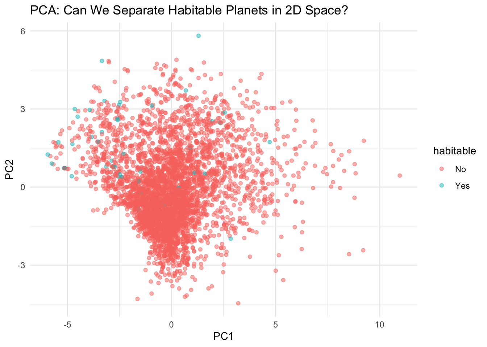
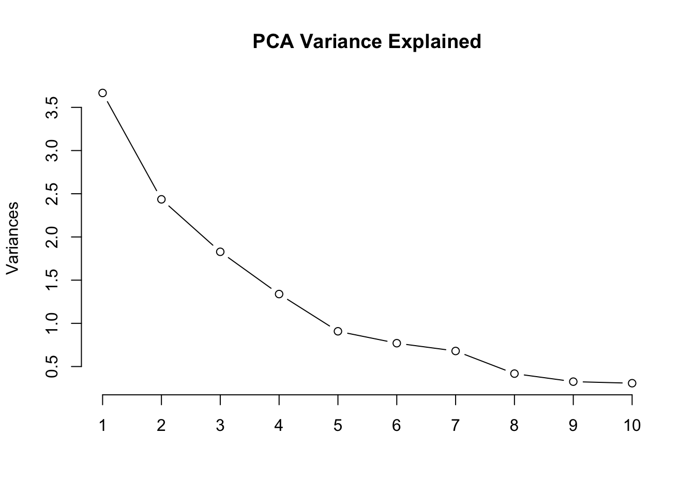
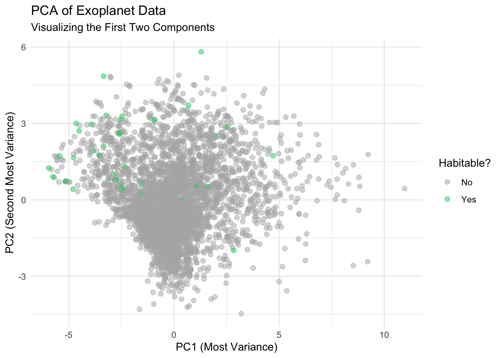
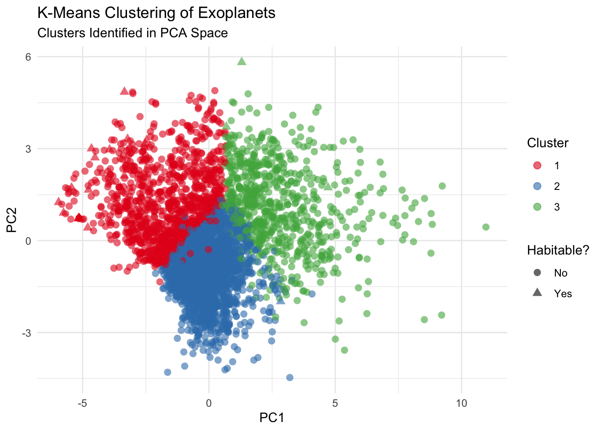
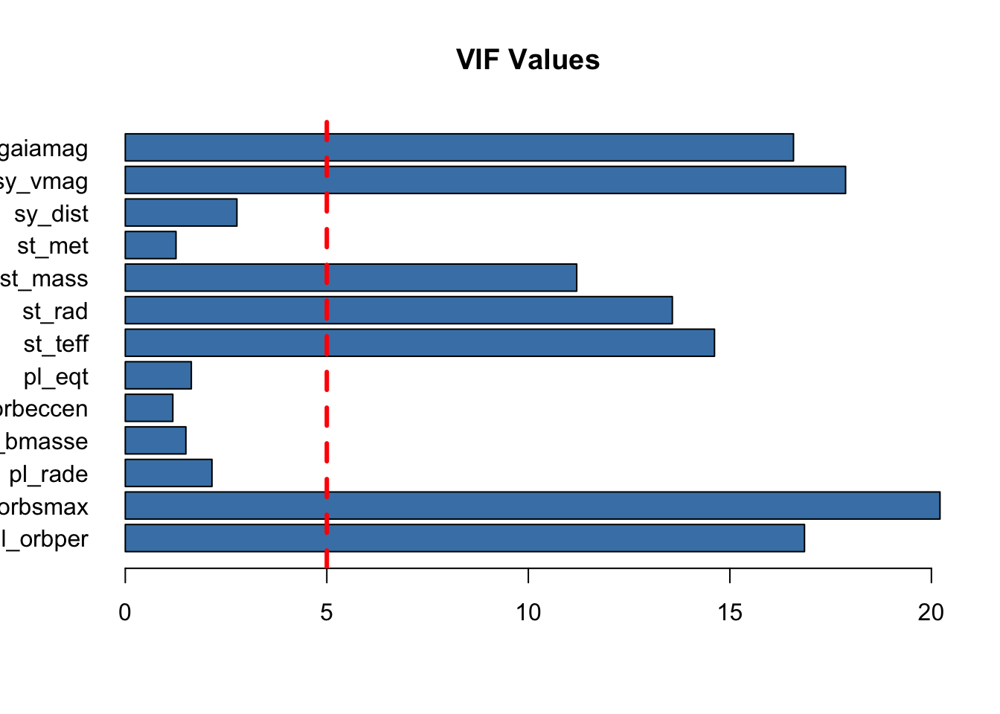
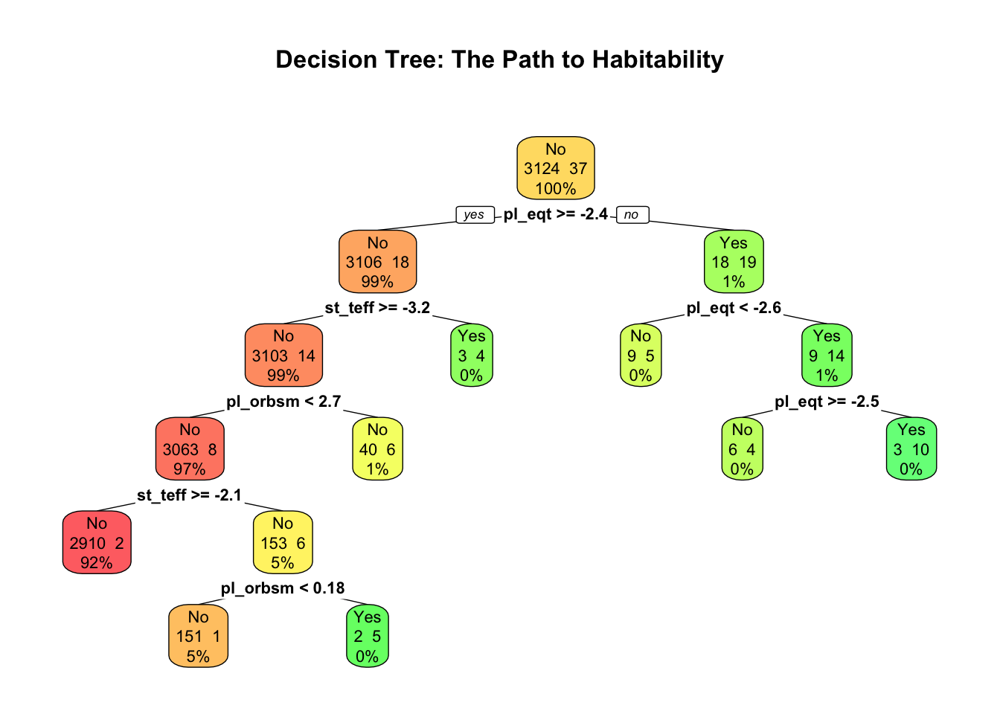
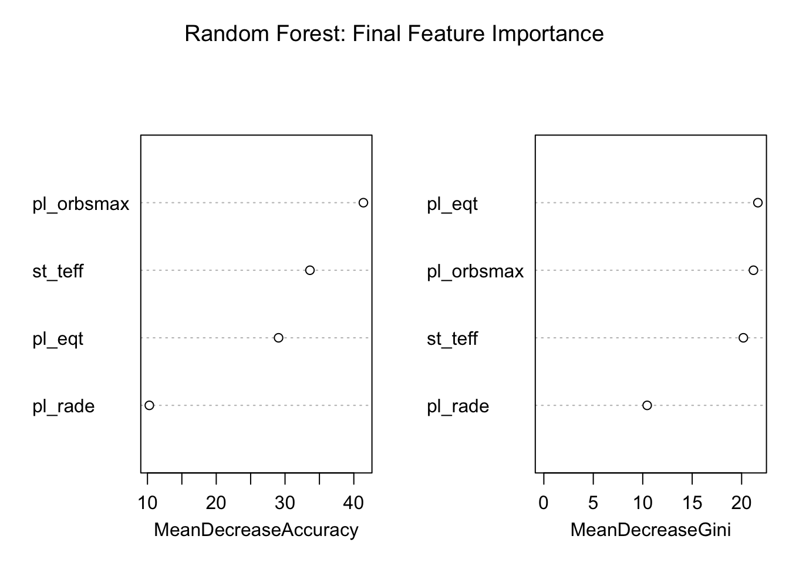
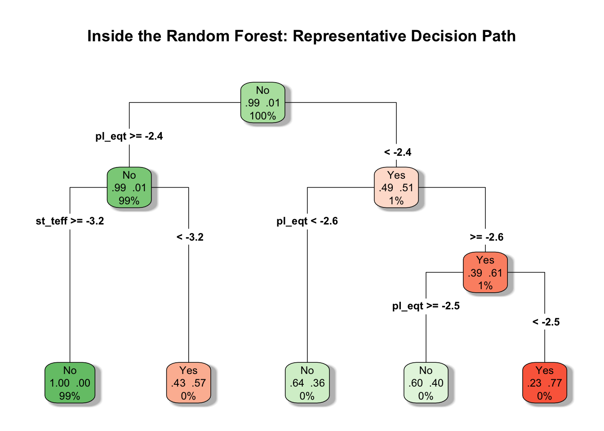
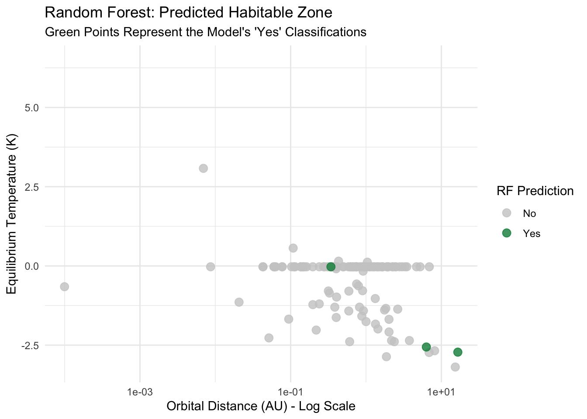
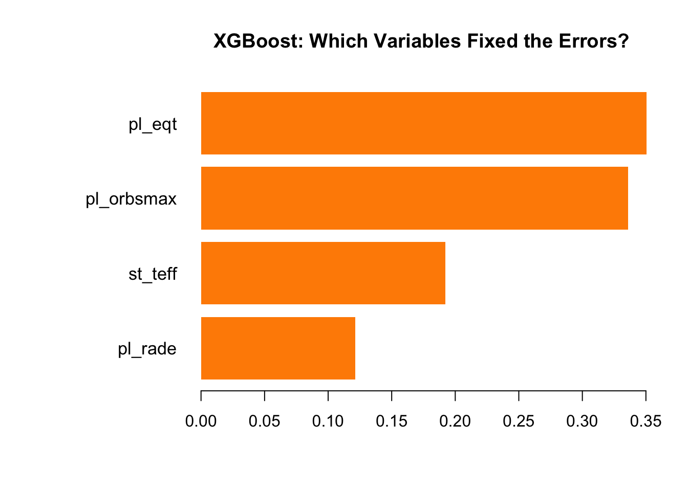

# Install and load the library
# if(!require(tidyverse)) install.packages("tidyverse")
library(readr)Calculating Exoplanet Habitability: Logistic and Ensemble Models
Abstract
This study investigates what factors make exoplanets habitable by using a dataset of 3,950 exoplanets. By employing a multi-stage machine learning pipeline that ranged from logistic regression to ensemble methods like Random Forest and XGBoost, this research identifies the most effective models for detecting rare “Goldilocks” candidates. The results demonstrate that while logistic models struggle with extreme class imbalance, ensemble models can achieve up to 100% precision in habitability classification, providing a good framework for prioritizing deep-space observations.
Introduction
The search for life beyond our solar system has transitioned from theoretical speculation to a data-intensive science. With thousands of exoplanets discovered by missions like Kepler and TESS, the challenge shifted from finding planets to “vetting” them for habitability. Habitability is defined by a balance of stellar temperature, orbital distance, and planetary radius. This study explores how machine learning can automate the identification of these “Earth-like” signatures, acting as a filter for the massive influx of astronomical data.
Research Questions
The primary objective of this research is to determine if machine learning can accurately predict exoplanet habitability based on orbital and stellar features. Specifically, this study asks: Which type of model provides the highest specificity when dealing with highly imbalanced astronomical data? Furthermore, which specific physical features, such as equilibrium temperature or orbital semi-major axis, carry the most predictive weight in defining the “Goldilocks Zone”?
Methods
The research utilized a cleaned dataset of 3,950 exoplanets, processed through a pipeline of scaling, Principal Component Analysis (PCA), and K-Means Clustering to identify initial data structures. Predictive modeling was conducted using five distinct models: Logistic Regression, Neural Networks, Decision Trees, Random Forests, and XGBoost. Models were trained on an 80/20 split, with a specific focus on “Feature Bagging” and “Gradient Boosting” to address the fact that habitable planets represent less than 2% of the total observations.
The primary data for this study was retrieved from the NASA Exoplanet Archive via the Kaggle data science platform. (Napolean, 2026) This dataset provided a consolidated record of 3,950 planetary observations, which allowed for a standardized preprocessing pipeline in the R environment.
The target variable, in_habitable_zone, was engineered based on planetary insolation flux pl_insol, defined as planets receiving between 0.25 and 2.2 times the sunlight of Earth. (Bryson, et. al., 2020)
Results
The analysis revealed that the Random Forest model with XGBoost significantly outperformed all other models. While Logistic Regression achieved high total accuracy, it failed to identify the majority of habitable candidates. The Random Forest model achieved a Specificity of 0.444 with zero false positives, while XGBoost reached a peak Specificity of 0.555. The R code implemented for the Random Forest model utilized 500 trees and identified pl_eqt (Temperature) and pl_orbsmax (Distance) as the most critical features for classification.
While the Logistic Regression model identified Orbital Distance pl_orbsmax as a significant predictor p < 0.01, it struggled to accurately classify rare habitable candidates. The ensemble methods, Random Forest and XGBoost, proved far more effective. XGBoost achieved the highest discovery rate (Specificity of 0.555), correctly identifying over half of the potential “Goldilocks” planets by navigating the complex, non-linear relationships between planetary radius pl_rade and equilibrium temperature pl_eqt.
| Model Type | Total Accuracy | Specificity (Catching Yes) | Balanced Accuracy | Verdict |
| Logistic Regression | 98.78% | 0.065 | 0.531 | Too Simple (Underfit) |
| Neural Network | 98.81% | 0.150 | 0.560 | Inconsistent |
| Decision Tree | 98.99% | 0.222 | 0.610 | Clear Logic / High Bias |
| Random Forest | 99.37% | 0.444 | 0.722 | Best Precision |
| XGBoost | 98.86% | 0.555 | 0.774 | Best Discovery Rate |
R Code
# Load the data
exoplanets_clean <- read_csv("exoplanets_clean.csv") Rows: 4473 Columns: 18
── Column specification ────────────────────────────────────────────────────────
Delimiter: ","
chr (3): pl_name, hostname, discoverymethod
dbl (15): disc_year, pl_orbper, pl_orbsmax, pl_rade, pl_bmasse, pl_orbeccen,...
ℹ Use `spec()` to retrieve the full column specification for this data.
ℹ Specify the column types or set `show_col_types = FALSE` to quiet this message.# Exploratory Data Analysis
# Structure of dataset
str(exoplanets_clean)spc_tbl_ [4,473 × 18] (S3: spec_tbl_df/tbl_df/tbl/data.frame)
$ pl_name : chr [1:4473] "AU Mic b" "AU Mic c" "BD+20 594 b" "BD-14 3065 b" ...
$ hostname : chr [1:4473] "AU Mic" "AU Mic" "BD+20 594" "BD-14 3065 A" ...
$ discoverymethod: chr [1:4473] "Transit" "Transit" "Transit" "Transit" ...
$ disc_year : num [1:4473] 2020 2021 2016 2024 2008 ...
$ pl_orbper : num [1:4473] 8.46 18.86 41.69 4.29 1.51 ...
$ pl_orbsmax : num [1:4473] 0.0649 0.1108 0.0688 0.0656 0.0688 ...
$ pl_rade : num [1:4473] 3.96 2.52 2.58 21.59 16.7 ...
$ pl_bmasse : num [1:4473] 87.4 87.4 22.2 3932 327.4 ...
$ pl_orbeccen : num [1:4473] 0.00577 0.00338 0 0.066 0 0.53 0 0.07 0 0 ...
$ pl_insol : num [1:4473] 21.2 7.3 80.5 80.5 80.5 ...
$ pl_eqt : num [1:4473] 600 459 939 2001 1898 ...
$ st_teff : num [1:4473] 3678 3678 5766 6935 5950 ...
$ st_rad : num [1:4473] 0.744 0.744 1.08 2.35 1.11 ...
$ st_mass : num [1:4473] 0.51 0.51 1.67 1.41 0.95 ...
$ st_met : num [1:4473] 0.23 0.23 -0.15 -0.34 -0.3 0.26 -0.03 0.16 0.01 0.05 ...
$ sy_dist : num [1:4473] 9.72 9.72 179.46 589.42 787.91 ...
$ sy_vmag : num [1:4473] 8.81 8.81 10.85 11.1 13.62 ...
$ sy_gaiamag : num [1:4473] 7.84 7.84 10.86 10.91 13.46 ...
- attr(*, "spec")=
.. cols(
.. pl_name = col_character(),
.. hostname = col_character(),
.. discoverymethod = col_character(),
.. disc_year = col_double(),
.. pl_orbper = col_double(),
.. pl_orbsmax = col_double(),
.. pl_rade = col_double(),
.. pl_bmasse = col_double(),
.. pl_orbeccen = col_double(),
.. pl_insol = col_double(),
.. pl_eqt = col_double(),
.. st_teff = col_double(),
.. st_rad = col_double(),
.. st_mass = col_double(),
.. st_met = col_double(),
.. sy_dist = col_double(),
.. sy_vmag = col_double(),
.. sy_gaiamag = col_double()
.. )
- attr(*, "problems")=<externalptr> # View the first few rows
head(exoplanets_clean)# A tibble: 6 × 18
pl_name hostname discoverymethod disc_year pl_orbper pl_orbsmax pl_rade
<chr> <chr> <chr> <dbl> <dbl> <dbl> <dbl>
1 AU Mic b AU Mic Transit 2020 8.46 0.0649 3.96
2 AU Mic c AU Mic Transit 2021 18.9 0.111 2.52
3 BD+20 594 b BD+20 594 Transit 2016 41.7 0.0688 2.58
4 BD-14 3065 b BD-14 306… Transit 2024 4.29 0.0656 21.6
5 CoRoT-1 b CoRoT-1 Transit 2008 1.51 0.0688 16.7
6 CoRoT-10 b CoRoT-10 Transit 2010 13.2 0.106 10.9
# ℹ 11 more variables: pl_bmasse <dbl>, pl_orbeccen <dbl>, pl_insol <dbl>,
# pl_eqt <dbl>, st_teff <dbl>, st_rad <dbl>, st_mass <dbl>, st_met <dbl>,
# sy_dist <dbl>, sy_vmag <dbl>, sy_gaiamag <dbl># Summarize the dataset
summary(exoplanets_clean) pl_name hostname discoverymethod disc_year
Length:4473 Length:4473 Length:4473 Min. :2002
Class :character Class :character Class :character 1st Qu.:2014
Mode :character Mode :character Mode :character Median :2016
Mean :2017
3rd Qu.:2021
Max. :2026
pl_orbper pl_orbsmax pl_rade pl_bmasse
Min. : 0.177 Min. :0.00600 Min. : 0.3098 Min. : 0.07
1st Qu.: 3.853 1st Qu.:0.06708 1st Qu.: 1.6130 1st Qu.: 87.35
Median : 8.172 Median :0.06880 Median : 2.4150 Median : 87.35
Mean : 23.755 Mean :0.09283 Mean : 4.3212 Mean : 166.71
3rd Qu.: 19.446 3rd Qu.:0.07060 3rd Qu.: 3.8940 3rd Qu.: 87.35
Max. :3650.000 Max. :4.50000 Max. :32.6000 Max. :8899.19
pl_orbeccen pl_insol pl_eqt st_teff
Min. :0.0000 Min. : 0.144 Min. : 134.4 Min. : 2566
1st Qu.:0.0331 1st Qu.: 80.450 1st Qu.: 939.0 1st Qu.: 5047
Median :0.0331 Median : 80.450 Median : 939.0 Median : 5596
Mean :0.0511 Mean : 142.010 Mean : 969.0 Mean : 5394
3rd Qu.:0.0331 3rd Qu.: 80.450 3rd Qu.: 939.0 3rd Qu.: 5913
Max. :0.9412 Max. :9110.000 Max. :3646.0 Max. :10000
st_rad st_mass st_met sy_dist
Min. :0.0123 Min. :0.0898 Min. :-0.95000 Min. : 6.869
1st Qu.:0.7700 1st Qu.:0.8340 1st Qu.:-0.03000 1st Qu.: 237.401
Median :0.9335 Median :0.9500 Median : 0.01950 Median : 501.574
Mean :1.0084 Mean :0.9403 Mean : 0.01704 Mean : 600.460
3rd Qu.:1.1790 3rd Qu.:1.0500 3rd Qu.: 0.07000 3rd Qu.: 862.920
Max. :6.3000 Max. :2.7800 Max. : 0.56000 Max. :3460.510
sy_vmag sy_gaiamag
Min. : 5.65 Min. : 5.513
1st Qu.:12.41 1st Qu.:12.188
Median :14.00 Median :13.776
Mean :13.67 Mean :13.413
3rd Qu.:15.22 3rd Qu.:14.955
Max. :19.83 Max. :18.887 # Clean the Dataset
# Find missing values of a variable
colSums(is.na(exoplanets_clean)) pl_name hostname discoverymethod disc_year pl_orbper
0 0 0 0 0
pl_orbsmax pl_rade pl_bmasse pl_orbeccen pl_insol
0 0 0 0 0
pl_eqt st_teff st_rad st_mass st_met
0 0 0 0 0
sy_dist sy_vmag sy_gaiamag
0 0 0 sum(is.na(exoplanets_clean))[1] 0# Check if any columns have 0s that shouldn't
colSums(exoplanets_clean == 0) pl_name hostname discoverymethod disc_year pl_orbper
0 0 0 0 0
pl_orbsmax pl_rade pl_bmasse pl_orbeccen pl_insol
0 0 0 523 0
pl_eqt st_teff st_rad st_mass st_met
0 0 0 0 173
sy_dist sy_vmag sy_gaiamag
0 0 0 # This removes ANY row that has an NA in any column
exoplanets_final <- na.omit(exoplanets_clean)
# Filter out rows where st_mass or pl_orbeccen are zero
# We use > 0 because these values must be positive in reality
exoplanets_final <- exoplanets_final[exoplanets_final$st_mass > 0 &
exoplanets_final$pl_orbeccen > 0, ]
# Check how many rows you have left
nrow(exoplanets_final)[1] 3950# This should now return 0 for both
sum(exoplanets_final$st_mass == 0)[1] 0sum(exoplanets_final$pl_orbeccen == 0)[1] 0# Count how many st_met are exactly 0
sum(exoplanets_final$st_met == 0, na.rm = TRUE)[1] 144# Count how many st_met are NA (The Holes)
sum(is.na(exoplanets_final$st_met))[1] 0# Feature Engineering
# Create the new categorical variable in_habitable_zone
# We'll use 'factor' so R knows it's a category (Yes/No)
exoplanets_final$in_habitable_zone <- ifelse(exoplanets_final$pl_insol > 0.25 &
exoplanets_final$pl_insol < 2.2,
"Yes", "No")
exoplanets_final$in_habitable_zone <- as.factor(exoplanets_final$in_habitable_zone)
# Get rid of the pl_insol column
# Setting a column to NULL effectively deletes it from the dataframe
exoplanets_final$pl_insol <- NULL
# Check your new column names - pl_insol should be missing
names(exoplanets_final) [1] "pl_name" "hostname" "discoverymethod"
[4] "disc_year" "pl_orbper" "pl_orbsmax"
[7] "pl_rade" "pl_bmasse" "pl_orbeccen"
[10] "pl_eqt" "st_teff" "st_rad"
[13] "st_mass" "st_met" "sy_dist"
[16] "sy_vmag" "sy_gaiamag" "in_habitable_zone"# See the breakdown of your new categorical variable
summary(exoplanets_final$in_habitable_zone) No Yes
3904 46 # Treat disc_year as categorical
exoplanets_final$disc_year <- as.factor(exoplanets_final$disc_year)# Summarize the Variables
# Summary for Quantitative Variables (13 columns)
quant_cols <- sapply(exoplanets_final, is.numeric)
summary(exoplanets_final[, quant_cols]) pl_orbper pl_orbsmax pl_rade pl_bmasse
Min. : 0.1769 Min. :0.00600 Min. : 0.3098 Min. : 0.07
1st Qu.: 4.1906 1st Qu.:0.06880 1st Qu.: 1.5717 1st Qu.: 87.35
Median : 9.1802 Median :0.06880 Median : 2.3318 Median : 87.35
Mean : 24.5182 Mean :0.09399 Mean : 3.7679 Mean : 155.87
3rd Qu.: 20.6546 3rd Qu.:0.07200 3rd Qu.: 3.3098 3rd Qu.: 87.35
Max. :1322.3000 Max. :2.72050 Max. :25.0000 Max. :8899.19
pl_orbeccen pl_eqt st_teff st_rad
Min. :0.00008 Min. : 134.4 Min. : 2566 Min. :0.0123
1st Qu.:0.03310 1st Qu.: 939.0 1st Qu.: 5046 1st Qu.:0.7700
Median :0.03310 Median : 939.0 Median : 5596 Median :0.9300
Mean :0.05787 Mean : 945.8 Mean : 5386 Mean :0.9917
3rd Qu.:0.03310 3rd Qu.: 939.0 3rd Qu.: 5905 3rd Qu.:1.1490
Max. :0.94120 Max. :3646.0 Max. :10000 Max. :6.3000
st_mass st_met sy_dist sy_vmag
Min. :0.0898 Min. :-0.95000 Min. : 6.869 Min. : 6.894
1st Qu.:0.8400 1st Qu.:-0.03000 1st Qu.: 264.993 1st Qu.:12.697
Median :0.9500 Median : 0.01950 Median : 529.859 Median :14.173
Mean :0.9312 Mean : 0.01214 Mean : 628.406 Mean :13.842
3rd Qu.:1.0400 3rd Qu.: 0.05000 3rd Qu.: 890.758 3rd Qu.:15.276
Max. :2.6500 Max. : 0.56000 Max. :3460.510 Max. :19.830
sy_gaiamag
Min. : 6.718
1st Qu.:12.480
Median :13.936
Mean :13.584
3rd Qu.:15.013
Max. :18.887 # Summary for Categorical Variables (5 columns)
cat_cols <- sapply(exoplanets_final, is.factor) | sapply(exoplanets_final, is.character)
lapply(exoplanets_final[, cat_cols], table)$pl_name
AU Mic b AU Mic c BD-14 3065 b CoRoT-10 b
1 1 1 1
CoRoT-12 b CoRoT-16 b CoRoT-18 b CoRoT-19 b
1 1 1 1
CoRoT-2 b CoRoT-22 b CoRoT-23 b CoRoT-27 b
1 1 1 1
CoRoT-28 b CoRoT-29 b CoRoT-30 b CoRoT-31 b
1 1 1 1
CoRoT-32 b CoRoT-5 b CoRoT-6 b CoRoT-9 b
1 1 1 1
EPIC 201238110 b EPIC 201427007 b EPIC 201497682 b EPIC 201615463 c
1 1 1 1
EPIC 201754305 d EPIC 201833600 c EPIC 201841433 b EPIC 205950854 c
1 1 1 1
EPIC 206024342 b EPIC 206024342 c EPIC 206024342 d EPIC 206032309 b
1 1 1 1
EPIC 206042996 b EPIC 206042996 c EPIC 206215704 b EPIC 206317286 b
1 1 1 1
EPIC 206317286 c EPIC 211822797 b EPIC 211945201 b EPIC 212297394 b
1 1 1 1
EPIC 212297394 c EPIC 212424622 b EPIC 212499991 b EPIC 212587672 b
1 1 1 1
EPIC 212587672 c EPIC 212624936 b EPIC 212624936 c EPIC 212737443 b
1 1 1 1
EPIC 212737443 c EPIC 220492298 b EPIC 220554210 c EPIC 220674823 c
1 1 1 1
EPIC 228836835 b EPIC 229004835 b EPIC 246851721 b EPIC 249893012 b
1 1 1 1
EPIC 249893012 c EPIC 249893012 d Gaia-1 b Gaia-2 b
1 1 1 1
GJ 1132 b GJ 1214 b GJ 143 b GJ 238 b
1 1 1 1
GJ 3090 b GJ 357 b GJ 367 b GJ 806 b
1 1 1 1
GJ 9827 b GJ 9827 c GJ 9827 d Gliese 12 b
1 1 1 1
HAT-P-1 b HAT-P-13 b HAT-P-14 b HAT-P-15 b
1 1 1 1
HAT-P-17 b HAT-P-18 b HAT-P-19 b HAT-P-20 b
1 1 1 1
HAT-P-21 b HAT-P-22 b HAT-P-23 b HAT-P-24 b
1 1 1 1
HAT-P-25 b HAT-P-26 b HAT-P-28 b HAT-P-29 b
1 1 1 1
HAT-P-30 b HAT-P-31 b HAT-P-32 b HAT-P-34 b
1 1 1 1
HAT-P-35 b HAT-P-36 b HAT-P-37 b HAT-P-38 b
1 1 1 1
HAT-P-43 b HAT-P-44 b HAT-P-45 b HAT-P-46 b
1 1 1 1
HAT-P-50 b HAT-P-51 b HAT-P-52 b HAT-P-53 b
1 1 1 1
HAT-P-54 b HAT-P-55 b HAT-P-56 b HAT-P-58 b
1 1 1 1
HAT-P-59 b HAT-P-60 b HAT-P-61 b HAT-P-62 b
1 1 1 1
HAT-P-63 b HAT-P-64 b HAT-P-65 b HAT-P-66 b
1 1 1 1
HAT-P-68 b HAT-P-9 b HATS-1 b HATS-10 b
1 1 1 1
HATS-11 b HATS-12 b HATS-13 b HATS-14 b
1 1 1 1
HATS-15 b HATS-17 b HATS-18 b HATS-2 b
1 1 1 1
HATS-22 b HATS-23 b HATS-25 b HATS-26 b
1 1 1 1
HATS-27 b HATS-28 b HATS-29 b HATS-30 b
1 1 1 1
HATS-31 b HATS-32 b HATS-33 b HATS-34 b
1 1 1 1
HATS-35 b HATS-36 b HATS-39 b HATS-4 b
1 1 1 1
HATS-40 b HATS-41 b HATS-42 b HATS-43 b
1 1 1 1
HATS-44 b HATS-45 b HATS-46 b HATS-47 b
1 1 1 1
HATS-48 A b HATS-49 b HATS-5 b HATS-50 b
1 1 1 1
HATS-51 b HATS-52 b HATS-53 b HATS-55 b
1 1 1 1
HATS-56 b HATS-57 b HATS-58 A b HATS-59 b
1 1 1 1
HATS-60 b HATS-61 b HATS-62 b HATS-63 b
1 1 1 1
HATS-64 b HATS-65 b HATS-66 b HATS-67 b
1 1 1 1
HATS-68 b HATS-69 b HATS-7 b HATS-70 b
1 1 1 1
HATS-72 b HATS-74 A b HATS-75 b HATS-76 b
1 1 1 1
HATS-77 b HATS-8 b HATS-9 b HD 101581 b
1 1 1 1
HD 101581 c HD 106315 b HD 106315 c HD 108236 b
1 1 1 1
HD 108236 c HD 108236 e HD 108236 f HD 109833 b
1 1 1 1
HD 109833 c HD 110067 b HD 110067 c HD 110067 d
1 1 1 1
HD 110067 e HD 110067 f HD 110067 g HD 110082 b
1 1 1 1
HD 110113 b HD 135694 b HD 1397 b HD 152843 b
1 1 1 1
HD 152843 c HD 15337 b HD 15337 c HD 15906 b
1 1 1 1
HD 15906 c HD 183579 b HD 18599 b HD 191939 b
1 1 1 1
HD 191939 c HD 191939 d HD 202772 A b HD 207496 b
1 1 1 1
HD 21749 c HD 219666 b HD 221416 b HD 224018 c
1 1 1 1
HD 224018 d HD 22946 d HD 23472 b HD 23472 c
1 1 1 1
HD 23472 d HD 23472 e HD 23472 f HD 260655 b
1 1 1 1
HD 260655 c HD 2685 b HD 28109 b HD 28109 c
1 1 1 1
HD 28109 d HD 3167 c HD 35843 c HD 5278 b
1 1 1 1
HD 56414 b HD 63433 b HD 63433 c HD 63433 d
1 1 1 1
HD 73344 b HD 73583 b HD 73583 c HD 77946 b
1 1 1 1
HD 86226 c HD 89345 b HIP 113103 b HIP 113103 c
1 1 1 1
HIP 116454 b HIP 41378 b HIP 41378 c HIP 41378 d
1 1 1 1
HIP 41378 e HIP 41378 f HIP 67522 b HIP 67522 c
1 1 1 1
HIP 8152 c HIP 94235 b HIP 97166 b IRAS 04125+2902 b
1 1 1 1
K2-10 b K2-101 b K2-102 b K2-104 b
1 1 1 1
K2-105 b K2-107 b K2-108 b K2-11 b
1 1 1 1
K2-110 b K2-111 b K2-113 b K2-114 b
1 1 1 1
K2-115 b K2-116 b K2-117 b K2-117 c
1 1 1 1
K2-118 b K2-119 b K2-12 b K2-121 b
1 1 1 1
K2-122 b K2-123 b K2-124 b K2-125 b
1 1 1 1
K2-126 b K2-127 b K2-128 b K2-129 b
1 1 1 1
K2-13 b K2-130 b K2-132 b K2-133 b
1 1 1 1
K2-133 c K2-133 d K2-133 e K2-136 b
1 1 1 1
K2-136 c K2-136 d K2-137 b K2-138 b
1 1 1 1
K2-138 c K2-138 d K2-138 e K2-138 f
1 1 1 1
K2-138 g K2-139 b K2-14 b K2-141 c
1 1 1 1
K2-146 b K2-146 c K2-147 b K2-148 b
1 1 1 1
K2-148 c K2-148 d K2-149 b K2-15 b
1 1 1 1
K2-150 b K2-151 b K2-152 b K2-153 b
1 1 1 1
K2-154 b K2-154 c K2-155 b K2-155 c
1 1 1 1
K2-155 d K2-156 b K2-157 b K2-158 b
1 1 1 1
K2-158 c K2-159 b K2-16 b K2-16 c
1 1 1 1
K2-160 b K2-161 b K2-162 b K2-163 b
1 1 1 1
K2-164 b K2-165 b K2-165 c K2-165 d
1 1 1 1
K2-166 b K2-167 b K2-168 b K2-169 b
1 1 1 1
K2-17 b K2-170 b K2-170 c K2-171 b
1 1 1 1
K2-172 b K2-172 c K2-173 b K2-174 b
1 1 1 1
K2-175 b K2-176 b K2-177 b K2-178 b
1 1 1 1
K2-179 b K2-18 b K2-180 b K2-181 b
1 1 1 1
K2-182 b K2-183 b K2-183 c K2-183 d
1 1 1 1
K2-184 b K2-185 b K2-185 c K2-186 b
1 1 1 1
K2-187 b K2-187 c K2-187 d K2-187 e
1 1 1 1
K2-188 b K2-188 c K2-189 b K2-189 c
1 1 1 1
K2-19 b K2-19 c K2-19 d K2-190 b
1 1 1 1
K2-190 c K2-191 b K2-192 b K2-193 b
1 1 1 1
K2-194 b K2-195 b K2-195 c K2-196 b
1 1 1 1
K2-197 b K2-198 b K2-198 c K2-198 d
1 1 1 1
K2-199 b K2-199 c K2-200 b K2-201 b
1 1 1 1
K2-201 c K2-202 b K2-203 b K2-204 b
1 1 1 1
K2-205 b K2-206 b K2-207 b K2-208 b
1 1 1 1
K2-209 b K2-21 b K2-21 c K2-210 b
1 1 1 1
K2-211 b K2-212 b K2-213 b K2-214 b
1 1 1 1
K2-215 b K2-217 b K2-218 b K2-219 b
1 1 1 1
K2-219 c K2-219 d K2-22 b K2-220 b
1 1 1 1
K2-221 b K2-222 b K2-223 b K2-223 c
1 1 1 1
K2-224 b K2-224 c K2-225 b K2-226 b
1 1 1 1
K2-227 b K2-228 b K2-229 b K2-229 c
1 1 1 1
K2-230 b K2-231 b K2-232 b K2-233 d
1 1 1 1
K2-237 b K2-239 b K2-239 c K2-239 d
1 1 1 1
K2-24 b K2-24 c K2-240 b K2-240 c
1 1 1 1
K2-241 b K2-242 b K2-243 b K2-243 c
1 1 1 1
K2-244 b K2-245 b K2-246 b K2-247 b
1 1 1 1
K2-247 c K2-248 b K2-249 b K2-25 b
1 1 1 1
K2-250 b K2-251 b K2-252 b K2-253 b
1 1 1 1
K2-254 b K2-254 c K2-255 b K2-257 b
1 1 1 1
K2-258 b K2-259 b K2-26 b K2-260 b
1 1 1 1
K2-261 b K2-263 b K2-264 b K2-264 c
1 1 1 1
K2-265 b K2-266 b K2-266 c K2-266 d
1 1 1 1
K2-266 e K2-268 b K2-268 c K2-268 d
1 1 1 1
K2-268 e K2-268 f K2-269 b K2-27 b
1 1 1 1
K2-270 b K2-270 c K2-271 b K2-272 b
1 1 1 1
K2-273 b K2-274 b K2-275 b K2-275 c
1 1 1 1
K2-276 b K2-277 b K2-278 b K2-279 b
1 1 1 1
K2-280 b K2-281 b K2-282 b K2-283 b
1 1 1 1
K2-284 b K2-286 b K2-287 b K2-288 B b
1 1 1 1
K2-289 b K2-29 b K2-292 b K2-293 b
1 1 1 1
K2-294 b K2-3 b K2-3 c K2-3 d
1 1 1 1
K2-308 b K2-315 b K2-316 b K2-316 c
1 1 1 1
K2-317 b K2-318 b K2-319 b K2-32 b
1 1 1 1
K2-32 c K2-32 d K2-32 e K2-320 b
1 1 1 1
K2-321 b K2-322 b K2-323 b K2-324 b
1 1 1 1
K2-325 b K2-326 b K2-329 b K2-330 b
1 1 1 1
K2-331 b K2-331 c K2-332 b K2-333 b
1 1 1 1
K2-334 b K2-335 b K2-336 b K2-337 b
1 1 1 1
K2-338 b K2-339 b K2-34 b K2-340 b
1 1 1 1
K2-341 b K2-342 b K2-343 b K2-343 c
1 1 1 1
K2-344 b K2-345 b K2-346 b K2-347 b
1 1 1 1
K2-348 b K2-348 c K2-349 b K2-35 b
1 1 1 1
K2-35 c K2-350 b K2-350 c K2-351 b
1 1 1 1
K2-352 b K2-352 c K2-352 d K2-353 b
1 1 1 1
K2-354 b K2-355 b K2-356 b K2-357 b
1 1 1 1
K2-358 b K2-36 b K2-36 c K2-365 b
1 1 1 1
K2-366 b K2-367 b K2-368 b K2-368 c
1 1 1 1
K2-368 d K2-369 b K2-37 b K2-37 c
1 1 1 1
K2-37 d K2-370 b K2-371 b K2-372 b
1 1 1 1
K2-373 b K2-374 b K2-374 c K2-375 b
1 1 1 1
K2-376 b K2-377 b K2-378 b K2-379 b
1 1 1 1
K2-38 b K2-38 c K2-380 b K2-381 b
1 1 1 1
K2-381 c K2-381 d K2-382 b K2-383 b
1 1 1 1
K2-384 b K2-384 c K2-384 d K2-384 e
1 1 1 1
K2-384 f K2-385 b K2-386 b K2-387 b
1 1 1 1
K2-388 b K2-389 b K2-389 c K2-390 b
1 1 1 1
K2-391 b K2-392 b K2-393 b K2-394 b
1 1 1 1
K2-395 b K2-395 c K2-396 b K2-396 c
1 1 1 1
K2-397 b K2-398 b K2-398 c K2-4 b
1 1 1 1
K2-400 b K2-401 b K2-402 b K2-403 b
1 1 1 1
K2-404 b K2-405 b K2-406 b K2-407 b
1 1 1 1
K2-407 c K2-408 b K2-409 b K2-411 b
1 1 1 1
K2-412 b K2-413 b K2-413 c K2-414 b
1 1 1 1
K2-414 c K2-415 b K2-416 b K2-417 b
1 1 1 1
K2-419 A b K2-42 b K2-43 b K2-43 c
1 1 1 1
K2-44 b K2-45 b K2-46 b K2-47 b
1 1 1 1
K2-48 b K2-49 b K2-5 b K2-5 c
1 1 1 1
K2-50 b K2-52 b K2-53 b K2-54 b
1 1 1 1
K2-55 b K2-57 b K2-58 b K2-58 c
1 1 1 1
K2-58 d K2-59 b K2-59 c K2-6 b
1 1 1 1
K2-61 b K2-62 b K2-62 c K2-63 b
1 1 1 1
K2-63 c K2-64 b K2-65 b K2-68 b
1 1 1 1
K2-69 b K2-7 b K2-70 b K2-71 b
1 1 1 1
K2-72 b K2-72 c K2-72 d K2-72 e
1 1 1 1
K2-73 b K2-74 b K2-75 b K2-75 c
1 1 1 1
K2-77 b K2-79 b K2-8 b K2-8 c
1 1 1 1
K2-80 b K2-80 c K2-80 d K2-81 b
1 1 1 1
K2-83 b K2-83 c K2-84 b K2-84 c
1 1 1 1
K2-85 b K2-86 b K2-87 b K2-88 b
1 1 1 1
K2-89 b K2-9 b K2-90 b K2-90 c
1 1 1 1
K2-91 b K2-95 b K2-97 b K2-98 b
1 1 1 1
K2-99 b KELT-1 b KELT-10 b KELT-17 b
1 1 1 1
KELT-19 A b KELT-20 b KELT-24 b KELT-6 b
1 1 1 1
KELT-8 b Kepler-10 c Kepler-100 b Kepler-100 c
1 1 1 1
Kepler-100 d Kepler-1000 b Kepler-1001 b Kepler-1001 c
1 1 1 1
Kepler-1002 b Kepler-1003 b Kepler-1004 b Kepler-1005 b
1 1 1 1
Kepler-1006 b Kepler-1007 b Kepler-1008 b Kepler-1009 b
1 1 1 1
Kepler-101 b Kepler-1010 b Kepler-1011 b Kepler-1012 b
1 1 1 1
Kepler-1013 b Kepler-1014 b Kepler-1015 b Kepler-1016 b
1 1 1 1
Kepler-1016 c Kepler-1017 b Kepler-1018 b Kepler-1019 b
1 1 1 1
Kepler-102 b Kepler-102 c Kepler-102 d Kepler-102 e
1 1 1 1
Kepler-102 f Kepler-1020 b Kepler-1021 b Kepler-1022 b
1 1 1 1
Kepler-1023 b Kepler-1024 b Kepler-1025 b Kepler-1026 b
1 1 1 1
Kepler-1027 b Kepler-1028 b Kepler-1029 b Kepler-103 b
1 1 1 1
Kepler-103 c Kepler-1030 b Kepler-1031 b Kepler-1032 b
1 1 1 1
Kepler-1033 b Kepler-1034 b Kepler-1035 b Kepler-1036 b
1 1 1 1
Kepler-1037 b Kepler-1038 b Kepler-1038 c Kepler-1039 b
1 1 1 1
Kepler-104 b Kepler-104 c Kepler-104 d Kepler-1040 b
1 1 1 1
Kepler-1041 b Kepler-1042 b Kepler-1043 b Kepler-1044 b
1 1 1 1
Kepler-1045 b Kepler-1046 b Kepler-1047 b Kepler-1047 c
1 1 1 1
Kepler-1048 b Kepler-1049 b Kepler-105 b Kepler-105 c
1 1 1 1
Kepler-1050 b Kepler-1050 c Kepler-1051 b Kepler-1052 b
1 1 1 1
Kepler-1053 b Kepler-1054 b Kepler-1055 b Kepler-1056 b
1 1 1 1
Kepler-1057 b Kepler-1058 b Kepler-1059 b Kepler-106 b
1 1 1 1
Kepler-106 c Kepler-106 d Kepler-106 e Kepler-1060 b
1 1 1 1
Kepler-1061 b Kepler-1062 b Kepler-1063 b Kepler-1064 b
1 1 1 1
Kepler-1065 b Kepler-1065 c Kepler-1066 b Kepler-1067 b
1 1 1 1
Kepler-1067 c Kepler-1068 b Kepler-1069 b Kepler-107 b
1 1 1 1
Kepler-107 c Kepler-107 d Kepler-107 e Kepler-1070 b
1 1 1 1
Kepler-1071 b Kepler-1072 b Kepler-1073 b Kepler-1073 c
1 1 1 1
Kepler-1073 d Kepler-1074 b Kepler-1075 b Kepler-1076 b
1 1 1 1
Kepler-1077 b Kepler-1078 b Kepler-1079 b Kepler-108 b
1 1 1 1
Kepler-108 c Kepler-1080 b Kepler-1081 b Kepler-1082 b
1 1 1 1
Kepler-1083 b Kepler-1084 b Kepler-1085 b Kepler-1085 c
1 1 1 1
Kepler-1086 b Kepler-1086 c Kepler-1087 b Kepler-1088 b
1 1 1 1
Kepler-1089 b Kepler-109 b Kepler-109 c Kepler-1090 b
1 1 1 1
Kepler-1090 c Kepler-1091 b Kepler-1092 b Kepler-1093 b
1 1 1 1
Kepler-1093 c Kepler-1094 b Kepler-1095 b Kepler-1096 b
1 1 1 1
Kepler-1097 b Kepler-1098 b Kepler-1099 b Kepler-11 b
1 1 1 1
Kepler-11 c Kepler-11 d Kepler-11 e Kepler-11 f
1 1 1 1
Kepler-11 g Kepler-110 b Kepler-110 c Kepler-1100 b
1 1 1 1
Kepler-1101 b Kepler-1102 b Kepler-1103 b Kepler-1104 b
1 1 1 1
Kepler-1105 b Kepler-1106 b Kepler-1107 b Kepler-1108 b
1 1 1 1
Kepler-1109 b Kepler-111 b Kepler-111 c Kepler-1110 b
1 1 1 1
Kepler-1111 b Kepler-1112 b Kepler-1113 b Kepler-1114 b
1 1 1 1
Kepler-1115 b Kepler-1116 b Kepler-1117 b Kepler-1118 b
1 1 1 1
Kepler-1119 b Kepler-112 b Kepler-112 c Kepler-1120 b
1 1 1 1
Kepler-1121 b Kepler-1122 b Kepler-1123 b Kepler-1124 b
1 1 1 1
Kepler-1125 b Kepler-1126 b Kepler-1127 b Kepler-1128 b
1 1 1 1
Kepler-1129 b Kepler-1129 c Kepler-113 b Kepler-113 c
1 1 1 1
Kepler-1130 b Kepler-1130 c Kepler-1130 d Kepler-1131 b
1 1 1 1
Kepler-1132 b Kepler-1133 b Kepler-1134 b Kepler-1135 b
1 1 1 1
Kepler-1136 b Kepler-1137 b Kepler-1138 b Kepler-1139 b
1 1 1 1
Kepler-114 b Kepler-114 c Kepler-114 d Kepler-1140 b
1 1 1 1
Kepler-1141 b Kepler-1142 b Kepler-1143 b Kepler-1143 c
1 1 1 1
Kepler-1144 b Kepler-1145 b Kepler-1146 b Kepler-1147 b
1 1 1 1
Kepler-1148 b Kepler-1149 b Kepler-115 b Kepler-115 c
1 1 1 1
Kepler-1150 b Kepler-1151 b Kepler-1152 b Kepler-1153 b
1 1 1 1
Kepler-1154 b Kepler-1154 c Kepler-1155 b Kepler-1156 b
1 1 1 1
Kepler-1157 b Kepler-1158 b Kepler-1159 b Kepler-116 b
1 1 1 1
Kepler-116 c Kepler-1160 b Kepler-1161 b Kepler-1162 b
1 1 1 1
Kepler-1163 b Kepler-1164 b Kepler-1165 b Kepler-1165 c
1 1 1 1
Kepler-1166 b Kepler-1167 b Kepler-1168 b Kepler-1169 b
1 1 1 1
Kepler-117 b Kepler-117 c Kepler-1170 b Kepler-1171 b
1 1 1 1
Kepler-1172 b Kepler-1173 b Kepler-1174 b Kepler-1175 b
1 1 1 1
Kepler-1176 b Kepler-1177 b Kepler-1178 b Kepler-1179 b
1 1 1 1
Kepler-118 b Kepler-118 c Kepler-1180 b Kepler-1181 b
1 1 1 1
Kepler-1182 b Kepler-1183 b Kepler-1184 b Kepler-1185 b
1 1 1 1
Kepler-1186 b Kepler-1187 b Kepler-1188 b Kepler-1189 b
1 1 1 1
Kepler-119 b Kepler-119 c Kepler-1190 b Kepler-1191 b
1 1 1 1
Kepler-1192 b Kepler-1193 b Kepler-1194 b Kepler-1195 b
1 1 1 1
Kepler-1196 b Kepler-1197 b Kepler-1198 b Kepler-1199 b
1 1 1 1
Kepler-12 b Kepler-120 b Kepler-120 c Kepler-1200 b
1 1 1 1
Kepler-1201 b Kepler-1202 b Kepler-1203 b Kepler-1204 b
1 1 1 1
Kepler-1205 b Kepler-1206 b Kepler-1207 b Kepler-1208 b
1 1 1 1
Kepler-1209 b Kepler-121 b Kepler-121 c Kepler-1210 b
1 1 1 1
Kepler-1211 b Kepler-1212 b Kepler-1213 b Kepler-1214 b
1 1 1 1
Kepler-1215 b Kepler-1216 b Kepler-1217 b Kepler-1218 b
1 1 1 1
Kepler-1219 b Kepler-122 b Kepler-122 c Kepler-122 d
1 1 1 1
Kepler-122 e Kepler-122 f Kepler-1220 b Kepler-1221 b
1 1 1 1
Kepler-1222 b Kepler-1223 b Kepler-1224 b Kepler-1225 b
1 1 1 1
Kepler-1226 b Kepler-1227 b Kepler-1228 b Kepler-1229 b
1 1 1 1
Kepler-123 b Kepler-123 c Kepler-1230 b Kepler-1231 b
1 1 1 1
Kepler-1232 b Kepler-1233 b Kepler-1234 b Kepler-1235 b
1 1 1 1
Kepler-1236 b Kepler-1237 b Kepler-1238 b Kepler-1239 b
1 1 1 1
Kepler-124 b Kepler-124 c Kepler-124 d Kepler-1240 b
1 1 1 1
Kepler-1241 b Kepler-1242 b Kepler-1243 b Kepler-1244 b
1 1 1 1
Kepler-1245 b Kepler-1245 c Kepler-1246 b Kepler-1247 b
1 1 1 1
Kepler-1248 b Kepler-1249 b Kepler-125 b Kepler-125 c
1 1 1 1
Kepler-1250 b Kepler-1251 b Kepler-1252 b Kepler-1253 b
1 1 1 1
Kepler-1254 b Kepler-1254 c Kepler-1254 d Kepler-1255 b
1 1 1 1
Kepler-1256 b Kepler-1257 b Kepler-1258 b Kepler-1259 b
1 1 1 1
Kepler-126 b Kepler-126 c Kepler-126 d Kepler-1260 b
1 1 1 1
Kepler-1261 b Kepler-1262 b Kepler-1263 b Kepler-1264 b
1 1 1 1
Kepler-1265 b Kepler-1266 b Kepler-1266 c Kepler-1267 b
1 1 1 1
Kepler-1268 b Kepler-1269 b Kepler-127 b Kepler-127 c
1 1 1 1
Kepler-127 d Kepler-1270 b Kepler-1271 b Kepler-1272 b
1 1 1 1
Kepler-1273 b Kepler-1274 b Kepler-1275 b Kepler-1276 b
1 1 1 1
Kepler-1277 b Kepler-1278 b Kepler-1279 b Kepler-128 b
1 1 1 1
Kepler-128 c Kepler-1280 b Kepler-1281 b Kepler-1282 b
1 1 1 1
Kepler-1283 b Kepler-1284 b Kepler-1285 b Kepler-1286 b
1 1 1 1
Kepler-1287 b Kepler-1288 b Kepler-1289 b Kepler-129 b
1 1 1 1
Kepler-129 c Kepler-1290 b Kepler-1291 b Kepler-1292 b
1 1 1 1
Kepler-1293 b Kepler-1294 b Kepler-1295 b Kepler-1296 b
1 1 1 1
Kepler-1297 b Kepler-1298 b Kepler-1299 b Kepler-130 b
1 1 1 1
Kepler-130 d Kepler-1300 b Kepler-1301 b Kepler-1302 b
1 1 1 1
Kepler-1303 b Kepler-1304 b Kepler-1305 b Kepler-1306 b
1 1 1 1
Kepler-1307 b Kepler-1308 b Kepler-1309 b Kepler-131 b
1 1 1 1
Kepler-131 c Kepler-1310 b Kepler-1311 b Kepler-1311 c
1 1 1 1
Kepler-1311 d Kepler-1312 b Kepler-1312 c Kepler-1313 b
1 1 1 1
Kepler-1314 b Kepler-1315 b Kepler-1315 c Kepler-1316 b
1 1 1 1
Kepler-1317 b Kepler-1318 b Kepler-1319 b Kepler-132 b
1 1 1 1
Kepler-132 c Kepler-132 d Kepler-132 e Kepler-1320 b
1 1 1 1
Kepler-1321 b Kepler-1321 c Kepler-1321 d Kepler-1322 b
1 1 1 1
Kepler-1322 c Kepler-1323 b Kepler-1324 b Kepler-1325 b
1 1 1 1
Kepler-1326 b Kepler-1327 b Kepler-1328 b Kepler-1329 b
1 1 1 1
Kepler-133 b Kepler-133 c Kepler-1330 b Kepler-1331 b
1 1 1 1
Kepler-1332 b Kepler-1333 b Kepler-1334 b Kepler-1335 b
1 1 1 1
Kepler-1336 b Kepler-1336 c Kepler-1337 b Kepler-1338 b
1 1 1 1
Kepler-1339 b Kepler-134 b Kepler-134 c Kepler-1340 b
1 1 1 1
Kepler-1341 b Kepler-1342 b Kepler-1343 b Kepler-1344 b
1 1 1 1
Kepler-1345 b Kepler-1346 b Kepler-1347 b Kepler-1348 b
1 1 1 1
Kepler-1349 b Kepler-135 b Kepler-135 c Kepler-1350 b
1 1 1 1
Kepler-1350 c Kepler-1351 b Kepler-1352 b Kepler-1353 b
1 1 1 1
Kepler-1354 b Kepler-1355 b Kepler-1356 b Kepler-1357 b
1 1 1 1
Kepler-1358 b Kepler-1359 b Kepler-136 b Kepler-136 c
1 1 1 1
Kepler-1360 b Kepler-1361 b Kepler-1362 b Kepler-1363 b
1 1 1 1
Kepler-1364 b Kepler-1365 b Kepler-1365 c Kepler-1366 b
1 1 1 1
Kepler-1367 b Kepler-1368 b Kepler-1369 b Kepler-137 b
1 1 1 1
Kepler-137 c Kepler-1370 b Kepler-1370 c Kepler-1371 b
1 1 1 1
Kepler-1371 c Kepler-1372 b Kepler-1373 b Kepler-1374 b
1 1 1 1
Kepler-1375 b Kepler-1376 b Kepler-1377 b Kepler-1378 b
1 1 1 1
Kepler-1379 b Kepler-138 b Kepler-138 c Kepler-138 d
1 1 1 1
Kepler-1380 b Kepler-1381 b Kepler-1382 b Kepler-1383 b
1 1 1 1
Kepler-1384 b Kepler-1385 b Kepler-1386 b Kepler-1387 b
1 1 1 1
Kepler-1388 b Kepler-1388 c Kepler-1388 d Kepler-1388 e
1 1 1 1
Kepler-1389 b Kepler-139 b Kepler-139 c Kepler-1390 b
1 1 1 1
Kepler-1391 b Kepler-1392 b Kepler-1393 b Kepler-1394 b
1 1 1 1
Kepler-1395 b Kepler-1396 b Kepler-1397 b Kepler-1398 b
1 1 1 1
Kepler-1398 c Kepler-1399 b Kepler-14 b Kepler-140 b
1 1 1 1
Kepler-140 c Kepler-1400 b Kepler-1401 b Kepler-1402 b
1 1 1 1
Kepler-1403 b Kepler-1404 b Kepler-1405 b Kepler-1406 b
1 1 1 1
Kepler-1407 b Kepler-1408 b Kepler-1409 b Kepler-141 b
1 1 1 1
Kepler-141 c Kepler-1410 b Kepler-1411 b Kepler-1412 b
1 1 1 1
Kepler-1413 b Kepler-1414 b Kepler-1415 b Kepler-1416 b
1 1 1 1
Kepler-1417 b Kepler-1418 b Kepler-1419 b Kepler-142 b
1 1 1 1
Kepler-142 c Kepler-142 d Kepler-1420 b Kepler-1421 b
1 1 1 1
Kepler-1422 b Kepler-1423 b Kepler-1424 b Kepler-1425 b
1 1 1 1
Kepler-1426 b Kepler-1427 b Kepler-1428 b Kepler-1429 b
1 1 1 1
Kepler-143 b Kepler-143 c Kepler-1430 b Kepler-1431 b
1 1 1 1
Kepler-1432 b Kepler-1433 b Kepler-1434 b Kepler-1435 b
1 1 1 1
Kepler-1436 b Kepler-1437 b Kepler-1438 b Kepler-1439 b
1 1 1 1
Kepler-144 b Kepler-144 c Kepler-1440 b Kepler-1441 b
1 1 1 1
Kepler-1442 b Kepler-1443 b Kepler-1444 b Kepler-1445 b
1 1 1 1
Kepler-1446 b Kepler-1447 b Kepler-1448 b Kepler-1449 b
1 1 1 1
Kepler-145 b Kepler-145 c Kepler-1450 b Kepler-1451 b
1 1 1 1
Kepler-1452 b Kepler-1453 b Kepler-1454 b Kepler-1455 b
1 1 1 1
Kepler-1456 b Kepler-1457 b Kepler-1458 b Kepler-1459 b
1 1 1 1
Kepler-146 b Kepler-146 c Kepler-1460 b Kepler-1461 b
1 1 1 1
Kepler-1462 b Kepler-1463 b Kepler-1464 b Kepler-1464 c
1 1 1 1
Kepler-1465 b Kepler-1466 b Kepler-1467 b Kepler-1468 b
1 1 1 1
Kepler-1468 c Kepler-1468 d Kepler-1469 b Kepler-147 b
1 1 1 1
Kepler-147 c Kepler-1470 b Kepler-1471 b Kepler-1472 b
1 1 1 1
Kepler-1473 b Kepler-1474 b Kepler-1475 b Kepler-1476 b
1 1 1 1
Kepler-1477 b Kepler-1478 b Kepler-1479 b Kepler-148 b
1 1 1 1
Kepler-148 c Kepler-148 d Kepler-1480 b Kepler-1481 b
1 1 1 1
Kepler-1482 b Kepler-1483 b Kepler-1484 b Kepler-1485 b
1 1 1 1
Kepler-1486 b Kepler-1487 b Kepler-1488 b Kepler-1488 c
1 1 1 1
Kepler-1489 b Kepler-1489 c Kepler-149 b Kepler-149 c
1 1 1 1
Kepler-149 d Kepler-1490 b Kepler-1491 b Kepler-1492 b
1 1 1 1
Kepler-1493 b Kepler-1494 b Kepler-1495 b Kepler-1496 b
1 1 1 1
Kepler-1497 b Kepler-1498 b Kepler-1499 b Kepler-15 b
1 1 1 1
Kepler-150 b Kepler-150 c Kepler-150 d Kepler-150 e
1 1 1 1
Kepler-150 f Kepler-1500 b Kepler-1501 b Kepler-1502 b
1 1 1 1
Kepler-1503 b Kepler-1504 b Kepler-1505 b Kepler-1506 b
1 1 1 1
Kepler-1507 b Kepler-1508 b Kepler-1509 b Kepler-151 b
1 1 1 1
Kepler-151 c Kepler-1510 b Kepler-1511 b Kepler-1512 b
1 1 1 1
Kepler-1513 b Kepler-1514 b Kepler-1514 c Kepler-1515 b
1 1 1 1
Kepler-1516 b Kepler-1517 b Kepler-1518 b Kepler-1519 b
1 1 1 1
Kepler-152 b Kepler-152 c Kepler-1520 b Kepler-1521 b
1 1 1 1
Kepler-1522 b Kepler-1523 b Kepler-1524 b Kepler-1525 b
1 1 1 1
Kepler-1526 b Kepler-1527 b Kepler-1528 b Kepler-1529 b
1 1 1 1
Kepler-153 b Kepler-153 c Kepler-1530 b Kepler-1530 c
1 1 1 1
Kepler-1530 d Kepler-1531 b Kepler-1532 b Kepler-1533 b
1 1 1 1
Kepler-1534 b Kepler-1535 b Kepler-1536 b Kepler-1537 b
1 1 1 1
Kepler-1538 b Kepler-1539 b Kepler-154 b Kepler-154 c
1 1 1 1
Kepler-154 d Kepler-154 e Kepler-154 f Kepler-1540 b
1 1 1 1
Kepler-1541 b Kepler-1542 b Kepler-1542 c Kepler-1542 d
1 1 1 1
Kepler-1542 e Kepler-1543 b Kepler-1544 b Kepler-1545 b
1 1 1 1
Kepler-1546 b Kepler-1547 b Kepler-1548 b Kepler-1549 b
1 1 1 1
Kepler-155 b Kepler-155 c Kepler-1550 b Kepler-1551 b
1 1 1 1
Kepler-1552 b Kepler-1553 b Kepler-1554 b Kepler-1555 b
1 1 1 1
Kepler-1556 b Kepler-1557 b Kepler-1558 b Kepler-1559 b
1 1 1 1
Kepler-156 b Kepler-156 c Kepler-1560 b Kepler-1561 b
1 1 1 1
Kepler-1562 b Kepler-1563 b Kepler-1564 b Kepler-1565 b
1 1 1 1
Kepler-1566 b Kepler-1567 b Kepler-1568 b Kepler-1569 b
1 1 1 1
Kepler-157 b Kepler-157 c Kepler-157 d Kepler-1570 b
1 1 1 1
Kepler-1571 b Kepler-1572 b Kepler-1573 b Kepler-1574 b
1 1 1 1
Kepler-1575 b Kepler-1576 b Kepler-1577 b Kepler-1578 b
1 1 1 1
Kepler-1579 b Kepler-158 b Kepler-158 c Kepler-158 d
1 1 1 1
Kepler-1580 b Kepler-1581 b Kepler-1582 b Kepler-1583 b
1 1 1 1
Kepler-1584 b Kepler-1585 b Kepler-1586 b Kepler-1587 b
1 1 1 1
Kepler-1588 b Kepler-1589 b Kepler-159 b Kepler-159 c
1 1 1 1
Kepler-1590 b Kepler-1591 b Kepler-1592 b Kepler-1593 b
1 1 1 1
Kepler-1594 b Kepler-1595 b Kepler-1596 b Kepler-1597 b
1 1 1 1
Kepler-1598 b Kepler-1599 b Kepler-16 b Kepler-160 b
1 1 1 1
Kepler-160 c Kepler-1600 b Kepler-1600 c Kepler-1601 b
1 1 1 1
Kepler-1602 b Kepler-1603 b Kepler-1604 b Kepler-1605 b
1 1 1 1
Kepler-1606 b Kepler-1607 b Kepler-1608 b Kepler-1609 b
1 1 1 1
Kepler-161 b Kepler-161 c Kepler-1610 b Kepler-1611 b
1 1 1 1
Kepler-1612 b Kepler-1613 b Kepler-1614 b Kepler-1615 b
1 1 1 1
Kepler-1616 b Kepler-1617 b Kepler-1618 b Kepler-1619 b
1 1 1 1
Kepler-162 b Kepler-162 c Kepler-1620 b Kepler-1621 b
1 1 1 1
Kepler-1622 b Kepler-1623 b Kepler-1624 b Kepler-1625 b
1 1 1 1
Kepler-1626 b Kepler-1627 b Kepler-1628 b Kepler-1629 b
1 1 1 1
Kepler-163 b Kepler-163 c Kepler-1630 b Kepler-1631 b
1 1 1 1
Kepler-1632 b Kepler-1633 b Kepler-1634 b Kepler-1635 b
1 1 1 1
Kepler-1636 b Kepler-1637 b Kepler-1638 b Kepler-1639 b
1 1 1 1
Kepler-164 b Kepler-164 c Kepler-164 d Kepler-1640 b
1 1 1 1
Kepler-1641 b Kepler-1641 c Kepler-1642 b Kepler-1642 c
1 1 1 1
Kepler-1643 b Kepler-1644 b Kepler-1645 b Kepler-1646 b
1 1 1 1
Kepler-1647 b Kepler-1649 b Kepler-1649 c Kepler-165 b
1 1 1 1
Kepler-165 c Kepler-1650 b Kepler-1651 b Kepler-1652 b
1 1 1 1
Kepler-1653 b Kepler-1654 b Kepler-1655 b Kepler-166 b
1 1 1 1
Kepler-166 c Kepler-166 d Kepler-1661 b Kepler-1663 b
1 1 1 1
Kepler-1664 b Kepler-1665 b Kepler-1666 b Kepler-1666 c
1 1 1 1
Kepler-1667 b Kepler-1668 b Kepler-1669 b Kepler-1669 c
1 1 1 1
Kepler-167 e Kepler-1670 b Kepler-1671 b Kepler-1672 b
1 1 1 1
Kepler-1673 b Kepler-1674 b Kepler-1675 b Kepler-1676 b
1 1 1 1
Kepler-1677 b Kepler-1678 b Kepler-1679 b Kepler-168 b
1 1 1 1
Kepler-168 c Kepler-1680 b Kepler-1681 b Kepler-1682 b
1 1 1 1
Kepler-1683 b Kepler-1684 b Kepler-1685 b Kepler-1686 b
1 1 1 1
Kepler-1687 b Kepler-1688 b Kepler-1689 b Kepler-169 b
1 1 1 1
Kepler-169 c Kepler-169 d Kepler-169 e Kepler-169 f
1 1 1 1
Kepler-1690 b Kepler-1691 b Kepler-1692 b Kepler-1693 b
1 1 1 1
Kepler-1693 c Kepler-1694 b Kepler-1695 b Kepler-1696 b
1 1 1 1
Kepler-1697 b Kepler-1698 b Kepler-1699 b Kepler-17 b
1 1 1 1
Kepler-170 b Kepler-170 c Kepler-1700 b Kepler-1701 b
1 1 1 1
Kepler-1702 b Kepler-1704 b Kepler-1705 b Kepler-1705 c
1 1 1 1
Kepler-1708 b Kepler-1709 b Kepler-171 b Kepler-171 c
1 1 1 1
Kepler-171 d Kepler-1710 b Kepler-1711 b Kepler-1712 b
1 1 1 1
Kepler-1713 b Kepler-1714 b Kepler-1715 b Kepler-1716 b
1 1 1 1
Kepler-1717 b Kepler-1718 b Kepler-1719 b Kepler-172 b
1 1 1 1
Kepler-172 c Kepler-172 d Kepler-172 e Kepler-1720 b
1 1 1 1
Kepler-1721 b Kepler-1722 b Kepler-1723 b Kepler-1724 b
1 1 1 1
Kepler-1725 b Kepler-1726 b Kepler-1727 b Kepler-1728 b
1 1 1 1
Kepler-1729 b Kepler-173 b Kepler-173 c Kepler-1730 b
1 1 1 1
Kepler-1731 b Kepler-1732 b Kepler-1733 b Kepler-1734 b
1 1 1 1
Kepler-1735 b Kepler-1736 b Kepler-1737 b Kepler-1738 b
1 1 1 1
Kepler-1739 b Kepler-174 b Kepler-174 c Kepler-174 d
1 1 1 1
Kepler-1740 b Kepler-1741 b Kepler-1742 b Kepler-1743 b
1 1 1 1
Kepler-1744 b Kepler-1745 b Kepler-1746 b Kepler-1747 b
1 1 1 1
Kepler-1748 b Kepler-1749 b Kepler-175 b Kepler-175 c
1 1 1 1
Kepler-1750 b Kepler-1751 b Kepler-1752 b Kepler-1753 b
1 1 1 1
Kepler-1754 b Kepler-1755 b Kepler-1756 b Kepler-1757 b
1 1 1 1
Kepler-1758 b Kepler-1759 b Kepler-176 b Kepler-176 c
1 1 1 1
Kepler-176 d Kepler-176 e Kepler-1760 b Kepler-1761 b
1 1 1 1
Kepler-1762 b Kepler-1763 b Kepler-1764 b Kepler-1765 b
1 1 1 1
Kepler-1766 b Kepler-1767 b Kepler-1768 b Kepler-1769 b
1 1 1 1
Kepler-1770 b Kepler-1771 b Kepler-1772 b Kepler-1773 b
1 1 1 1
Kepler-1774 b Kepler-1775 b Kepler-1776 b Kepler-1777 b
1 1 1 1
Kepler-1778 b Kepler-1779 b Kepler-178 b Kepler-178 c
1 1 1 1
Kepler-178 d Kepler-1780 b Kepler-1781 b Kepler-1782 b
1 1 1 1
Kepler-1783 b Kepler-1784 b Kepler-1785 b Kepler-1786 b
1 1 1 1
Kepler-1787 b Kepler-1788 b Kepler-1789 b Kepler-179 b
1 1 1 1
Kepler-179 c Kepler-1790 b Kepler-1791 b Kepler-1792 b
1 1 1 1
Kepler-1793 b Kepler-1794 b Kepler-1795 b Kepler-1796 b
1 1 1 1
Kepler-1797 b Kepler-1798 b Kepler-1799 b Kepler-180 b
1 1 1 1
Kepler-180 c Kepler-1800 b Kepler-1801 b Kepler-1802 b
1 1 1 1
Kepler-1802 c Kepler-1804 b Kepler-1805 b Kepler-1806 b
1 1 1 1
Kepler-1807 b Kepler-1808 b Kepler-1809 b Kepler-181 b
1 1 1 1
Kepler-181 c Kepler-1810 b Kepler-1811 b Kepler-1812 b
1 1 1 1
Kepler-1813 b Kepler-1814 b Kepler-1815 b Kepler-1816 b
1 1 1 1
Kepler-1817 b Kepler-1818 b Kepler-1819 b Kepler-182 b
1 1 1 1
Kepler-182 c Kepler-1820 b Kepler-1821 b Kepler-1822 b
1 1 1 1
Kepler-1823 b Kepler-1824 b Kepler-1825 b Kepler-1826 b
1 1 1 1
Kepler-1827 b Kepler-1828 b Kepler-1829 b Kepler-183 b
1 1 1 1
Kepler-183 c Kepler-1830 b Kepler-1831 b Kepler-1832 b
1 1 1 1
Kepler-1833 b Kepler-1834 b Kepler-1835 b Kepler-1836 b
1 1 1 1
Kepler-1837 b Kepler-1838 b Kepler-1839 b Kepler-184 b
1 1 1 1
Kepler-184 c Kepler-184 d Kepler-1840 b Kepler-1841 b
1 1 1 1
Kepler-1842 b Kepler-1843 b Kepler-1844 b Kepler-1845 b
1 1 1 1
Kepler-1846 b Kepler-1847 b Kepler-1848 b Kepler-1849 b
1 1 1 1
Kepler-185 b Kepler-185 c Kepler-1850 b Kepler-1851 b
1 1 1 1
Kepler-1852 b Kepler-1853 b Kepler-1854 b Kepler-1855 b
1 1 1 1
Kepler-1856 b Kepler-1857 b Kepler-1858 b Kepler-1859 b
1 1 1 1
Kepler-186 b Kepler-186 c Kepler-186 d Kepler-186 e
1 1 1 1
Kepler-186 f Kepler-1860 b Kepler-1861 b Kepler-1862 b
1 1 1 1
Kepler-1863 b Kepler-1864 b Kepler-1865 b Kepler-1866 b
1 1 1 1
Kepler-1867 b Kepler-1868 b Kepler-1869 b Kepler-187 b
1 1 1 1
Kepler-187 c Kepler-1870 b Kepler-1871 b Kepler-1872 b
1 1 1 1
Kepler-1873 b Kepler-1874 b Kepler-1875 b Kepler-1876 b
1 1 1 1
Kepler-1877 b Kepler-1878 b Kepler-1879 b Kepler-188 b
1 1 1 1
Kepler-188 c Kepler-1880 b Kepler-1881 b Kepler-1882 b
1 1 1 1
Kepler-1883 b Kepler-1884 b Kepler-1885 b Kepler-1886 b
1 1 1 1
Kepler-1887 b Kepler-1888 b Kepler-1889 b Kepler-189 b
1 1 1 1
Kepler-189 c Kepler-1890 b Kepler-1891 b Kepler-1892 b
1 1 1 1
Kepler-1893 b Kepler-1894 b Kepler-1895 b Kepler-1896 b
1 1 1 1
Kepler-1897 b Kepler-1898 b Kepler-1899 b Kepler-19 b
1 1 1 1
Kepler-190 b Kepler-190 c Kepler-1900 b Kepler-1901 b
1 1 1 1
Kepler-1902 b Kepler-1903 b Kepler-1904 b Kepler-1905 b
1 1 1 1
Kepler-1906 b Kepler-1907 b Kepler-1907 c Kepler-1909 b
1 1 1 1
Kepler-191 b Kepler-191 c Kepler-191 d Kepler-1910 b
1 1 1 1
Kepler-1911 b Kepler-1912 b Kepler-1913 b Kepler-1914 b
1 1 1 1
Kepler-1915 b Kepler-1916 b Kepler-1917 b Kepler-1918 b
1 1 1 1
Kepler-1919 b Kepler-192 b Kepler-192 c Kepler-192 d
1 1 1 1
Kepler-1920 b Kepler-1921 b Kepler-1922 b Kepler-1923 b
1 1 1 1
Kepler-1924 b Kepler-1925 b Kepler-1926 b Kepler-1927 b
1 1 1 1
Kepler-1928 b Kepler-1929 b Kepler-193 b Kepler-193 c
1 1 1 1
Kepler-1930 b Kepler-1931 b Kepler-1932 b Kepler-1933 b
1 1 1 1
Kepler-1934 b Kepler-1935 b Kepler-1936 b Kepler-1937 b
1 1 1 1
Kepler-1938 b Kepler-1939 b Kepler-194 b Kepler-194 c
1 1 1 1
Kepler-194 d Kepler-1940 b Kepler-1941 b Kepler-1942 b
1 1 1 1
Kepler-1943 b Kepler-1944 b Kepler-1945 b Kepler-1946 b
1 1 1 1
Kepler-1947 b Kepler-1948 b Kepler-1949 b Kepler-195 b
1 1 1 1
Kepler-195 c Kepler-1950 b Kepler-1951 b Kepler-1952 b
1 1 1 1
Kepler-1953 b Kepler-1954 b Kepler-1955 b Kepler-1956 b
1 1 1 1
Kepler-1957 b Kepler-1958 b Kepler-1959 b Kepler-196 b
1 1 1 1
Kepler-196 c Kepler-196 d Kepler-1960 b Kepler-1961 b
1 1 1 1
Kepler-1962 b Kepler-1963 b Kepler-1964 b Kepler-1965 b
1 1 1 1
Kepler-1966 b Kepler-1967 b Kepler-1968 b Kepler-1969 b
1 1 1 1
Kepler-197 b Kepler-197 c Kepler-197 d Kepler-197 e
1 1 1 1
Kepler-1972 b Kepler-1972 c Kepler-198 b Kepler-198 c
1 1 1 1
Kepler-198 d Kepler-199 b Kepler-199 c Kepler-20 b
1 1 1 1
Kepler-20 c Kepler-20 d Kepler-20 e Kepler-20 f
1 1 1 1
Kepler-200 b Kepler-200 c Kepler-201 b Kepler-201 c
1 1 1 1
Kepler-202 b Kepler-202 c Kepler-203 b Kepler-203 c
1 1 1 1
Kepler-203 d Kepler-204 b Kepler-204 c Kepler-205 b
1 1 1 1
Kepler-205 c Kepler-206 b Kepler-206 c Kepler-206 d
1 1 1 1
Kepler-207 b Kepler-207 c Kepler-207 d Kepler-208 b
1 1 1 1
Kepler-208 c Kepler-208 d Kepler-208 e Kepler-209 b
1 1 1 1
Kepler-209 c Kepler-210 b Kepler-210 c Kepler-211 b
1 1 1 1
Kepler-211 c Kepler-212 b Kepler-212 c Kepler-213 b
1 1 1 1
Kepler-213 c Kepler-214 b Kepler-214 c Kepler-215 b
1 1 1 1
Kepler-215 c Kepler-215 d Kepler-215 e Kepler-216 b
1 1 1 1
Kepler-216 c Kepler-217 b Kepler-217 c Kepler-217 d
1 1 1 1
Kepler-218 b Kepler-218 c Kepler-218 d Kepler-219 b
1 1 1 1
Kepler-219 c Kepler-219 d Kepler-22 b Kepler-220 b
1 1 1 1
Kepler-220 c Kepler-220 d Kepler-220 e Kepler-221 b
1 1 1 1
Kepler-221 c Kepler-221 d Kepler-221 e Kepler-222 b
1 1 1 1
Kepler-222 c Kepler-222 d Kepler-223 b Kepler-223 c
1 1 1 1
Kepler-223 d Kepler-223 e Kepler-224 b Kepler-224 c
1 1 1 1
Kepler-224 d Kepler-224 e Kepler-225 b Kepler-225 c
1 1 1 1
Kepler-226 b Kepler-226 c Kepler-226 d Kepler-227 b
1 1 1 1
Kepler-227 c Kepler-228 b Kepler-228 c Kepler-228 d
1 1 1 1
Kepler-229 b Kepler-229 c Kepler-229 d Kepler-23 b
1 1 1 1
Kepler-23 c Kepler-23 d Kepler-230 b Kepler-230 c
1 1 1 1
Kepler-231 b Kepler-231 c Kepler-232 b Kepler-232 c
1 1 1 1
Kepler-233 b Kepler-233 c Kepler-234 b Kepler-234 c
1 1 1 1
Kepler-235 b Kepler-235 c Kepler-235 d Kepler-235 e
1 1 1 1
Kepler-236 b Kepler-236 c Kepler-237 b Kepler-237 c
1 1 1 1
Kepler-238 b Kepler-238 c Kepler-238 d Kepler-238 e
1 1 1 1
Kepler-238 f Kepler-239 b Kepler-239 c Kepler-24 b
1 1 1 1
Kepler-24 c Kepler-24 d Kepler-24 e Kepler-240 b
1 1 1 1
Kepler-240 c Kepler-241 b Kepler-241 c Kepler-242 b
1 1 1 1
Kepler-242 c Kepler-243 b Kepler-243 c Kepler-244 b
1 1 1 1
Kepler-244 c Kepler-244 d Kepler-245 b Kepler-245 c
1 1 1 1
Kepler-245 d Kepler-245 e Kepler-246 b Kepler-246 c
1 1 1 1
Kepler-247 b Kepler-247 c Kepler-247 d Kepler-248 b
1 1 1 1
Kepler-248 c Kepler-249 b Kepler-249 c Kepler-249 d
1 1 1 1
Kepler-25 b Kepler-25 c Kepler-250 b Kepler-250 c
1 1 1 1
Kepler-250 d Kepler-251 b Kepler-251 c Kepler-251 d
1 1 1 1
Kepler-251 e Kepler-252 b Kepler-252 c Kepler-253 b
1 1 1 1
Kepler-253 c Kepler-253 d Kepler-254 b Kepler-254 c
1 1 1 1
Kepler-254 d Kepler-255 b Kepler-255 c Kepler-255 d
1 1 1 1
Kepler-256 b Kepler-256 c Kepler-256 d Kepler-256 e
1 1 1 1
Kepler-257 b Kepler-257 c Kepler-257 d Kepler-258 b
1 1 1 1
Kepler-258 c Kepler-259 b Kepler-259 c Kepler-26 b
1 1 1 1
Kepler-26 c Kepler-26 d Kepler-26 e Kepler-260 b
1 1 1 1
Kepler-260 c Kepler-261 b Kepler-261 c Kepler-262 b
1 1 1 1
Kepler-262 c Kepler-263 b Kepler-263 c Kepler-264 b
1 1 1 1
Kepler-264 c Kepler-265 b Kepler-265 c Kepler-265 d
1 1 1 1
Kepler-265 e Kepler-266 b Kepler-266 c Kepler-267 b
1 1 1 1
Kepler-267 c Kepler-267 d Kepler-268 b Kepler-268 c
1 1 1 1
Kepler-269 b Kepler-269 c Kepler-27 b Kepler-27 c
1 1 1 1
Kepler-27 d Kepler-270 b Kepler-270 c Kepler-271 b
1 1 1 1
Kepler-271 c Kepler-271 d Kepler-272 b Kepler-272 c
1 1 1 1
Kepler-272 d Kepler-273 b Kepler-273 c Kepler-274 b
1 1 1 1
Kepler-274 c Kepler-275 b Kepler-275 c Kepler-275 d
1 1 1 1
Kepler-276 b Kepler-276 c Kepler-276 d Kepler-277 b
1 1 1 1
Kepler-277 c Kepler-278 b Kepler-278 c Kepler-279 b
1 1 1 1
Kepler-279 c Kepler-279 d Kepler-28 b Kepler-28 c
1 1 1 1
Kepler-280 b Kepler-280 c Kepler-281 b Kepler-281 c
1 1 1 1
Kepler-281 d Kepler-282 b Kepler-282 c Kepler-282 d
1 1 1 1
Kepler-282 e Kepler-283 b Kepler-283 c Kepler-284 b
1 1 1 1
Kepler-284 c Kepler-285 b Kepler-285 c Kepler-286 b
1 1 1 1
Kepler-286 c Kepler-286 d Kepler-286 e Kepler-287 b
1 1 1 1
Kepler-287 c Kepler-288 b Kepler-288 c Kepler-288 d
1 1 1 1
Kepler-289 b Kepler-289 c Kepler-289 d Kepler-290 b
1 1 1 1
Kepler-290 c Kepler-291 b Kepler-291 c Kepler-292 b
1 1 1 1
Kepler-292 c Kepler-292 d Kepler-292 e Kepler-292 f
1 1 1 1
Kepler-293 b Kepler-293 c Kepler-294 b Kepler-294 c
1 1 1 1
Kepler-295 b Kepler-295 c Kepler-295 d Kepler-296 b
1 1 1 1
Kepler-296 c Kepler-296 d Kepler-296 e Kepler-296 f
1 1 1 1
Kepler-297 b Kepler-297 c Kepler-298 b Kepler-298 c
1 1 1 1
Kepler-298 d Kepler-299 b Kepler-299 c Kepler-299 d
1 1 1 1
Kepler-299 e Kepler-30 b Kepler-30 c Kepler-30 d
1 1 1 1
Kepler-300 b Kepler-300 c Kepler-301 b Kepler-301 c
1 1 1 1
Kepler-301 d Kepler-302 b Kepler-302 c Kepler-303 b
1 1 1 1
Kepler-303 c Kepler-304 b Kepler-304 c Kepler-304 d
1 1 1 1
Kepler-304 e Kepler-305 b Kepler-305 c Kepler-305 d
1 1 1 1
Kepler-305 e Kepler-306 b Kepler-306 c Kepler-306 d
1 1 1 1
Kepler-306 e Kepler-307 b Kepler-307 c Kepler-308 b
1 1 1 1
Kepler-308 c Kepler-309 b Kepler-309 c Kepler-31 b
1 1 1 1
Kepler-31 c Kepler-31 d Kepler-310 b Kepler-310 c
1 1 1 1
Kepler-310 d Kepler-311 b Kepler-311 c Kepler-312 b
1 1 1 1
Kepler-312 c Kepler-313 b Kepler-313 c Kepler-314 b
1 1 1 1
Kepler-314 c Kepler-315 b Kepler-315 c Kepler-316 b
1 1 1 1
Kepler-316 c Kepler-317 b Kepler-317 c Kepler-318 b
1 1 1 1
Kepler-318 c Kepler-319 b Kepler-319 c Kepler-319 d
1 1 1 1
Kepler-32 b Kepler-32 c Kepler-32 d Kepler-32 e
1 1 1 1
Kepler-32 f Kepler-320 b Kepler-320 c Kepler-321 b
1 1 1 1
Kepler-321 c Kepler-322 b Kepler-322 c Kepler-323 b
1 1 1 1
Kepler-323 c Kepler-324 b Kepler-324 c Kepler-324 e
1 1 1 1
Kepler-325 b Kepler-325 c Kepler-325 d Kepler-326 b
1 1 1 1
Kepler-326 c Kepler-326 d Kepler-327 b Kepler-327 c
1 1 1 1
Kepler-327 d Kepler-328 b Kepler-328 c Kepler-329 b
1 1 1 1
Kepler-329 c Kepler-330 b Kepler-330 c Kepler-331 b
1 1 1 1
Kepler-331 c Kepler-331 d Kepler-332 b Kepler-332 c
1 1 1 1
Kepler-332 d Kepler-333 b Kepler-333 c Kepler-334 b
1 1 1 1
Kepler-334 c Kepler-334 d Kepler-335 b Kepler-335 c
1 1 1 1
Kepler-336 b Kepler-336 c Kepler-336 d Kepler-337 b
1 1 1 1
Kepler-337 c Kepler-338 b Kepler-338 c Kepler-338 d
1 1 1 1
Kepler-338 e Kepler-339 b Kepler-339 c Kepler-339 d
1 1 1 1
Kepler-34 b Kepler-340 b Kepler-340 c Kepler-341 b
1 1 1 1
Kepler-341 c Kepler-341 d Kepler-341 e Kepler-342 b
1 1 1 1
Kepler-342 c Kepler-342 d Kepler-342 e Kepler-343 b
1 1 1 1
Kepler-343 c Kepler-344 b Kepler-344 c Kepler-345 b
1 1 1 1
Kepler-345 c Kepler-346 b Kepler-346 c Kepler-347 b
1 1 1 1
Kepler-347 c Kepler-348 b Kepler-348 c Kepler-349 b
1 1 1 1
Kepler-349 c Kepler-35 b Kepler-350 b Kepler-350 c
1 1 1 1
Kepler-350 d Kepler-351 b Kepler-351 c Kepler-351 d
1 1 1 1
Kepler-352 b Kepler-352 c Kepler-352 d Kepler-353 b
1 1 1 1
Kepler-353 c Kepler-354 b Kepler-354 c Kepler-354 d
1 1 1 1
Kepler-355 b Kepler-355 c Kepler-356 b Kepler-356 c
1 1 1 1
Kepler-357 b Kepler-357 c Kepler-357 d Kepler-358 b
1 1 1 1
Kepler-358 c Kepler-359 b Kepler-359 c Kepler-359 d
1 1 1 1
Kepler-360 b Kepler-360 c Kepler-361 b Kepler-361 c
1 1 1 1
Kepler-362 b Kepler-362 c Kepler-363 b Kepler-363 c
1 1 1 1
Kepler-363 d Kepler-364 b Kepler-364 c Kepler-365 b
1 1 1 1
Kepler-365 c Kepler-366 b Kepler-366 c Kepler-367 b
1 1 1 1
Kepler-367 c Kepler-368 b Kepler-368 c Kepler-369 b
1 1 1 1
Kepler-369 c Kepler-37 b Kepler-37 c Kepler-37 d
1 1 1 1
Kepler-370 b Kepler-370 c Kepler-371 b Kepler-371 c
1 1 1 1
Kepler-372 b Kepler-372 c Kepler-372 d Kepler-373 b
1 1 1 1
Kepler-373 c Kepler-374 b Kepler-374 c Kepler-374 d
1 1 1 1
Kepler-375 b Kepler-375 c Kepler-376 b Kepler-376 c
1 1 1 1
Kepler-377 b Kepler-377 c Kepler-378 b Kepler-378 c
1 1 1 1
Kepler-379 b Kepler-379 c Kepler-38 b Kepler-380 b
1 1 1 1
Kepler-380 c Kepler-381 b Kepler-381 c Kepler-381 d
1 1 1 1
Kepler-382 b Kepler-382 c Kepler-383 b Kepler-383 c
1 1 1 1
Kepler-384 b Kepler-384 c Kepler-385 b Kepler-385 c
1 1 1 1
Kepler-385 d Kepler-386 b Kepler-386 c Kepler-387 b
1 1 1 1
Kepler-387 c Kepler-388 b Kepler-388 c Kepler-389 b
1 1 1 1
Kepler-389 c Kepler-39 b Kepler-390 b Kepler-390 c
1 1 1 1
Kepler-391 b Kepler-391 c Kepler-392 b Kepler-392 c
1 1 1 1
Kepler-393 b Kepler-393 c Kepler-394 b Kepler-394 c
1 1 1 1
Kepler-394 d Kepler-395 b Kepler-395 c Kepler-396 b
1 1 1 1
Kepler-396 c Kepler-397 b Kepler-397 c Kepler-398 b
1 1 1 1
Kepler-398 c Kepler-398 d Kepler-399 b Kepler-399 c
1 1 1 1
Kepler-399 d Kepler-400 b Kepler-400 c Kepler-401 b
1 1 1 1
Kepler-401 c Kepler-401 d Kepler-402 b Kepler-402 c
1 1 1 1
Kepler-402 d Kepler-402 e Kepler-403 b Kepler-403 c
1 1 1 1
Kepler-403 d Kepler-404 b Kepler-404 c Kepler-405 b
1 1 1 1
Kepler-405 c Kepler-406 b Kepler-406 c Kepler-407 b
1 1 1 1
Kepler-408 b Kepler-409 b Kepler-410 A b Kepler-411 b
1 1 1 1
Kepler-411 c Kepler-411 d Kepler-412 b Kepler-413 b
1 1 1 1
Kepler-414 b Kepler-414 c Kepler-415 b Kepler-416 b
1 1 1 1
Kepler-417 b Kepler-418 b Kepler-418 c Kepler-419 b
1 1 1 1
Kepler-42 b Kepler-42 c Kepler-42 d Kepler-421 b
1 1 1 1
Kepler-422 b Kepler-423 b Kepler-424 b Kepler-425 b
1 1 1 1
Kepler-426 b Kepler-427 b Kepler-428 b Kepler-43 b
1 1 1 1
Kepler-430 b Kepler-430 c Kepler-431 b Kepler-431 c
1 1 1 1
Kepler-431 d Kepler-432 b Kepler-433 b Kepler-434 b
1 1 1 1
Kepler-435 b Kepler-436 b Kepler-436 c Kepler-437 b
1 1 1 1
Kepler-438 b Kepler-439 b Kepler-44 b Kepler-440 b
1 1 1 1
Kepler-441 b Kepler-442 b Kepler-443 b Kepler-444 b
1 1 1 1
Kepler-444 c Kepler-444 d Kepler-444 e Kepler-444 f
1 1 1 1
Kepler-447 b Kepler-449 b Kepler-449 c Kepler-45 b
1 1 1 1
Kepler-450 b Kepler-450 c Kepler-450 d Kepler-452 b
1 1 1 1
Kepler-453 b Kepler-454 b Kepler-457 d Kepler-458 c
1 1 1 1
Kepler-46 b Kepler-46 d Kepler-460 c Kepler-461 b
1 1 1 1
Kepler-462 b Kepler-462 c Kepler-463 b Kepler-464 b
1 1 1 1
Kepler-465 b Kepler-466 b Kepler-466 c Kepler-467 b
1 1 1 1
Kepler-468 b Kepler-47 b Kepler-47 c Kepler-47 d
1 1 1 1
Kepler-471 b Kepler-472 b Kepler-473 b Kepler-474 b
1 1 1 1
Kepler-475 b Kepler-476 b Kepler-477 b Kepler-478 b
1 1 1 1
Kepler-479 b Kepler-48 b Kepler-48 c Kepler-48 d
1 1 1 1
Kepler-480 b Kepler-481 b Kepler-482 b Kepler-483 b
1 1 1 1
Kepler-484 b Kepler-485 b Kepler-487 b Kepler-487 c
1 1 1 1
Kepler-487 d Kepler-489 b Kepler-49 b Kepler-49 c
1 1 1 1
Kepler-49 d Kepler-49 e Kepler-490 b Kepler-491 b
1 1 1 1
Kepler-493 b Kepler-495 b Kepler-495 c Kepler-496 b
1 1 1 1
Kepler-497 b Kepler-498 b Kepler-499 b Kepler-5 b
1 1 1 1
Kepler-50 b Kepler-50 c Kepler-500 b Kepler-501 b
1 1 1 1
Kepler-501 c Kepler-502 b Kepler-504 b Kepler-505 b
1 1 1 1
Kepler-506 b Kepler-507 b Kepler-508 b Kepler-509 b
1 1 1 1
Kepler-51 b Kepler-51 c Kepler-51 d Kepler-510 b
1 1 1 1
Kepler-511 b Kepler-511 c Kepler-512 b Kepler-513 b
1 1 1 1
Kepler-514 b Kepler-515 b Kepler-516 b Kepler-517 b
1 1 1 1
Kepler-518 b Kepler-519 b Kepler-52 b Kepler-52 c
1 1 1 1
Kepler-52 d Kepler-520 b Kepler-520 c Kepler-521 b
1 1 1 1
Kepler-522 b Kepler-523 b Kepler-524 b Kepler-524 c
1 1 1 1
Kepler-525 b Kepler-526 b Kepler-527 b Kepler-528 b
1 1 1 1
Kepler-529 b Kepler-529 c Kepler-529 d Kepler-53 b
1 1 1 1
Kepler-53 c Kepler-53 d Kepler-530 b Kepler-531 b
1 1 1 1
Kepler-532 b Kepler-533 b Kepler-534 b Kepler-534 c
1 1 1 1
Kepler-535 b Kepler-536 b Kepler-537 b Kepler-538 b
1 1 1 1
Kepler-539 b Kepler-54 b Kepler-54 c Kepler-54 d
1 1 1 1
Kepler-540 b Kepler-541 b Kepler-542 b Kepler-543 b
1 1 1 1
Kepler-544 b Kepler-545 b Kepler-546 b Kepler-547 b
1 1 1 1
Kepler-548 b Kepler-549 b Kepler-549 c Kepler-55 b
1 1 1 1
Kepler-55 c Kepler-55 d Kepler-55 e Kepler-55 f
1 1 1 1
Kepler-550 b Kepler-551 b Kepler-552 b Kepler-553 b
1 1 1 1
Kepler-553 c Kepler-554 b Kepler-555 b Kepler-556 b
1 1 1 1
Kepler-557 b Kepler-558 b Kepler-559 b Kepler-56 b
1 1 1 1
Kepler-56 c Kepler-560 b Kepler-561 b Kepler-561 c
1 1 1 1
Kepler-562 b Kepler-563 b Kepler-564 b Kepler-565 b
1 1 1 1
Kepler-566 b Kepler-567 b Kepler-568 b Kepler-569 b
1 1 1 1
Kepler-57 b Kepler-57 c Kepler-570 b Kepler-571 b
1 1 1 1
Kepler-572 b Kepler-573 b Kepler-574 b Kepler-575 b
1 1 1 1
Kepler-576 b Kepler-577 b Kepler-578 b Kepler-579 b
1 1 1 1
Kepler-58 b Kepler-58 c Kepler-58 d Kepler-580 b
1 1 1 1
Kepler-581 b Kepler-582 b Kepler-583 b Kepler-584 b
1 1 1 1
Kepler-585 b Kepler-586 b Kepler-587 b Kepler-588 b
1 1 1 1
Kepler-589 b Kepler-589 c Kepler-59 b Kepler-59 c
1 1 1 1
Kepler-590 b Kepler-591 b Kepler-592 b Kepler-593 b
1 1 1 1
Kepler-594 b Kepler-595 b Kepler-595 c Kepler-596 b
1 1 1 1
Kepler-597 b Kepler-598 b Kepler-598 c Kepler-599 b
1 1 1 1
Kepler-6 b Kepler-60 b Kepler-60 c Kepler-60 d
1 1 1 1
Kepler-600 b Kepler-601 b Kepler-602 b Kepler-603 b
1 1 1 1
Kepler-603 c Kepler-603 d Kepler-604 b Kepler-605 b
1 1 1 1
Kepler-605 c Kepler-606 b Kepler-607 b Kepler-607 c
1 1 1 1
Kepler-608 b Kepler-609 b Kepler-61 b Kepler-610 b
1 1 1 1
Kepler-610 c Kepler-611 b Kepler-612 b Kepler-613 b
1 1 1 1
Kepler-614 b Kepler-615 b Kepler-616 b Kepler-616 c
1 1 1 1
Kepler-616 d Kepler-617 b Kepler-618 b Kepler-619 b
1 1 1 1
Kepler-619 c Kepler-62 b Kepler-62 c Kepler-62 d
1 1 1 1
Kepler-62 e Kepler-62 f Kepler-620 b Kepler-621 b
1 1 1 1
Kepler-622 b Kepler-623 b Kepler-624 b Kepler-625 b
1 1 1 1
Kepler-625 c Kepler-626 b Kepler-627 b Kepler-629 b
1 1 1 1
Kepler-63 b Kepler-630 b Kepler-631 b Kepler-632 b
1 1 1 1
Kepler-633 b Kepler-633 c Kepler-634 b Kepler-635 b
1 1 1 1
Kepler-636 b Kepler-637 b Kepler-638 b Kepler-639 b
1 1 1 1
Kepler-640 b Kepler-641 b Kepler-642 b Kepler-643 b
1 1 1 1
Kepler-644 b Kepler-645 b Kepler-646 b Kepler-647 b
1 1 1 1
Kepler-647 c Kepler-648 b Kepler-649 b Kepler-65 b
1 1 1 1
Kepler-65 c Kepler-65 d Kepler-650 b Kepler-651 b
1 1 1 1
Kepler-652 b Kepler-653 b Kepler-653 c Kepler-654 b
1 1 1 1
Kepler-655 b Kepler-656 b Kepler-657 b Kepler-658 b
1 1 1 1
Kepler-659 b Kepler-66 b Kepler-660 b Kepler-661 b
1 1 1 1
Kepler-662 b Kepler-663 b Kepler-664 b Kepler-665 b
1 1 1 1
Kepler-666 b Kepler-667 b Kepler-668 b Kepler-669 b
1 1 1 1
Kepler-67 b Kepler-670 b Kepler-671 b Kepler-672 b
1 1 1 1
Kepler-673 b Kepler-674 b Kepler-675 b Kepler-676 b
1 1 1 1
Kepler-677 b Kepler-678 b Kepler-679 b Kepler-68 b
1 1 1 1
Kepler-68 c Kepler-680 b Kepler-681 b Kepler-682 b
1 1 1 1
Kepler-683 b Kepler-684 b Kepler-685 b Kepler-686 b
1 1 1 1
Kepler-687 b Kepler-688 b Kepler-689 b Kepler-69 b
1 1 1 1
Kepler-69 c Kepler-690 b Kepler-691 b Kepler-692 b
1 1 1 1
Kepler-693 b Kepler-694 b Kepler-695 b Kepler-696 b
1 1 1 1
Kepler-697 b Kepler-698 b Kepler-7 b Kepler-700 b
1 1 1 1
Kepler-701 b Kepler-702 b Kepler-703 b Kepler-704 b
1 1 1 1
Kepler-705 b Kepler-707 b Kepler-708 b Kepler-709 b
1 1 1 1
Kepler-710 b Kepler-711 b Kepler-712 b Kepler-712 c
1 1 1 1
Kepler-713 b Kepler-714 b Kepler-715 b Kepler-716 b
1 1 1 1
Kepler-716 c Kepler-717 b Kepler-718 b Kepler-719 b
1 1 1 1
Kepler-720 b Kepler-721 b Kepler-722 b Kepler-722 c
1 1 1 1
Kepler-723 b Kepler-724 b Kepler-725 b Kepler-726 b
1 1 1 1
Kepler-727 b Kepler-728 b Kepler-729 b Kepler-730 b
1 1 1 1
Kepler-730 c Kepler-731 b Kepler-732 b Kepler-732 c
1 1 1 1
Kepler-733 b Kepler-734 b Kepler-735 b Kepler-736 b
1 1 1 1
Kepler-737 b Kepler-738 b Kepler-739 b Kepler-740 b
1 1 1 1
Kepler-741 b Kepler-742 b Kepler-743 b Kepler-744 b
1 1 1 1
Kepler-745 b Kepler-746 b Kepler-747 b Kepler-748 b
1 1 1 1
Kepler-749 b Kepler-75 b Kepler-750 b Kepler-750 c
1 1 1 1
Kepler-751 b Kepler-752 b Kepler-753 b Kepler-754 b
1 1 1 1
Kepler-755 b Kepler-755 c Kepler-756 b Kepler-757 b
1 1 1 1
Kepler-758 b Kepler-758 c Kepler-758 d Kepler-758 e
1 1 1 1
Kepler-759 b Kepler-760 b Kepler-760 c Kepler-761 b
1 1 1 1
Kepler-762 b Kepler-763 b Kepler-764 b Kepler-765 b
1 1 1 1
Kepler-766 b Kepler-767 b Kepler-768 b Kepler-769 b
1 1 1 1
Kepler-769 c Kepler-770 b Kepler-770 c Kepler-770 d
1 1 1 1
Kepler-771 b Kepler-772 b Kepler-773 b Kepler-774 b
1 1 1 1
Kepler-775 b Kepler-776 b Kepler-777 b Kepler-778 b
1 1 1 1
Kepler-779 b Kepler-780 b Kepler-781 b Kepler-782 b
1 1 1 1
Kepler-783 b Kepler-783 c Kepler-784 b Kepler-785 b
1 1 1 1
Kepler-786 b Kepler-787 b Kepler-788 b Kepler-789 b
1 1 1 1
Kepler-79 b Kepler-79 c Kepler-79 d Kepler-79 e
1 1 1 1
Kepler-790 b Kepler-791 b Kepler-792 b Kepler-793 b
1 1 1 1
Kepler-794 b Kepler-795 b Kepler-796 b Kepler-797 b
1 1 1 1
Kepler-798 b Kepler-799 b Kepler-799 c Kepler-8 b
1 1 1 1
Kepler-80 b Kepler-80 c Kepler-80 d Kepler-80 e
1 1 1 1
Kepler-80 f Kepler-80 g Kepler-800 b Kepler-801 b
1 1 1 1
Kepler-802 b Kepler-803 b Kepler-804 b Kepler-804 c
1 1 1 1
Kepler-805 b Kepler-806 b Kepler-808 b Kepler-809 b
1 1 1 1
Kepler-81 b Kepler-81 c Kepler-81 d Kepler-810 b
1 1 1 1
Kepler-811 b Kepler-812 b Kepler-813 b Kepler-814 b
1 1 1 1
Kepler-815 b Kepler-816 b Kepler-817 b Kepler-818 b
1 1 1 1
Kepler-819 b Kepler-82 b Kepler-82 c Kepler-82 d
1 1 1 1
Kepler-82 e Kepler-820 b Kepler-821 b Kepler-822 b
1 1 1 1
Kepler-823 b Kepler-824 b Kepler-825 b Kepler-825 c
1 1 1 1
Kepler-826 b Kepler-827 b Kepler-828 b Kepler-829 b
1 1 1 1
Kepler-83 b Kepler-83 c Kepler-83 d Kepler-830 b
1 1 1 1
Kepler-831 b Kepler-832 b Kepler-833 b Kepler-834 b
1 1 1 1
Kepler-835 b Kepler-836 b Kepler-837 b Kepler-838 b
1 1 1 1
Kepler-839 b Kepler-84 b Kepler-84 c Kepler-84 d
1 1 1 1
Kepler-84 e Kepler-84 f Kepler-841 b Kepler-842 b
1 1 1 1
Kepler-843 b Kepler-844 b Kepler-845 b Kepler-846 b
1 1 1 1
Kepler-847 b Kepler-848 b Kepler-849 b Kepler-85 b
1 1 1 1
Kepler-85 c Kepler-85 d Kepler-85 e Kepler-850 b
1 1 1 1
Kepler-851 b Kepler-852 b Kepler-853 b Kepler-855 b
1 1 1 1
Kepler-856 b Kepler-857 b Kepler-858 b Kepler-859 b
1 1 1 1
Kepler-860 b Kepler-861 b Kepler-862 b Kepler-863 b
1 1 1 1
Kepler-864 b Kepler-865 b Kepler-866 b Kepler-867 b
1 1 1 1
Kepler-868 b Kepler-869 b Kepler-87 b Kepler-87 c
1 1 1 1
Kepler-870 b Kepler-871 b Kepler-872 b Kepler-873 b
1 1 1 1
Kepler-874 b Kepler-875 b Kepler-876 b Kepler-877 b
1 1 1 1
Kepler-878 b Kepler-879 b Kepler-879 c Kepler-880 b
1 1 1 1
Kepler-881 b Kepler-882 b Kepler-883 b Kepler-884 b
1 1 1 1
Kepler-885 b Kepler-886 b Kepler-887 b Kepler-887 c
1 1 1 1
Kepler-888 b Kepler-889 b Kepler-890 b Kepler-891 b
1 1 1 1
Kepler-892 b Kepler-893 b Kepler-894 b Kepler-895 b
1 1 1 1
Kepler-896 b Kepler-897 b Kepler-898 b Kepler-899 b
1 1 1 1
Kepler-9 b Kepler-9 c Kepler-9 d Kepler-90 i
1 1 1 1
Kepler-900 b Kepler-901 b Kepler-902 b Kepler-903 b
1 1 1 1
Kepler-903 c Kepler-904 b Kepler-905 b Kepler-906 b
1 1 1 1
Kepler-907 b Kepler-908 b Kepler-909 b Kepler-91 b
1 1 1 1
Kepler-910 b Kepler-911 b Kepler-912 b Kepler-913 b
1 1 1 1
Kepler-913 c Kepler-914 b Kepler-915 b Kepler-916 b
1 1 1 1
Kepler-917 b Kepler-918 b Kepler-919 b Kepler-92 b
1 1 1 1
Kepler-92 c Kepler-92 d Kepler-920 b Kepler-920 c
1 1 1 1
Kepler-921 b Kepler-922 b Kepler-923 b Kepler-924 b
1 1 1 1
Kepler-925 b Kepler-926 b Kepler-927 b Kepler-928 b
1 1 1 1
Kepler-929 b Kepler-930 b Kepler-931 b Kepler-932 b
1 1 1 1
Kepler-933 b Kepler-934 b Kepler-935 b Kepler-936 b
1 1 1 1
Kepler-937 b Kepler-937 c Kepler-938 b Kepler-939 b
1 1 1 1
Kepler-94 b Kepler-940 b Kepler-941 b Kepler-942 b
1 1 1 1
Kepler-943 b Kepler-944 b Kepler-945 b Kepler-946 b
1 1 1 1
Kepler-947 b Kepler-948 b Kepler-949 b Kepler-95 b
1 1 1 1
Kepler-950 b Kepler-951 b Kepler-952 b Kepler-953 b
1 1 1 1
Kepler-953 c Kepler-954 b Kepler-955 b Kepler-956 b
1 1 1 1
Kepler-957 b Kepler-958 b Kepler-959 b Kepler-96 b
1 1 1 1
Kepler-960 b Kepler-961 b Kepler-962 b Kepler-963 b
1 1 1 1
Kepler-963 c Kepler-964 b Kepler-965 b Kepler-966 b
1 1 1 1
Kepler-967 b Kepler-967 c Kepler-968 b Kepler-968 c
1 1 1 1
Kepler-969 b Kepler-969 c Kepler-97 b Kepler-970 b
1 1 1 1
Kepler-971 b Kepler-972 b Kepler-973 b Kepler-974 b
1 1 1 1
Kepler-975 b Kepler-976 b Kepler-977 b Kepler-978 b
1 1 1 1
Kepler-979 b Kepler-98 b Kepler-980 b Kepler-981 b
1 1 1 1
Kepler-982 b Kepler-983 b Kepler-984 b Kepler-985 b
1 1 1 1
Kepler-986 b Kepler-987 b Kepler-988 b Kepler-989 b
1 1 1 1
Kepler-99 b Kepler-990 b Kepler-990 c Kepler-991 b
1 1 1 1
Kepler-992 b Kepler-993 b Kepler-994 b Kepler-995 b
1 1 1 1
Kepler-996 b Kepler-997 b Kepler-998 b Kepler-999 b
1 1 1 1
KIC 10525077 b KIC 3558849 b KIC 5437945 b KIC 8540376 b
1 1 1 1
KIC 8540376 c KIC 9663113 b KOI-12 b KOI-1257 b
1 1 1 1
KOI-13 b KOI-134 b KOI-142 b KOI-1599.01
1 1 1 1
KOI-1599.02 KOI-1831 d KOI-1833 d KOI-1843.03
1 1 1 1
KOI-2513.01 KOI-3503 b KOI-3503 c KOI-351 b
1 1 1 1
KOI-351 c KOI-351 d KOI-351 e KOI-351 f
1 1 1 1
KOI-3680 b KOI-4978 b KOI-7368 b KOI-7913 b
1 1 1 1
KOI-94 b KOI-94 c KOI-94 d KOI-94 e
1 1 1 1
KOI-984 b L 98-59 b L 98-59 c L 98-59 d
1 1 1 1
LHS 1140 b LHS 1140 c LHS 1478 b LHS 1678 b
1 1 1 1
LHS 1678 c LHS 1678 d LHS 3844 b LHS 475 b
1 1 1 1
LP 714-47 b LP 791-18 b LP 791-18 c LP 791-18 d
1 1 1 1
LP 890-9 b LP 890-9 c LTT 1445 A b LTT 1445 A c
1 1 1 1
LTT 3780 c MASCARA-1 b MASCARA-4 b NGTS-1 b
1 1 1 1
NGTS-11 b NGTS-13 b NGTS-20 b NGTS-3 A b
1 1 1 1
NGTS-30 b NGTS-34 b NGTS-35 b NGTS-8 b
1 1 1 1
NGTS-9 b OGLE-TR-10 b OGLE-TR-111 b OGLE-TR-113 b
1 1 1 1
OGLE-TR-132 b OGLE-TR-56 b OGLE2-TR-L9 b PH1 b
1 1 1 1
PH2 b POTS-1 b Ross 176 b SPECULOOS-3 b
1 1 1 1
SWEEPS-11 b SWEEPS-4 b TIC 139270665 b TIC 172900988 b
1 1 1 1
TIC 237913194 b TIC 241249530 b TIC 257060897 b TIC 279401253 b
1 1 1 1
TIC 365102760 b TIC 393818343 b TIC 434398831 b TIC 434398831 c
1 1 1 1
TIC 46432937 b TIC 4672985 b TIC 88785435 b TOI-1052 b
1 1 1 1
TOI-1054.01 TOI-1062 b TOI-1064 b TOI-1064 c
1 1 1 1
TOI-1107 b TOI-1130 b TOI-1130 c TOI-1135 b
1 1 1 1
TOI-1173 b TOI-1174 b TOI-1180 b TOI-1181 b
1 1 1 1
TOI-1184 b TOI-1199 b TOI-1203.01 TOI-1221 b
1 1 1 1
TOI-1224 b TOI-1227 b TOI-1230.01 TOI-1231 b
1 1 1 1
TOI-1233.01 TOI-1235 b TOI-1238 b TOI-1238 c
1 1 1 1
TOI-1243 b TOI-1244 b TOI-1246 b TOI-125 b
1 1 1 1
TOI-125 c TOI-125 d TOI-1266 b TOI-1266 c
1 1 1 1
TOI-1268 b TOI-1272 b TOI-1273 b TOI-1278 b
1 1 1 1
TOI-128.01 TOI-1295 b TOI-1301.01 TOI-132 b
1 1 1 1
TOI-1333 b TOI-1338 b TOI-1346 b TOI-1346 c
1 1 1 1
TOI-139 b TOI-1408 b TOI-1408 c TOI-1420 b
1 1 1 1
TOI-1422 b TOI-1431 b TOI-1437 b TOI-1439 b
1 1 1 1
TOI-1442 b TOI-1448 b TOI-1450 A b TOI-1467 b
1 1 1 1
TOI-1468 b TOI-1468 c TOI-1470 b TOI-1470 c
1 1 1 1
TOI-1472 b TOI-1478 b TOI-150.01 TOI-1516 b
1 1 1 1
TOI-1518 b TOI-1630.01 TOI-1648 b TOI-1659.01
1 1 1 1
TOI-1670 b TOI-1670 c TOI-1680 b TOI-1683.01
1 1 1 1
TOI-1685 b TOI-1691 b TOI-1693 b TOI-1695 b
1 1 1 1
TOI-1696 b TOI-1716.01 TOI-172 b TOI-1723 b
1 1 1 1
TOI-1728 b TOI-1739 b TOI-1742 b TOI-1743 b
1 1 1 1
TOI-1744.01 TOI-1749 b TOI-1749 c TOI-1749 d
1 1 1 1
TOI-1751 b TOI-1758 b TOI-1768.01 TOI-1772.01
1 1 1 1
TOI-1774.01 TOI-1777.01 TOI-178 b TOI-178 c
1 1 1 1
TOI-178 d TOI-178 e TOI-178 f TOI-178 g
1 1 1 1
TOI-1782.01 TOI-1782.02 TOI-1789 b TOI-1798.01
1 1 1 1
TOI-1798.02 TOI-1799 b TOI-1806.01 TOI-181 b
1 1 1 1
TOI-1811 b TOI-1820 b TOI-1842 b TOI-1846 b
1 1 1 1
TOI-1853 b TOI-1855 b TOI-1859 b TOI-1860 b
1 1 1 1
TOI-1883 b TOI-1898 b TOI-1899 b TOI-198 b
1 1 1 1
TOI-199 b TOI-1994 b TOI-2000 c TOI-2005 b
1 1 1 1
TOI-2010 b TOI-2015 b TOI-2025 b TOI-2031 A b
1 1 1 1
TOI-2046 b TOI-2048 b TOI-206 b TOI-2068 b
1 1 1 1
TOI-2076 e TOI-2081 b TOI-2084 b TOI-2096 b
1 1 1 1
TOI-2096 c TOI-2107 b TOI-2109 b TOI-2120 b
1 1 1 1
TOI-2134 b TOI-2134 c TOI-2141 b TOI-2145 b
1 1 1 1
TOI-2152 A b TOI-2154 b TOI-2158 b TOI-216.01
1 1 1 1
TOI-216.02 TOI-2169 A b TOI-2180 b TOI-2184 b
1 1 1 1
TOI-2194 b TOI-220 b TOI-2202 b TOI-2207 b
1 1 1 1
TOI-2211.01 TOI-2257 b TOI-2260 b TOI-2266 b
1 1 1 1
TOI-2274 b TOI-2285 b TOI-2295 b TOI-2328 b
1 1 1 1
TOI-2337 b TOI-2338 b TOI-2345 b TOI-2345 c
1 1 1 1
TOI-2346 b TOI-2368 b TOI-2373 b TOI-2374 b
1 1 1 1
TOI-2379 b TOI-238 b TOI-2382 b TOI-2406 b
1 1 1 1
TOI-2407 b TOI-2411 b TOI-2416 b TOI-2420 b
1 1 1 1
TOI-2427 b TOI-244 b TOI-2443 b TOI-2445 b
1 1 1 1
TOI-2447 b TOI-2449 b TOI-2458 b TOI-2459 b
1 1 1 1
TOI-2485 b TOI-2497 b TOI-2498 b TOI-2525 b
1 1 1 1
TOI-2525 c TOI-2529 b TOI-2537 b TOI-2545 b
1 1 1 1
TOI-2580 b TOI-2589 b TOI-261.01 TOI-261.02
1 1 1 1
TOI-262 b TOI-2641 b TOI-2669 b TOI-269 b
1 1 1 1
TOI-270 b TOI-270 c TOI-270 d TOI-2714 b
1 1 1 1
TOI-2719 b TOI-2768 b TOI-277 b TOI-2876 b
1 1 1 1
TOI-2886 b TOI-2981 b TOI-2986 b TOI-2992 b
1 1 1 1
TOI-3071 b TOI-3082 b TOI-3135 b TOI-3160 A b
1 1 1 1
TOI-3235 b TOI-329 b TOI-3321 b TOI-3353.01
1 1 1 1
TOI-3362 b TOI-3464 b TOI-3474 b TOI-3486 b
1 1 1 1
TOI-3493 b TOI-3523 A b TOI-3568 b TOI-3593 b
1 1 1 1
TOI-3629 b TOI-3682 b TOI-3714 b TOI-3757 b
1 1 1 1
TOI-3785 b TOI-3837 b TOI-3856 b TOI-3877 b
1 1 1 1
TOI-3884 b TOI-3894 b TOI-3919 b TOI-3980 b
1 1 1 1
TOI-3984 A b TOI-4010 b TOI-4010 c TOI-4010 d
1 1 1 1
TOI-406 c TOI-406.01 TOI-411 b TOI-411 c
1 1 1 1
TOI-4127 b TOI-4153 b TOI-4155 b TOI-4184 b
1 1 1 1
TOI-4201 b TOI-421 b TOI-421 c TOI-4214 b
1 1 1 1
TOI-4308 b TOI-4329 b TOI-4336 A b TOI-4342 b
1 1 1 1
TOI-4342 c TOI-4364 b TOI-4377 b TOI-4379 b
1 1 1 1
TOI-4406 b TOI-4438 b TOI-444 b TOI-4443.01
1 1 1 1
TOI-4465 b TOI-4479 b TOI-4487 A b TOI-4495.01
1 1 1 1
TOI-4504 c TOI-4507 b TOI-4515 b TOI-4527.01
1 1 1 1
TOI-4529 b TOI-4551 b TOI-4559 b TOI-4582 b
1 1 1 1
TOI-4600 b TOI-4600 c TOI-4602.01 TOI-4603 b
1 1 1 1
TOI-4633 c TOI-4638.01 TOI-4641 b TOI-469.01
1 1 1 1
TOI-470 b TOI-4734 b TOI-4773 b TOI-4794 b
1 1 1 1
TOI-481 b TOI-4860 b TOI-4914 b TOI-4940 b
1 1 1 1
TOI-4961 b TOI-4994 b TOI-500 b TOI-5005 b
1 1 1 1
TOI-5027 b TOI-5082.01 TOI-5108 b TOI-5110 b
1 1 1 1
TOI-512 b TOI-5143 c TOI-5153 b TOI-5174 b
1 1 1 1
TOI-5181 A b TOI-519 b TOI-5205 b TOI-5210 b
1 1 1 1
TOI-5232 b TOI-5238 b TOI-5261 b TOI-5293 A b
1 1 1 1
TOI-5301 b TOI-5319 b TOI-5322 b TOI-5340 b
1 1 1 1
TOI-5344 b TOI-5349 b TOI-5350 b TOI-5386 A b
1 1 1 1
TOI-5388.01 TOI-5398 b TOI-5398 c TOI-5422 b
1 1 1 1
TOI-5489 b TOI-5489 c TOI-5542 b TOI-5573 b
1 1 1 1
TOI-558 b TOI-559 b TOI-5592 b TOI-561 c
1 1 1 1
TOI-561 d TOI-561 e TOI-564 b TOI-5678 b
1 1 1 1
TOI-5688 A b TOI-5704 b TOI-5713 b TOI-5716 b
1 1 1 1
TOI-5720 b TOI-5726.01 TOI-5728 b TOI-5736 b
1 1 1 1
TOI-5786 b TOI-5788 b TOI-5788 c TOI-5789 c
1 1 1 1
TOI-5795 b TOI-5799 b TOI-5799 c TOI-5800 b
1 1 1 1
TOI-5803 b TOI-5817 b TOI-5882 b TOI-6000 b
1 1 1 1
TOI-6002 b TOI-6008 b TOI-6029 b TOI-6034 b
1 1 1 1
TOI-6038 A b TOI-6041 b TOI-6054.01 TOI-6054.02
1 1 1 1
TOI-6086 b TOI-6109 b TOI-6109 c TOI-6130 b
1 1 1 1
TOI-615 b TOI-620 b TOI-622 b TOI-6223 b
1 1 1 1
TOI-628 b TOI-6303 b TOI-6330 b TOI-6383 A b
1 1 1 1
TOI-640 b TOI-6420 b TOI-6448 b TOI-6478 b
1 1 1 1
TOI-6628 b TOI-663 b TOI-663 c TOI-663 d
1 1 1 1
TOI-6651 b TOI-6695 b TOI-6716 b TOI-672 b
1 1 1 1
TOI-677 b TOI-682.01 TOI-6894 b TOI-700 b
1 1 1 1
TOI-700 c TOI-700 d TOI-700 e TOI-7041 b
1 1 1 1
TOI-712 b TOI-712 c TOI-712 d TOI-7149 b
1 1 1 1
TOI-715 b TOI-733 b TOI-7384 b TOI-7510 b
1 1 1 1
TOI-7510 c TOI-7510 d TOI-757 b TOI-762 A b
1 1 1 1
TOI-763 b TOI-763 c TOI-771 b TOI-776 b
1 1 1 1
TOI-776 c TOI-778 b TOI-782 b TOI-815 b
1 1 1 1
TOI-815 c TOI-824 b TOI-833 b TOI-836 b
1 1 1 1
TOI-836.01 TOI-837 b TOI-858 B b TOI-871 b
1 1 1 1
TOI-880 c TOI-880.02 TOI-892 b TOI-904 b
1 1 1 1
TOI-904 c TOI-905 b TOI-907.01 TOI-908 b
1 1 1 1
TOI-912 b TOI-913 b TOI-942 b TOI-942 c
1 1 1 1
TOI-954 b TOI-969 b TRAPPIST-1 b TRAPPIST-1 c
1 1 1 1
TRAPPIST-1 d TRAPPIST-1 e TRAPPIST-1 f TRAPPIST-1 g
1 1 1 1
TRAPPIST-1 h TrES-5 b V1298 Tau b V1298 Tau c
1 1 1 1
V1298 Tau d V1298 Tau e WASP-10 b WASP-103 b
1 1 1 1
WASP-106 b WASP-110 b WASP-114 b WASP-117 b
1 1 1 1
WASP-119 b WASP-12 b WASP-121 b WASP-124 b
1 1 1 1
WASP-129 b WASP-132 b WASP-133 b WASP-138 b
1 1 1 1
WASP-14 b WASP-148 b WASP-150 b WASP-153 b
1 1 1 1
WASP-157 b WASP-161 b WASP-162 b WASP-163 b
1 1 1 1
WASP-167 b WASP-170 b WASP-177 b WASP-18 b
1 1 1 1
WASP-181 b WASP-183 b WASP-185 b WASP-186 b
1 1 1 1
WASP-19 b WASP-193 b WASP-2 b WASP-22 b
1 1 1 1
WASP-23 b WASP-25 b WASP-29 b WASP-33 b
1 1 1 1
WASP-34 b WASP-36 b WASP-38 b WASP-39 b
1 1 1 1
WASP-42 b WASP-44 b WASP-45 b WASP-46 b
1 1 1 1
WASP-47 b WASP-47 d WASP-5 b WASP-50 b
1 1 1 1
WASP-53 b WASP-54 b WASP-55 b WASP-57 b
1 1 1 1
WASP-59 b WASP-6 b WASP-7 b WASP-8 b
1 1 1 1
WASP-80 b WASP-81 b WASP-84 b WASP-84 c
1 1 1 1
WASP-89 b WASP-98 b Wendelstein-1 b Wendelstein-2 b
1 1 1 1
Wolf 503 b WTS-1 b XO-2 N b XO-3 b
1 1 1 1
XO-7 b ZTF J1230-2655 b
1 1
$hostname
AU Mic BD-14 3065 A CoRoT-10 CoRoT-12
2 1 1 1
CoRoT-16 CoRoT-18 CoRoT-19 CoRoT-2
1 1 1 1
CoRoT-22 CoRoT-23 CoRoT-27 CoRoT-28
1 1 1 1
CoRoT-29 CoRoT-30 CoRoT-31 CoRoT-32
1 1 1 1
CoRoT-5 CoRoT-6 CoRoT-9 EPIC 201238110
1 1 1 1
EPIC 201427007 EPIC 201497682 EPIC 201841433 EPIC 206024342
1 1 1 3
EPIC 206032309 EPIC 206042996 EPIC 206215704 EPIC 206317286
1 2 1 2
EPIC 211822797 EPIC 211945201 EPIC 212297394 EPIC 212424622
1 1 2 1
EPIC 212499991 EPIC 212587672 EPIC 212624936 EPIC 212737443
1 2 2 2
EPIC 220492298 EPIC 220674823 EPIC 228836835 EPIC 229004835
1 1 1 1
EPIC 246851721 EPIC 249893012 Gaia-1 Gaia-2
1 3 1 1
GJ 1132 GJ 1214 GJ 143 GJ 238
1 1 2 1
GJ 3090 GJ 357 GJ 367 GJ 806
1 1 1 1
GJ 9827 Gliese 12 HAT-P-1 HAT-P-13
3 1 1 1
HAT-P-14 HAT-P-15 HAT-P-17 HAT-P-18
1 1 1 1
HAT-P-19 HAT-P-20 HAT-P-21 HAT-P-22
1 1 1 1
HAT-P-23 HAT-P-24 HAT-P-25 HAT-P-26
1 1 1 1
HAT-P-28 HAT-P-29 HAT-P-30 HAT-P-31
1 1 1 1
HAT-P-32 HAT-P-34 HAT-P-35 HAT-P-36
1 1 1 1
HAT-P-37 HAT-P-38 HAT-P-43 HAT-P-44
1 1 1 1
HAT-P-45 HAT-P-46 HAT-P-50 HAT-P-51
1 1 1 1
HAT-P-52 HAT-P-53 HAT-P-54 HAT-P-55
1 1 1 1
HAT-P-56 HAT-P-58 HAT-P-59 HAT-P-60
1 1 1 1
HAT-P-61 HAT-P-62 HAT-P-63 HAT-P-64
1 1 1 1
HAT-P-65 HAT-P-66 HAT-P-68 HAT-P-9
1 1 1 1
HATS-1 HATS-10 HATS-11 HATS-12
1 1 1 1
HATS-13 HATS-14 HATS-15 HATS-17
1 1 1 1
HATS-18 HATS-2 HATS-22 HATS-23
1 1 1 1
HATS-25 HATS-26 HATS-27 HATS-28
1 1 1 1
HATS-29 HATS-30 HATS-31 HATS-32
1 1 1 1
HATS-33 HATS-34 HATS-35 HATS-36
1 1 1 1
HATS-39 HATS-4 HATS-40 HATS-41
1 1 1 1
HATS-42 HATS-43 HATS-44 HATS-45
1 1 1 1
HATS-46 HATS-47 HATS-48 A HATS-49
1 1 1 1
HATS-5 HATS-50 HATS-51 HATS-52
1 1 1 1
HATS-53 HATS-55 HATS-56 HATS-57
1 1 1 1
HATS-58 A HATS-59 HATS-60 HATS-61
1 1 1 1
HATS-62 HATS-63 HATS-64 HATS-65
1 1 1 1
HATS-66 HATS-67 HATS-68 HATS-69
1 1 1 1
HATS-7 HATS-70 HATS-72 HATS-74 A
1 1 1 1
HATS-75 HATS-76 HATS-77 HATS-8
1 1 1 1
HATS-9 HD 106315 HD 108236 HD 109833
1 2 5 2
HD 110067 HD 110082 HD 110113 HD 135694
6 1 1 1
HD 1397 HD 152843 HD 15337 HD 15906
1 2 2 2
HD 183579 HD 18599 HD 191939 HD 202772 A
1 1 3 1
HD 207496 HD 219666 HD 221416 HD 224018
1 1 1 2
HD 22946 HD 23472 HD 260655 HD 2685
3 5 2 1
HD 28109 HD 3167 HD 35843 HD 5278
3 1 1 1
HD 56414 HD 63433 HD 73344 HD 73583
1 3 1 2
HD 77946 HD 86226 HD 89345 HIP 113103
1 1 1 2
HIP 116454 HIP 41378 HIP 56998 HIP 67522
1 5 2 2
HIP 8152 HIP 94235 HIP 97166 IRAS 04125+2902
1 1 1 1
K2-10 K2-101 K2-102 K2-104
1 1 1 1
K2-105 K2-107 K2-108 K2-11
1 1 1 1
K2-110 K2-111 K2-113 K2-114
1 1 1 1
K2-115 K2-116 K2-117 K2-118
1 1 2 1
K2-119 K2-12 K2-121 K2-122
1 1 1 1
K2-123 K2-124 K2-125 K2-126
1 1 1 1
K2-127 K2-128 K2-129 K2-13
1 1 1 1
K2-130 K2-132 K2-133 K2-136
1 1 4 3
K2-137 K2-138 K2-139 K2-14
1 6 1 1
K2-141 K2-146 K2-147 K2-148
1 2 1 3
K2-149 K2-15 K2-150 K2-151
1 1 1 1
K2-152 K2-153 K2-154 K2-155
1 1 2 3
K2-156 K2-157 K2-158 K2-159
1 1 2 1
K2-16 K2-160 K2-161 K2-162
3 1 1 1
K2-163 K2-164 K2-165 K2-166
1 1 3 2
K2-167 K2-168 K2-169 K2-17
1 2 1 1
K2-170 K2-171 K2-172 K2-173
2 1 2 1
K2-174 K2-175 K2-176 K2-177
1 1 1 1
K2-178 K2-179 K2-18 K2-180
1 1 1 1
K2-181 K2-182 K2-183 K2-184
1 1 3 1
K2-185 K2-186 K2-187 K2-188
2 1 4 2
K2-189 K2-19 K2-190 K2-191
2 3 2 1
K2-192 K2-193 K2-194 K2-195
1 1 1 2
K2-196 K2-197 K2-198 K2-199
1 1 3 2
K2-200 K2-201 K2-202 K2-203
1 2 1 1
K2-204 K2-205 K2-206 K2-207
1 1 1 1
K2-208 K2-209 K2-21 K2-210
1 1 2 1
K2-211 K2-212 K2-213 K2-214
1 1 1 1
K2-215 K2-217 K2-218 K2-219
1 1 1 3
K2-22 K2-220 K2-221 K2-222
1 1 1 1
K2-223 K2-224 K2-225 K2-226
2 2 1 1
K2-227 K2-228 K2-229 K2-230
1 1 2 1
K2-231 K2-232 K2-233 K2-237
1 1 1 1
K2-239 K2-24 K2-240 K2-241
3 2 2 1
K2-242 K2-243 K2-244 K2-245
1 2 1 1
K2-246 K2-247 K2-248 K2-249
1 2 1 1
K2-25 K2-250 K2-251 K2-252
1 1 1 1
K2-253 K2-254 K2-255 K2-257
1 2 1 1
K2-258 K2-259 K2-26 K2-260
1 1 1 1
K2-261 K2-263 K2-264 K2-265
1 1 2 1
K2-266 K2-268 K2-269 K2-27
4 5 1 1
K2-270 K2-271 K2-272 K2-273
2 1 1 1
K2-274 K2-275 K2-276 K2-277
1 2 1 1
K2-278 K2-279 K2-280 K2-281
1 1 1 1
K2-282 K2-283 K2-284 K2-286
2 1 1 1
K2-287 K2-288 B K2-289 K2-29
1 1 1 1
K2-292 K2-293 K2-294 K2-3
1 1 1 3
K2-308 K2-315 K2-316 K2-317
1 1 2 1
K2-318 K2-319 K2-32 K2-320
1 1 4 1
K2-321 K2-322 K2-323 K2-324
1 1 1 1
K2-325 K2-326 K2-329 K2-330
1 1 1 1
K2-331 K2-332 K2-333 K2-334
2 1 1 1
K2-335 K2-336 K2-337 K2-338
1 1 1 1
K2-339 K2-34 K2-340 K2-341
1 1 1 1
K2-342 K2-343 K2-344 K2-345
1 2 1 1
K2-346 K2-347 K2-348 K2-349
1 1 2 1
K2-35 K2-350 K2-351 K2-352
2 2 1 3
K2-353 K2-354 K2-355 K2-356
1 1 1 1
K2-357 K2-358 K2-36 K2-365
1 1 2 1
K2-366 K2-367 K2-368 K2-369
1 1 3 1
K2-37 K2-370 K2-371 K2-372
3 1 1 1
K2-373 K2-374 K2-375 K2-376
1 2 1 1
K2-377 K2-378 K2-379 K2-38
1 1 1 2
K2-380 K2-381 K2-382 K2-383
1 3 1 1
K2-384 K2-385 K2-386 K2-387
5 1 1 1
K2-388 K2-389 K2-390 K2-391
1 2 1 1
K2-392 K2-393 K2-394 K2-395
1 1 1 2
K2-396 K2-397 K2-398 K2-4
2 1 2 1
K2-400 K2-401 K2-402 K2-403
1 1 1 1
K2-404 K2-405 K2-406 K2-407
1 1 1 2
K2-408 K2-409 K2-411 K2-412
1 1 1 1
K2-413 K2-414 K2-415 K2-416
2 2 1 1
K2-417 K2-419 A K2-42 K2-43
1 1 1 2
K2-44 K2-45 K2-46 K2-47
1 1 1 1
K2-48 K2-49 K2-5 K2-50
1 1 2 2
K2-52 K2-53 K2-54 K2-55
1 1 1 1
K2-57 K2-58 K2-59 K2-6
1 3 2 1
K2-61 K2-62 K2-63 K2-64
1 2 2 1
K2-65 K2-68 K2-69 K2-7
1 1 1 1
K2-70 K2-71 K2-72 K2-73
1 1 4 1
K2-74 K2-75 K2-77 K2-79
1 2 1 1
K2-8 K2-80 K2-81 K2-83
2 3 1 2
K2-84 K2-85 K2-86 K2-87
2 1 1 1
K2-88 K2-89 K2-9 K2-90
1 1 1 2
K2-91 K2-95 K2-97 K2-98
1 1 1 1
K2-99 KELT-1 KELT-10 KELT-17
1 1 1 1
KELT-19 A KELT-20 KELT-24 KELT-6
1 1 1 1
KELT-8 Kepler-10 Kepler-100 Kepler-1000
1 1 3 1
Kepler-1001 Kepler-1002 Kepler-1003 Kepler-1004
2 1 1 1
Kepler-1005 Kepler-1006 Kepler-1007 Kepler-1008
1 1 1 1
Kepler-1009 Kepler-101 Kepler-1010 Kepler-1011
1 1 1 1
Kepler-1012 Kepler-1013 Kepler-1014 Kepler-1015
1 1 1 1
Kepler-1016 Kepler-1017 Kepler-1018 Kepler-1019
2 1 1 1
Kepler-102 Kepler-1020 Kepler-1021 Kepler-1022
5 1 1 1
Kepler-1023 Kepler-1024 Kepler-1025 Kepler-1026
1 1 1 1
Kepler-1027 Kepler-1028 Kepler-1029 Kepler-103
1 1 1 2
Kepler-1030 Kepler-1031 Kepler-1032 Kepler-1033
1 1 1 1
Kepler-1034 Kepler-1035 Kepler-1036 Kepler-1037
1 1 1 1
Kepler-1038 Kepler-1039 Kepler-104 Kepler-1040
2 1 3 1
Kepler-1041 Kepler-1042 Kepler-1043 Kepler-1044
1 1 1 1
Kepler-1045 Kepler-1046 Kepler-1047 Kepler-1048
1 1 2 1
Kepler-1049 Kepler-105 Kepler-1050 Kepler-1051
1 2 2 1
Kepler-1052 Kepler-1053 Kepler-1054 Kepler-1055
1 1 1 1
Kepler-1056 Kepler-1057 Kepler-1058 Kepler-1059
1 1 1 1
Kepler-106 Kepler-1060 Kepler-1061 Kepler-1062
4 1 1 1
Kepler-1063 Kepler-1064 Kepler-1065 Kepler-1066
1 1 2 1
Kepler-1067 Kepler-1068 Kepler-1069 Kepler-107
2 1 1 4
Kepler-1070 Kepler-1071 Kepler-1072 Kepler-1073
1 1 1 3
Kepler-1074 Kepler-1075 Kepler-1076 Kepler-1077
1 1 1 1
Kepler-1078 Kepler-1079 Kepler-108 Kepler-1080
1 1 2 1
Kepler-1081 Kepler-1082 Kepler-1083 Kepler-1084
1 1 1 1
Kepler-1085 Kepler-1086 Kepler-1087 Kepler-1088
2 2 1 1
Kepler-1089 Kepler-109 Kepler-1090 Kepler-1091
1 2 2 1
Kepler-1092 Kepler-1093 Kepler-1094 Kepler-1095
1 2 1 1
Kepler-1096 Kepler-1097 Kepler-1098 Kepler-1099
1 1 1 1
Kepler-11 Kepler-110 Kepler-1100 Kepler-1101
6 2 1 1
Kepler-1102 Kepler-1103 Kepler-1104 Kepler-1105
1 1 1 1
Kepler-1106 Kepler-1107 Kepler-1108 Kepler-1109
1 1 1 1
Kepler-111 Kepler-1110 Kepler-1111 Kepler-1112
2 1 1 1
Kepler-1113 Kepler-1114 Kepler-1115 Kepler-1116
1 1 1 1
Kepler-1117 Kepler-1118 Kepler-1119 Kepler-112
1 1 1 2
Kepler-1120 Kepler-1121 Kepler-1122 Kepler-1123
1 1 1 1
Kepler-1124 Kepler-1125 Kepler-1126 Kepler-1127
1 1 1 1
Kepler-1128 Kepler-1129 Kepler-113 Kepler-1130
1 2 2 3
Kepler-1131 Kepler-1132 Kepler-1133 Kepler-1134
1 1 1 1
Kepler-1135 Kepler-1136 Kepler-1137 Kepler-1138
1 1 1 1
Kepler-1139 Kepler-114 Kepler-1140 Kepler-1141
1 3 1 1
Kepler-1142 Kepler-1143 Kepler-1144 Kepler-1145
1 2 1 1
Kepler-1146 Kepler-1147 Kepler-1148 Kepler-1149
1 1 1 1
Kepler-115 Kepler-1150 Kepler-1151 Kepler-1152
2 1 1 1
Kepler-1153 Kepler-1154 Kepler-1155 Kepler-1156
1 2 1 1
Kepler-1157 Kepler-1158 Kepler-1159 Kepler-116
1 1 1 2
Kepler-1160 Kepler-1161 Kepler-1162 Kepler-1163
1 1 1 1
Kepler-1164 Kepler-1165 Kepler-1166 Kepler-1167
1 2 1 1
Kepler-1168 Kepler-1169 Kepler-117 Kepler-1170
1 1 2 1
Kepler-1171 Kepler-1172 Kepler-1173 Kepler-1174
1 1 1 1
Kepler-1175 Kepler-1176 Kepler-1177 Kepler-1178
1 1 1 1
Kepler-1179 Kepler-118 Kepler-1180 Kepler-1181
1 2 1 1
Kepler-1182 Kepler-1183 Kepler-1184 Kepler-1185
1 1 1 1
Kepler-1186 Kepler-1187 Kepler-1188 Kepler-1189
1 1 1 1
Kepler-119 Kepler-1190 Kepler-1191 Kepler-1192
2 1 1 1
Kepler-1193 Kepler-1194 Kepler-1195 Kepler-1196
1 1 1 1
Kepler-1197 Kepler-1198 Kepler-1199 Kepler-12
1 1 1 1
Kepler-120 Kepler-1200 Kepler-1201 Kepler-1202
2 1 1 1
Kepler-1203 Kepler-1204 Kepler-1205 Kepler-1206
1 1 1 1
Kepler-1207 Kepler-1208 Kepler-1209 Kepler-121
1 1 1 2
Kepler-1210 Kepler-1211 Kepler-1212 Kepler-1213
1 1 1 1
Kepler-1214 Kepler-1215 Kepler-1216 Kepler-1217
1 1 1 1
Kepler-1218 Kepler-1219 Kepler-122 Kepler-1220
1 1 5 1
Kepler-1221 Kepler-1222 Kepler-1223 Kepler-1224
1 1 1 1
Kepler-1225 Kepler-1226 Kepler-1227 Kepler-1228
1 1 1 1
Kepler-1229 Kepler-123 Kepler-1230 Kepler-1231
1 2 1 1
Kepler-1232 Kepler-1233 Kepler-1234 Kepler-1235
1 1 1 1
Kepler-1236 Kepler-1237 Kepler-1238 Kepler-1239
1 1 1 1
Kepler-124 Kepler-1240 Kepler-1241 Kepler-1242
3 1 1 1
Kepler-1243 Kepler-1244 Kepler-1245 Kepler-1246
1 1 2 1
Kepler-1247 Kepler-1248 Kepler-1249 Kepler-125
1 1 1 2
Kepler-1250 Kepler-1251 Kepler-1252 Kepler-1253
1 1 1 1
Kepler-1254 Kepler-1255 Kepler-1256 Kepler-1257
3 1 1 1
Kepler-1258 Kepler-1259 Kepler-126 Kepler-1260
1 1 3 1
Kepler-1261 Kepler-1262 Kepler-1263 Kepler-1264
1 1 1 1
Kepler-1265 Kepler-1266 Kepler-1267 Kepler-1268
1 2 1 1
Kepler-1269 Kepler-127 Kepler-1270 Kepler-1271
1 3 1 1
Kepler-1272 Kepler-1273 Kepler-1274 Kepler-1275
1 1 1 1
Kepler-1276 Kepler-1277 Kepler-1278 Kepler-1279
1 1 1 1
Kepler-128 Kepler-1280 Kepler-1281 Kepler-1282
2 1 1 1
Kepler-1283 Kepler-1284 Kepler-1285 Kepler-1286
1 1 1 1
Kepler-1287 Kepler-1288 Kepler-1289 Kepler-129
1 1 1 2
Kepler-1290 Kepler-1291 Kepler-1292 Kepler-1293
1 1 1 1
Kepler-1294 Kepler-1295 Kepler-1296 Kepler-1297
1 1 1 1
Kepler-1298 Kepler-1299 Kepler-130 Kepler-1300
1 1 2 1
Kepler-1301 Kepler-1302 Kepler-1303 Kepler-1304
1 1 1 1
Kepler-1305 Kepler-1306 Kepler-1307 Kepler-1308
1 1 1 1
Kepler-1309 Kepler-131 Kepler-1310 Kepler-1311
1 2 1 3
Kepler-1312 Kepler-1313 Kepler-1314 Kepler-1315
2 1 1 2
Kepler-1316 Kepler-1317 Kepler-1318 Kepler-1319
1 1 1 1
Kepler-132 Kepler-1320 Kepler-1321 Kepler-1322
4 1 3 2
Kepler-1323 Kepler-1324 Kepler-1325 Kepler-1326
1 1 1 1
Kepler-1327 Kepler-1328 Kepler-1329 Kepler-133
1 1 1 2
Kepler-1330 Kepler-1331 Kepler-1332 Kepler-1333
1 1 1 1
Kepler-1334 Kepler-1335 Kepler-1336 Kepler-1337
1 1 2 1
Kepler-1338 Kepler-1339 Kepler-134 Kepler-1340
1 1 2 1
Kepler-1341 Kepler-1342 Kepler-1343 Kepler-1344
1 1 1 1
Kepler-1345 Kepler-1346 Kepler-1347 Kepler-1348
1 1 1 1
Kepler-1349 Kepler-135 Kepler-1350 Kepler-1351
1 2 2 1
Kepler-1352 Kepler-1353 Kepler-1354 Kepler-1355
1 1 1 1
Kepler-1356 Kepler-1357 Kepler-1358 Kepler-1359
1 1 1 1
Kepler-136 Kepler-1360 Kepler-1361 Kepler-1362
2 1 1 1
Kepler-1363 Kepler-1364 Kepler-1365 Kepler-1366
1 1 2 1
Kepler-1367 Kepler-1368 Kepler-1369 Kepler-137
1 1 1 2
Kepler-1370 Kepler-1371 Kepler-1372 Kepler-1373
2 2 1 1
Kepler-1374 Kepler-1375 Kepler-1376 Kepler-1377
1 1 1 1
Kepler-1378 Kepler-1379 Kepler-138 Kepler-1380
1 1 3 1
Kepler-1381 Kepler-1382 Kepler-1383 Kepler-1384
1 1 1 1
Kepler-1385 Kepler-1386 Kepler-1387 Kepler-1388
1 1 1 4
Kepler-1389 Kepler-139 Kepler-1390 Kepler-1391
1 2 1 1
Kepler-1392 Kepler-1393 Kepler-1394 Kepler-1395
1 1 1 1
Kepler-1396 Kepler-1397 Kepler-1398 Kepler-1399
1 1 2 1
Kepler-14 Kepler-140 Kepler-1400 Kepler-1401
1 2 1 1
Kepler-1402 Kepler-1403 Kepler-1404 Kepler-1405
1 1 1 1
Kepler-1406 Kepler-1407 Kepler-1408 Kepler-1409
1 1 1 1
Kepler-141 Kepler-1410 Kepler-1411 Kepler-1412
2 1 1 1
Kepler-1413 Kepler-1414 Kepler-1415 Kepler-1416
1 1 1 1
Kepler-1417 Kepler-1418 Kepler-1419 Kepler-142
1 1 1 3
Kepler-1420 Kepler-1421 Kepler-1422 Kepler-1423
1 1 1 1
Kepler-1424 Kepler-1425 Kepler-1426 Kepler-1427
1 1 1 1
Kepler-1428 Kepler-1429 Kepler-143 Kepler-1430
1 1 2 1
Kepler-1431 Kepler-1432 Kepler-1433 Kepler-1434
1 1 1 1
Kepler-1435 Kepler-1436 Kepler-1437 Kepler-1438
1 1 1 1
Kepler-1439 Kepler-144 Kepler-1440 Kepler-1441
1 2 1 1
Kepler-1442 Kepler-1443 Kepler-1444 Kepler-1445
1 1 1 1
Kepler-1446 Kepler-1447 Kepler-1448 Kepler-1449
1 1 1 1
Kepler-145 Kepler-1450 Kepler-1451 Kepler-1452
2 1 1 1
Kepler-1453 Kepler-1454 Kepler-1455 Kepler-1456
1 1 1 1
Kepler-1457 Kepler-1458 Kepler-1459 Kepler-146
1 1 1 2
Kepler-1460 Kepler-1461 Kepler-1462 Kepler-1463
1 1 1 1
Kepler-1464 Kepler-1465 Kepler-1466 Kepler-1467
2 1 1 1
Kepler-1468 Kepler-1469 Kepler-147 Kepler-1470
3 1 2 1
Kepler-1471 Kepler-1472 Kepler-1473 Kepler-1474
1 1 1 1
Kepler-1475 Kepler-1476 Kepler-1477 Kepler-1478
1 1 1 1
Kepler-1479 Kepler-148 Kepler-1480 Kepler-1481
1 3 1 1
Kepler-1482 Kepler-1483 Kepler-1484 Kepler-1485
1 1 1 1
Kepler-1486 Kepler-1487 Kepler-1488 Kepler-1489
1 1 2 2
Kepler-149 Kepler-1490 Kepler-1491 Kepler-1492
3 1 1 1
Kepler-1493 Kepler-1494 Kepler-1495 Kepler-1496
1 1 1 1
Kepler-1497 Kepler-1498 Kepler-1499 Kepler-15
1 1 1 1
Kepler-150 Kepler-1500 Kepler-1501 Kepler-1502
5 1 1 1
Kepler-1503 Kepler-1504 Kepler-1505 Kepler-1506
1 1 1 1
Kepler-1507 Kepler-1508 Kepler-1509 Kepler-151
1 1 1 2
Kepler-1510 Kepler-1511 Kepler-1512 Kepler-1513
1 1 1 1
Kepler-1514 Kepler-1515 Kepler-1516 Kepler-1517
2 1 1 1
Kepler-1518 Kepler-1519 Kepler-152 Kepler-1520
1 1 2 1
Kepler-1521 Kepler-1522 Kepler-1523 Kepler-1524
1 1 1 1
Kepler-1525 Kepler-1526 Kepler-1527 Kepler-1528
1 1 1 1
Kepler-1529 Kepler-153 Kepler-1530 Kepler-1531
1 2 3 1
Kepler-1532 Kepler-1533 Kepler-1534 Kepler-1535
1 1 1 1
Kepler-1536 Kepler-1537 Kepler-1538 Kepler-1539
1 1 1 1
Kepler-154 Kepler-1540 Kepler-1541 Kepler-1542
5 1 1 4
Kepler-1543 Kepler-1544 Kepler-1545 Kepler-1546
1 1 1 1
Kepler-1547 Kepler-1548 Kepler-1549 Kepler-155
1 1 1 2
Kepler-1550 Kepler-1551 Kepler-1552 Kepler-1553
1 1 1 1
Kepler-1554 Kepler-1555 Kepler-1556 Kepler-1557
1 1 1 1
Kepler-1558 Kepler-1559 Kepler-156 Kepler-1560
1 1 2 1
Kepler-1561 Kepler-1562 Kepler-1563 Kepler-1564
1 1 1 1
Kepler-1565 Kepler-1566 Kepler-1567 Kepler-1568
1 1 1 1
Kepler-1569 Kepler-157 Kepler-1570 Kepler-1571
1 3 1 1
Kepler-1572 Kepler-1573 Kepler-1574 Kepler-1575
1 1 1 1
Kepler-1576 Kepler-1577 Kepler-1578 Kepler-1579
1 1 1 1
Kepler-158 Kepler-1580 Kepler-1581 Kepler-1582
3 1 1 1
Kepler-1583 Kepler-1584 Kepler-1585 Kepler-1586
1 1 1 1
Kepler-1587 Kepler-1588 Kepler-1589 Kepler-159
1 1 1 2
Kepler-1590 Kepler-1591 Kepler-1592 Kepler-1593
1 1 1 1
Kepler-1594 Kepler-1595 Kepler-1596 Kepler-1597
1 1 1 1
Kepler-1598 Kepler-1599 Kepler-16 Kepler-160
1 1 1 2
Kepler-1600 Kepler-1601 Kepler-1602 Kepler-1603
2 1 1 1
Kepler-1604 Kepler-1605 Kepler-1606 Kepler-1607
1 1 1 1
Kepler-1608 Kepler-1609 Kepler-161 Kepler-1610
1 1 2 1
Kepler-1611 Kepler-1612 Kepler-1613 Kepler-1614
1 1 1 1
Kepler-1615 Kepler-1616 Kepler-1617 Kepler-1618
1 1 1 1
Kepler-1619 Kepler-162 Kepler-1620 Kepler-1621
1 2 1 1
Kepler-1622 Kepler-1623 Kepler-1624 Kepler-1625
1 1 1 1
Kepler-1626 Kepler-1627 Kepler-1628 Kepler-1629
1 1 1 1
Kepler-163 Kepler-1630 Kepler-1631 Kepler-1632
2 1 1 1
Kepler-1633 Kepler-1634 Kepler-1635 Kepler-1636
1 1 1 1
Kepler-1637 Kepler-1638 Kepler-1639 Kepler-164
1 1 1 3
Kepler-1640 Kepler-1641 Kepler-1642 Kepler-1643
1 2 2 1
Kepler-1644 Kepler-1645 Kepler-1646 Kepler-1647
1 1 1 1
Kepler-1649 Kepler-165 Kepler-1650 Kepler-1651
2 2 1 1
Kepler-1652 Kepler-1653 Kepler-1654 Kepler-1655
1 1 1 1
Kepler-166 Kepler-1661 Kepler-1663 Kepler-1664
3 1 1 1
Kepler-1665 Kepler-1666 Kepler-1667 Kepler-1668
1 2 1 1
Kepler-1669 Kepler-167 Kepler-1670 Kepler-1671
2 1 1 1
Kepler-1672 Kepler-1673 Kepler-1674 Kepler-1675
1 1 1 1
Kepler-1676 Kepler-1677 Kepler-1678 Kepler-1679
1 1 1 1
Kepler-168 Kepler-1680 Kepler-1681 Kepler-1682
2 1 1 1
Kepler-1683 Kepler-1684 Kepler-1685 Kepler-1686
1 1 1 1
Kepler-1687 Kepler-1688 Kepler-1689 Kepler-169
1 1 1 5
Kepler-1690 Kepler-1691 Kepler-1692 Kepler-1693
1 1 1 2
Kepler-1694 Kepler-1695 Kepler-1696 Kepler-1697
1 1 1 1
Kepler-1698 Kepler-1699 Kepler-17 Kepler-170
1 1 1 2
Kepler-1700 Kepler-1701 Kepler-1702 Kepler-1704
1 1 1 1
Kepler-1705 Kepler-1708 Kepler-1709 Kepler-171
2 1 1 3
Kepler-1710 Kepler-1711 Kepler-1712 Kepler-1713
1 1 1 1
Kepler-1714 Kepler-1715 Kepler-1716 Kepler-1717
1 1 1 1
Kepler-1718 Kepler-1719 Kepler-172 Kepler-1720
1 1 4 1
Kepler-1721 Kepler-1722 Kepler-1723 Kepler-1724
1 1 1 1
Kepler-1725 Kepler-1726 Kepler-1727 Kepler-1728
1 1 1 1
Kepler-1729 Kepler-173 Kepler-1730 Kepler-1731
1 2 1 1
Kepler-1732 Kepler-1733 Kepler-1734 Kepler-1735
1 1 1 1
Kepler-1736 Kepler-1737 Kepler-1738 Kepler-1739
1 1 1 1
Kepler-174 Kepler-1740 Kepler-1741 Kepler-1742
3 1 1 1
Kepler-1743 Kepler-1744 Kepler-1745 Kepler-1746
1 1 1 1
Kepler-1747 Kepler-1748 Kepler-1749 Kepler-175
1 1 1 2
Kepler-1750 Kepler-1751 Kepler-1752 Kepler-1753
1 1 1 1
Kepler-1754 Kepler-1755 Kepler-1756 Kepler-1757
1 1 1 1
Kepler-1758 Kepler-1759 Kepler-176 Kepler-1760
1 1 4 1
Kepler-1761 Kepler-1762 Kepler-1763 Kepler-1764
1 1 1 1
Kepler-1765 Kepler-1766 Kepler-1767 Kepler-1768
1 1 1 1
Kepler-1769 Kepler-1770 Kepler-1771 Kepler-1772
1 1 1 1
Kepler-1773 Kepler-1774 Kepler-1775 Kepler-1776
1 1 1 1
Kepler-1777 Kepler-1778 Kepler-1779 Kepler-178
1 1 1 3
Kepler-1780 Kepler-1781 Kepler-1782 Kepler-1783
1 1 1 1
Kepler-1784 Kepler-1785 Kepler-1786 Kepler-1787
1 1 1 1
Kepler-1788 Kepler-1789 Kepler-179 Kepler-1790
1 1 2 1
Kepler-1791 Kepler-1792 Kepler-1793 Kepler-1794
1 1 1 1
Kepler-1795 Kepler-1796 Kepler-1797 Kepler-1798
1 1 1 1
Kepler-1799 Kepler-180 Kepler-1800 Kepler-1801
1 2 1 1
Kepler-1802 Kepler-1804 Kepler-1805 Kepler-1806
2 1 1 1
Kepler-1807 Kepler-1808 Kepler-1809 Kepler-181
1 1 1 2
Kepler-1810 Kepler-1811 Kepler-1812 Kepler-1813
1 1 1 1
Kepler-1814 Kepler-1815 Kepler-1816 Kepler-1817
1 1 1 1
Kepler-1818 Kepler-1819 Kepler-182 Kepler-1820
1 1 2 1
Kepler-1821 Kepler-1822 Kepler-1823 Kepler-1824
1 1 1 1
Kepler-1825 Kepler-1826 Kepler-1827 Kepler-1828
1 1 1 1
Kepler-1829 Kepler-183 Kepler-1830 Kepler-1831
1 2 1 1
Kepler-1832 Kepler-1833 Kepler-1834 Kepler-1835
1 1 1 1
Kepler-1836 Kepler-1837 Kepler-1838 Kepler-1839
1 1 1 1
Kepler-184 Kepler-1840 Kepler-1841 Kepler-1842
3 1 1 1
Kepler-1843 Kepler-1844 Kepler-1845 Kepler-1846
1 1 1 1
Kepler-1847 Kepler-1848 Kepler-1849 Kepler-185
1 1 1 2
Kepler-1850 Kepler-1851 Kepler-1852 Kepler-1853
1 1 1 1
Kepler-1854 Kepler-1855 Kepler-1856 Kepler-1857
1 1 1 1
Kepler-1858 Kepler-1859 Kepler-186 Kepler-1860
1 1 5 1
Kepler-1861 Kepler-1862 Kepler-1863 Kepler-1864
1 1 1 1
Kepler-1865 Kepler-1866 Kepler-1867 Kepler-1868
1 1 1 1
Kepler-1869 Kepler-187 Kepler-1870 Kepler-1871
1 2 1 1
Kepler-1872 Kepler-1873 Kepler-1874 Kepler-1875
1 1 1 1
Kepler-1876 Kepler-1877 Kepler-1878 Kepler-1879
1 1 1 1
Kepler-188 Kepler-1880 Kepler-1881 Kepler-1882
2 1 1 1
Kepler-1883 Kepler-1884 Kepler-1885 Kepler-1886
1 1 1 1
Kepler-1887 Kepler-1888 Kepler-1889 Kepler-189
1 1 1 2
Kepler-1890 Kepler-1891 Kepler-1892 Kepler-1893
1 1 1 1
Kepler-1894 Kepler-1895 Kepler-1896 Kepler-1897
1 1 1 1
Kepler-1898 Kepler-1899 Kepler-19 Kepler-190
1 1 1 2
Kepler-1900 Kepler-1901 Kepler-1902 Kepler-1903
1 1 1 1
Kepler-1904 Kepler-1905 Kepler-1906 Kepler-1907
1 1 1 2
Kepler-1909 Kepler-191 Kepler-1910 Kepler-1911
1 3 1 1
Kepler-1912 Kepler-1913 Kepler-1914 Kepler-1915
1 1 1 1
Kepler-1916 Kepler-1917 Kepler-1918 Kepler-1919
1 1 1 1
Kepler-192 Kepler-1920 Kepler-1921 Kepler-1922
3 1 1 1
Kepler-1923 Kepler-1924 Kepler-1925 Kepler-1926
1 1 1 1
Kepler-1927 Kepler-1928 Kepler-1929 Kepler-193
1 1 1 2
Kepler-1930 Kepler-1931 Kepler-1932 Kepler-1933
1 1 1 1
Kepler-1934 Kepler-1935 Kepler-1936 Kepler-1937
1 1 1 1
Kepler-1938 Kepler-1939 Kepler-194 Kepler-1940
1 1 3 1
Kepler-1941 Kepler-1942 Kepler-1943 Kepler-1944
1 1 1 1
Kepler-1945 Kepler-1946 Kepler-1947 Kepler-1948
1 1 1 1
Kepler-1949 Kepler-195 Kepler-1950 Kepler-1951
1 2 1 1
Kepler-1952 Kepler-1953 Kepler-1954 Kepler-1955
1 1 1 1
Kepler-1956 Kepler-1957 Kepler-1958 Kepler-1959
1 1 1 1
Kepler-196 Kepler-1960 Kepler-1961 Kepler-1962
3 1 1 1
Kepler-1963 Kepler-1964 Kepler-1965 Kepler-1966
1 1 1 1
Kepler-1967 Kepler-1968 Kepler-1969 Kepler-197
1 1 1 4
Kepler-1972 Kepler-198 Kepler-199 Kepler-20
2 3 2 5
Kepler-200 Kepler-201 Kepler-202 Kepler-203
2 2 2 3
Kepler-204 Kepler-205 Kepler-206 Kepler-207
2 2 3 3
Kepler-208 Kepler-209 Kepler-210 Kepler-211
4 2 2 2
Kepler-212 Kepler-213 Kepler-214 Kepler-215
2 2 2 4
Kepler-216 Kepler-217 Kepler-218 Kepler-219
2 3 3 3
Kepler-22 Kepler-220 Kepler-221 Kepler-222
1 4 4 3
Kepler-223 Kepler-224 Kepler-225 Kepler-226
4 4 2 3
Kepler-227 Kepler-228 Kepler-229 Kepler-23
2 3 3 3
Kepler-230 Kepler-231 Kepler-232 Kepler-233
2 2 2 2
Kepler-234 Kepler-235 Kepler-236 Kepler-237
2 4 2 2
Kepler-238 Kepler-239 Kepler-24 Kepler-240
5 2 4 2
Kepler-241 Kepler-242 Kepler-243 Kepler-244
2 2 2 3
Kepler-245 Kepler-246 Kepler-247 Kepler-248
4 2 3 2
Kepler-249 Kepler-25 Kepler-250 Kepler-251
3 2 3 4
Kepler-252 Kepler-253 Kepler-254 Kepler-255
2 3 3 3
Kepler-256 Kepler-257 Kepler-258 Kepler-259
4 3 2 2
Kepler-26 Kepler-260 Kepler-261 Kepler-262
4 2 2 2
Kepler-263 Kepler-264 Kepler-265 Kepler-266
2 2 4 2
Kepler-267 Kepler-268 Kepler-269 Kepler-27
3 2 2 3
Kepler-270 Kepler-271 Kepler-272 Kepler-273
2 3 3 2
Kepler-274 Kepler-275 Kepler-276 Kepler-277
2 3 3 2
Kepler-278 Kepler-279 Kepler-28 Kepler-280
2 3 2 2
Kepler-281 Kepler-282 Kepler-283 Kepler-284
3 4 2 2
Kepler-285 Kepler-286 Kepler-287 Kepler-288
2 4 2 3
Kepler-289 Kepler-290 Kepler-291 Kepler-292
3 2 2 5
Kepler-293 Kepler-294 Kepler-295 Kepler-296
2 2 3 5
Kepler-297 Kepler-298 Kepler-299 Kepler-30
2 3 4 3
Kepler-300 Kepler-301 Kepler-302 Kepler-303
2 3 2 2
Kepler-304 Kepler-305 Kepler-306 Kepler-307
4 4 4 2
Kepler-308 Kepler-309 Kepler-31 Kepler-310
2 2 3 3
Kepler-311 Kepler-312 Kepler-313 Kepler-314
2 2 2 2
Kepler-315 Kepler-316 Kepler-317 Kepler-318
2 2 2 2
Kepler-319 Kepler-32 Kepler-320 Kepler-321
3 5 2 2
Kepler-322 Kepler-323 Kepler-324 Kepler-325
2 2 4 3
Kepler-326 Kepler-327 Kepler-328 Kepler-329
3 3 2 2
Kepler-330 Kepler-331 Kepler-332 Kepler-333
2 3 3 2
Kepler-334 Kepler-335 Kepler-336 Kepler-337
3 2 3 2
Kepler-338 Kepler-339 Kepler-34 Kepler-340
4 3 1 2
Kepler-341 Kepler-342 Kepler-343 Kepler-344
4 4 2 2
Kepler-345 Kepler-346 Kepler-347 Kepler-348
2 2 2 2
Kepler-349 Kepler-35 Kepler-350 Kepler-351
2 1 3 3
Kepler-352 Kepler-353 Kepler-354 Kepler-355
3 2 3 2
Kepler-356 Kepler-357 Kepler-358 Kepler-359
2 3 2 3
Kepler-360 Kepler-361 Kepler-362 Kepler-363
2 2 2 3
Kepler-364 Kepler-365 Kepler-366 Kepler-367
2 2 2 2
Kepler-368 Kepler-369 Kepler-37 Kepler-370
2 2 3 2
Kepler-371 Kepler-372 Kepler-373 Kepler-374
2 3 2 3
Kepler-375 Kepler-376 Kepler-377 Kepler-378
2 2 2 2
Kepler-379 Kepler-38 Kepler-380 Kepler-381
2 1 2 3
Kepler-382 Kepler-383 Kepler-384 Kepler-385
2 2 2 3
Kepler-386 Kepler-387 Kepler-388 Kepler-389
2 2 2 2
Kepler-39 Kepler-390 Kepler-391 Kepler-392
1 2 2 2
Kepler-393 Kepler-394 Kepler-395 Kepler-396
2 3 2 2
Kepler-397 Kepler-398 Kepler-399 Kepler-400
2 3 3 2
Kepler-401 Kepler-402 Kepler-403 Kepler-404
3 4 3 2
Kepler-405 Kepler-406 Kepler-407 Kepler-408
2 2 1 1
Kepler-409 Kepler-410 A Kepler-411 Kepler-412
1 1 3 1
Kepler-413 Kepler-414 Kepler-415 Kepler-416
1 2 1 1
Kepler-417 Kepler-418 Kepler-419 Kepler-42
1 2 1 3
Kepler-421 Kepler-422 Kepler-423 Kepler-424
1 1 1 1
Kepler-425 Kepler-426 Kepler-427 Kepler-428
1 1 1 1
Kepler-43 Kepler-430 Kepler-431 Kepler-432
1 2 3 1
Kepler-433 Kepler-434 Kepler-435 Kepler-436
1 1 1 2
Kepler-437 Kepler-438 Kepler-439 Kepler-44
1 1 1 1
Kepler-440 Kepler-441 Kepler-442 Kepler-443
1 1 1 1
Kepler-444 Kepler-447 Kepler-449 Kepler-45
5 1 2 1
Kepler-450 Kepler-452 Kepler-453 Kepler-454
3 1 1 1
Kepler-46 Kepler-461 Kepler-462 Kepler-463
2 1 2 1
Kepler-464 Kepler-465 Kepler-466 Kepler-467
1 1 2 1
Kepler-468 Kepler-47 Kepler-471 Kepler-472
1 3 1 1
Kepler-473 Kepler-474 Kepler-475 Kepler-476
1 1 1 1
Kepler-477 Kepler-478 Kepler-479 Kepler-48
1 1 1 3
Kepler-480 Kepler-481 Kepler-482 Kepler-483
1 1 1 1
Kepler-484 Kepler-485 Kepler-487 Kepler-489
1 1 3 1
Kepler-49 Kepler-490 Kepler-491 Kepler-493
4 1 1 1
Kepler-495 Kepler-496 Kepler-497 Kepler-498
2 1 1 1
Kepler-499 Kepler-5 Kepler-50 Kepler-500
1 1 2 1
Kepler-501 Kepler-502 Kepler-504 Kepler-505
2 1 1 1
Kepler-506 Kepler-507 Kepler-508 Kepler-509
1 1 1 1
Kepler-51 Kepler-510 Kepler-511 Kepler-512
3 1 2 1
Kepler-513 Kepler-514 Kepler-515 Kepler-516
1 1 1 1
Kepler-517 Kepler-518 Kepler-519 Kepler-52
1 1 1 3
Kepler-520 Kepler-521 Kepler-522 Kepler-523
2 1 1 1
Kepler-524 Kepler-525 Kepler-526 Kepler-527
2 1 1 1
Kepler-528 Kepler-529 Kepler-53 Kepler-530
1 3 3 1
Kepler-531 Kepler-532 Kepler-533 Kepler-534
1 1 1 2
Kepler-535 Kepler-536 Kepler-537 Kepler-538
1 1 1 1
Kepler-539 Kepler-54 Kepler-540 Kepler-541
1 3 1 1
Kepler-542 Kepler-543 Kepler-544 Kepler-545
1 1 1 1
Kepler-546 Kepler-547 Kepler-548 Kepler-549
1 1 1 2
Kepler-55 Kepler-550 Kepler-551 Kepler-552
5 1 1 1
Kepler-553 Kepler-554 Kepler-555 Kepler-556
2 1 1 1
Kepler-557 Kepler-558 Kepler-559 Kepler-56
1 1 1 2
Kepler-560 Kepler-561 Kepler-562 Kepler-563
1 2 1 1
Kepler-564 Kepler-565 Kepler-566 Kepler-567
1 1 1 1
Kepler-568 Kepler-569 Kepler-57 Kepler-570
1 1 2 1
Kepler-571 Kepler-572 Kepler-573 Kepler-574
1 1 1 1
Kepler-575 Kepler-576 Kepler-577 Kepler-578
1 1 1 1
Kepler-579 Kepler-58 Kepler-580 Kepler-581
1 3 1 1
Kepler-582 Kepler-583 Kepler-584 Kepler-585
1 1 1 1
Kepler-586 Kepler-587 Kepler-588 Kepler-589
1 1 1 2
Kepler-59 Kepler-590 Kepler-591 Kepler-592
2 1 1 1
Kepler-593 Kepler-594 Kepler-595 Kepler-596
1 1 2 1
Kepler-597 Kepler-598 Kepler-599 Kepler-6
1 2 1 1
Kepler-60 Kepler-600 Kepler-601 Kepler-602
3 1 1 1
Kepler-603 Kepler-604 Kepler-605 Kepler-606
3 1 2 1
Kepler-607 Kepler-608 Kepler-609 Kepler-61
2 1 1 1
Kepler-610 Kepler-611 Kepler-612 Kepler-613
2 1 1 1
Kepler-614 Kepler-615 Kepler-616 Kepler-617
1 1 3 1
Kepler-618 Kepler-619 Kepler-62 Kepler-620
1 2 5 1
Kepler-621 Kepler-622 Kepler-623 Kepler-624
1 1 1 1
Kepler-625 Kepler-626 Kepler-627 Kepler-629
2 1 1 1
Kepler-63 Kepler-630 Kepler-631 Kepler-632
1 1 1 1
Kepler-633 Kepler-634 Kepler-635 Kepler-636
2 1 1 1
Kepler-637 Kepler-638 Kepler-639 Kepler-640
1 1 1 1
Kepler-641 Kepler-642 Kepler-643 Kepler-644
1 1 1 1
Kepler-645 Kepler-646 Kepler-647 Kepler-648
1 1 2 1
Kepler-649 Kepler-65 Kepler-650 Kepler-651
1 3 1 1
Kepler-652 Kepler-653 Kepler-654 Kepler-655
1 2 1 1
Kepler-656 Kepler-657 Kepler-658 Kepler-659
1 1 1 1
Kepler-66 Kepler-660 Kepler-661 Kepler-662
1 1 1 1
Kepler-663 Kepler-664 Kepler-665 Kepler-666
1 1 1 1
Kepler-667 Kepler-668 Kepler-669 Kepler-67
1 1 1 1
Kepler-670 Kepler-671 Kepler-672 Kepler-673
1 1 1 1
Kepler-674 Kepler-675 Kepler-676 Kepler-677
1 1 1 1
Kepler-678 Kepler-679 Kepler-68 Kepler-680
1 1 2 1
Kepler-681 Kepler-682 Kepler-683 Kepler-684
1 1 1 1
Kepler-685 Kepler-686 Kepler-687 Kepler-688
1 1 1 1
Kepler-689 Kepler-69 Kepler-690 Kepler-691
1 2 1 1
Kepler-692 Kepler-693 Kepler-694 Kepler-695
1 1 1 1
Kepler-696 Kepler-697 Kepler-698 Kepler-7
1 1 1 1
Kepler-700 Kepler-701 Kepler-702 Kepler-703
1 1 1 1
Kepler-704 Kepler-705 Kepler-707 Kepler-708
1 1 1 1
Kepler-709 Kepler-710 Kepler-711 Kepler-712
1 1 1 2
Kepler-713 Kepler-714 Kepler-715 Kepler-716
1 1 1 2
Kepler-717 Kepler-718 Kepler-719 Kepler-720
1 1 1 1
Kepler-721 Kepler-722 Kepler-723 Kepler-724
1 2 1 1
Kepler-725 Kepler-726 Kepler-727 Kepler-728
1 1 1 1
Kepler-729 Kepler-730 Kepler-731 Kepler-732
1 2 1 2
Kepler-733 Kepler-734 Kepler-735 Kepler-736
1 1 1 1
Kepler-737 Kepler-738 Kepler-739 Kepler-740
1 1 1 1
Kepler-741 Kepler-742 Kepler-743 Kepler-744
1 1 1 1
Kepler-745 Kepler-746 Kepler-747 Kepler-748
1 1 1 1
Kepler-749 Kepler-75 Kepler-750 Kepler-751
1 1 2 1
Kepler-752 Kepler-753 Kepler-754 Kepler-755
1 1 1 2
Kepler-756 Kepler-757 Kepler-758 Kepler-759
1 1 4 1
Kepler-760 Kepler-761 Kepler-762 Kepler-763
2 1 1 1
Kepler-764 Kepler-765 Kepler-766 Kepler-767
1 1 1 1
Kepler-768 Kepler-769 Kepler-770 Kepler-771
1 2 3 1
Kepler-772 Kepler-773 Kepler-774 Kepler-775
1 1 1 1
Kepler-776 Kepler-777 Kepler-778 Kepler-779
1 1 1 1
Kepler-780 Kepler-781 Kepler-782 Kepler-783
1 1 1 2
Kepler-784 Kepler-785 Kepler-786 Kepler-787
1 1 1 1
Kepler-788 Kepler-789 Kepler-79 Kepler-790
1 1 4 1
Kepler-791 Kepler-792 Kepler-793 Kepler-794
1 1 1 1
Kepler-795 Kepler-796 Kepler-797 Kepler-798
1 1 1 1
Kepler-799 Kepler-8 Kepler-80 Kepler-800
2 1 6 1
Kepler-801 Kepler-802 Kepler-803 Kepler-804
1 1 1 2
Kepler-805 Kepler-806 Kepler-808 Kepler-809
1 1 1 1
Kepler-81 Kepler-810 Kepler-811 Kepler-812
3 1 1 1
Kepler-813 Kepler-814 Kepler-815 Kepler-816
1 1 1 1
Kepler-817 Kepler-818 Kepler-819 Kepler-82
1 1 1 4
Kepler-820 Kepler-821 Kepler-822 Kepler-823
1 1 1 1
Kepler-824 Kepler-825 Kepler-826 Kepler-827
1 2 1 1
Kepler-828 Kepler-829 Kepler-83 Kepler-830
1 1 3 1
Kepler-831 Kepler-832 Kepler-833 Kepler-834
1 1 1 1
Kepler-835 Kepler-836 Kepler-837 Kepler-838
1 1 1 1
Kepler-839 Kepler-84 Kepler-841 Kepler-842
1 5 1 1
Kepler-843 Kepler-844 Kepler-845 Kepler-846
1 1 1 1
Kepler-847 Kepler-848 Kepler-849 Kepler-85
1 1 1 4
Kepler-850 Kepler-851 Kepler-852 Kepler-853
1 1 1 1
Kepler-855 Kepler-856 Kepler-857 Kepler-858
1 1 1 1
Kepler-859 Kepler-860 Kepler-861 Kepler-862
1 1 1 1
Kepler-863 Kepler-864 Kepler-865 Kepler-866
1 1 1 1
Kepler-867 Kepler-868 Kepler-869 Kepler-87
1 1 1 2
Kepler-870 Kepler-871 Kepler-872 Kepler-873
1 1 1 1
Kepler-874 Kepler-875 Kepler-876 Kepler-877
1 1 1 1
Kepler-878 Kepler-879 Kepler-880 Kepler-881
1 2 1 1
Kepler-882 Kepler-883 Kepler-884 Kepler-885
1 1 1 1
Kepler-886 Kepler-887 Kepler-888 Kepler-889
1 2 1 1
Kepler-890 Kepler-891 Kepler-892 Kepler-893
1 1 1 1
Kepler-894 Kepler-895 Kepler-896 Kepler-897
1 1 1 1
Kepler-898 Kepler-899 Kepler-9 Kepler-900
1 1 3 1
Kepler-901 Kepler-902 Kepler-903 Kepler-904
1 1 2 1
Kepler-905 Kepler-906 Kepler-907 Kepler-908
1 1 1 1
Kepler-909 Kepler-91 Kepler-910 Kepler-911
1 1 1 1
Kepler-912 Kepler-913 Kepler-914 Kepler-915
1 2 1 1
Kepler-916 Kepler-917 Kepler-918 Kepler-919
1 1 1 1
Kepler-92 Kepler-920 Kepler-921 Kepler-922
3 2 1 1
Kepler-923 Kepler-924 Kepler-925 Kepler-926
1 1 1 1
Kepler-927 Kepler-928 Kepler-929 Kepler-930
1 1 1 1
Kepler-931 Kepler-932 Kepler-933 Kepler-934
1 1 1 1
Kepler-935 Kepler-936 Kepler-937 Kepler-938
1 1 2 1
Kepler-939 Kepler-94 Kepler-940 Kepler-941
1 1 1 1
Kepler-942 Kepler-943 Kepler-944 Kepler-945
1 1 1 1
Kepler-946 Kepler-947 Kepler-948 Kepler-949
1 1 1 1
Kepler-95 Kepler-950 Kepler-951 Kepler-952
1 1 1 1
Kepler-953 Kepler-954 Kepler-955 Kepler-956
2 1 1 1
Kepler-957 Kepler-958 Kepler-959 Kepler-96
1 1 1 1
Kepler-960 Kepler-961 Kepler-962 Kepler-963
1 1 1 2
Kepler-964 Kepler-965 Kepler-966 Kepler-967
1 1 1 2
Kepler-968 Kepler-969 Kepler-97 Kepler-970
3 2 1 1
Kepler-971 Kepler-972 Kepler-973 Kepler-974
1 1 1 2
Kepler-975 Kepler-976 Kepler-977 Kepler-978
1 1 1 1
Kepler-979 Kepler-98 Kepler-980 Kepler-981
1 1 1 1
Kepler-982 Kepler-983 Kepler-984 Kepler-985
1 1 1 1
Kepler-986 Kepler-987 Kepler-988 Kepler-989
1 1 1 1
Kepler-99 Kepler-990 Kepler-991 Kepler-992
1 2 1 1
Kepler-993 Kepler-994 Kepler-995 Kepler-996
1 1 1 1
Kepler-997 Kepler-998 Kepler-999 KIC 10525077
1 1 1 1
KIC 3558849 KIC 5437945 KIC 9663113 KOI-12
1 2 2 1
KOI-1257 KOI-13 KOI-134 KOI-142
1 1 1 1
KOI-1599 KOI-2513 KOI-3503 KOI-351
2 1 2 6
KOI-3680 KOI-4978 KOI-7368 KOI-7892
1 1 1 3
KOI-7913 A KOI-94 KOI-984 L 98-59
1 4 1 3
LHS 1140 LHS 1478 LHS 1678 LHS 3844
2 1 3 1
LHS 475 LP 714-47 LP 791-18 LP 890-9
1 1 3 2
LTT 1445 A LTT 3780 MASCARA-1 MASCARA-4
2 1 1 1
NGTS-1 NGTS-11 NGTS-13 NGTS-20
1 1 1 1
NGTS-3 A NGTS-30 NGTS-34 NGTS-35
1 1 1 1
NGTS-8 NGTS-9 OGLE-TR-10 OGLE-TR-111
1 1 1 1
OGLE-TR-113 OGLE-TR-132 OGLE-TR-56 OGLE2-TR-L9
1 1 1 1
PH1 PH2 POTS-1 Ross 176
1 1 1 1
SPECULOOS-3 SWEEPS-11 SWEEPS-4 TIC 139270665
1 1 1 1
TIC 172900988 Aa TIC 237913194 TIC 241249530 TIC 257060897
1 1 1 1
TIC 279401253 TIC 365102760 TIC 393818343 TIC 434398831
1 1 1 2
TIC 46432937 TIC 4672985 TIC 88785435 TOI-1052
1 1 1 1
TOI-1054 TOI-1062 TOI-1064 TOI-1107
1 1 2 1
TOI-1130 TOI-1135 TOI-1173 TOI-1174
2 1 1 1
TOI-1180 TOI-1181 TOI-1184 TOI-1199
1 1 1 1
TOI-1203 TOI-1221 TOI-1224 TOI-1227
1 1 1 1
TOI-1230 TOI-1231 TOI-1235 TOI-1238
1 1 1 2
TOI-1243 TOI-1244 TOI-1246 TOI-125
1 1 1 3
TOI-1266 TOI-1268 TOI-1272 TOI-1273
2 1 1 1
TOI-1278 TOI-128 TOI-1295 TOI-1301
1 1 1 1
TOI-132 TOI-1333 TOI-1338 A TOI-1346
1 1 1 2
TOI-139 TOI-1408 TOI-1420 TOI-1422
1 2 1 1
TOI-1431 TOI-1437 TOI-1439 TOI-1442
1 1 1 1
TOI-1448 TOI-1450 A TOI-1467 TOI-1468
1 1 1 2
TOI-1470 TOI-1472 TOI-1478 TOI-150
2 1 1 1
TOI-1516 TOI-1518 TOI-1630 TOI-1648
1 1 1 1
TOI-1659 TOI-1670 TOI-1680 TOI-1683
1 2 1 1
TOI-1685 TOI-1691 TOI-1693 TOI-1695
1 1 1 1
TOI-1696 TOI-1716 TOI-172 TOI-1723
1 1 1 1
TOI-1728 TOI-1739 TOI-1742 TOI-1743
1 1 1 1
TOI-1744 TOI-1749 TOI-1751 TOI-1758
1 3 1 1
TOI-1768 TOI-1772 TOI-1774 TOI-1777
1 1 1 1
TOI-178 TOI-1782 TOI-1789 TOI-1798
6 2 1 2
TOI-1799 TOI-1806 TOI-181 TOI-1811
1 1 1 1
TOI-1820 TOI-1842 TOI-1846 TOI-1853
1 1 1 1
TOI-1855 TOI-1859 TOI-1860 TOI-1883
1 1 1 1
TOI-1898 TOI-1899 TOI-198 TOI-199
1 1 1 1
TOI-1994 TOI-2000 TOI-2005 TOI-2010
1 1 1 1
TOI-2015 TOI-2025 TOI-2031 A TOI-2046
1 1 1 1
TOI-2048 TOI-206 TOI-2068 TOI-2076
1 1 1 1
TOI-2081 TOI-2084 TOI-2096 TOI-2107
1 1 2 1
TOI-2109 TOI-2120 TOI-2134 TOI-2141
1 1 2 1
TOI-2145 TOI-2152 TOI-2154 TOI-2158
1 1 1 1
TOI-216 TOI-2169 A TOI-2180 TOI-2184
2 1 1 1
TOI-2194 TOI-220 TOI-2202 TOI-2207
1 1 1 1
TOI-2211 TOI-2257 TOI-2260 TOI-2266
1 1 1 1
TOI-2274 TOI-2285 TOI-2295 TOI-2328
1 1 1 1
TOI-2337 TOI-2338 TOI-2345 TOI-2346
1 1 2 1
TOI-2368 TOI-2373 TOI-2374 TOI-2379
1 1 1 1
TOI-238 TOI-2382 TOI-2406 TOI-2407
1 1 1 1
TOI-2411 TOI-2416 TOI-2420 TOI-2427
1 1 1 1
TOI-244 TOI-2443 TOI-2445 TOI-2447
1 1 1 1
TOI-2449 TOI-2458 TOI-2459 TOI-2485
1 1 1 1
TOI-2497 TOI-2498 TOI-2525 TOI-2529
1 1 2 1
TOI-2537 TOI-2545 TOI-2580 TOI-2589
1 1 1 1
TOI-261 TOI-262 TOI-2641 TOI-2669
2 1 1 1
TOI-269 TOI-270 TOI-2714 TOI-2719
1 3 1 1
TOI-2768 TOI-277 TOI-2876 TOI-2886
1 1 1 1
TOI-2981 TOI-2986 TOI-2992 TOI-3071
1 1 1 1
TOI-3082 TOI-3135 TOI-3160 A TOI-3235
1 1 1 1
TOI-329 TOI-3321 TOI-3353 TOI-3362
1 1 1 1
TOI-3464 TOI-3474 TOI-3486 TOI-3493
1 1 1 1
TOI-3523 A TOI-3568 TOI-3593 TOI-3629
1 1 1 1
TOI-3682 TOI-3714 TOI-3757 TOI-3785
1 1 1 1
TOI-3837 TOI-3856 TOI-3877 TOI-3884
1 1 1 1
TOI-3894 TOI-3919 TOI-3980 TOI-3984 A
1 1 1 1
TOI-4010 TOI-406 TOI-4127 TOI-4153
3 2 1 1
TOI-4155 TOI-4184 TOI-4201 TOI-421
1 1 1 2
TOI-4214 TOI-4308 TOI-4329 TOI-4336 A
1 1 1 1
TOI-4342 TOI-4364 TOI-4377 TOI-4379
2 1 1 1
TOI-4406 TOI-4438 TOI-444 TOI-4443
1 1 1 1
TOI-4465 TOI-4479 TOI-4487 A TOI-4495
1 1 1 1
TOI-4504 TOI-4507 TOI-4515 TOI-4527
1 1 1 1
TOI-4529 TOI-4551 TOI-4559 TOI-4582
1 1 1 1
TOI-4600 TOI-4602 TOI-4603 TOI-4633
2 1 1 1
TOI-4638 TOI-4641 TOI-469 TOI-470
1 1 1 1
TOI-4734 TOI-4773 TOI-4794 TOI-481
1 1 1 1
TOI-4860 TOI-4914 TOI-4940 TOI-4961
1 1 1 1
TOI-4994 TOI-500 TOI-5005 TOI-5027
1 1 1 1
TOI-5082 TOI-5108 TOI-5110 TOI-512
1 1 1 1
TOI-5143 TOI-5153 TOI-5174 TOI-5181 A
1 1 1 1
TOI-519 TOI-5205 TOI-5210 TOI-5232
1 1 1 1
TOI-5238 TOI-5261 TOI-5293 A TOI-5301
1 1 1 1
TOI-5319 TOI-5322 TOI-5340 TOI-5344
1 1 1 1
TOI-5349 TOI-5350 TOI-5386 A TOI-5388
1 1 1 1
TOI-5398 TOI-5422 TOI-5489 TOI-5542
2 1 2 1
TOI-5573 TOI-558 TOI-559 TOI-5592
1 1 1 1
TOI-561 TOI-564 TOI-5678 TOI-5688 A
3 1 1 1
TOI-5704 TOI-5713 TOI-5716 TOI-5720
1 1 1 1
TOI-5726 TOI-5728 TOI-5736 TOI-5786
1 1 1 1
TOI-5788 TOI-5789 TOI-5795 TOI-5799
2 1 1 2
TOI-5800 TOI-5803 TOI-5817 TOI-5882
1 1 1 1
TOI-6000 TOI-6002 TOI-6008 TOI-6029
1 1 1 1
TOI-6034 TOI-6038 A TOI-6041 TOI-6054
1 1 1 2
TOI-6086 TOI-6109 TOI-6130 TOI-615
1 2 1 1
TOI-620 TOI-622 TOI-6223 TOI-628
1 1 1 1
TOI-6303 TOI-6330 TOI-6383 A TOI-640
1 1 1 1
TOI-6420 TOI-6448 TOI-6478 TOI-6628
1 1 1 1
TOI-663 TOI-6651 TOI-6695 TOI-6716
3 1 1 1
TOI-672 TOI-677 TOI-682 TOI-6894
1 1 1 1
TOI-700 TOI-7041 TOI-712 TOI-7149
4 1 3 1
TOI-715 TOI-733 TOI-7384 TOI-7510
1 1 1 3
TOI-757 TOI-762 A TOI-763 TOI-771
1 1 2 1
TOI-776 TOI-778 TOI-782 TOI-815
2 1 1 2
TOI-824 TOI-833 TOI-836 TOI-837
1 1 2 1
TOI-858 B TOI-871 TOI-880 TOI-892
1 1 2 1
TOI-904 TOI-905 TOI-907 TOI-908
2 1 1 1
TOI-912 TOI-913 TOI-942 TOI-954
1 1 2 1
TOI-969 TRAPPIST-1 TrES-5 V1298 Tau
1 7 1 4
WASP-10 WASP-103 WASP-106 WASP-110
1 1 1 1
WASP-114 WASP-117 WASP-119 WASP-12
1 1 1 1
WASP-121 WASP-124 WASP-129 WASP-132
1 1 1 1
WASP-133 WASP-138 WASP-14 WASP-148
1 1 1 1
WASP-150 WASP-153 WASP-157 WASP-161
1 1 1 1
WASP-162 WASP-163 WASP-167 WASP-170
1 1 1 1
WASP-177 WASP-18 WASP-181 WASP-183
1 1 1 1
WASP-185 WASP-186 WASP-19 WASP-193
1 1 1 1
WASP-2 WASP-22 WASP-23 WASP-25
1 1 1 1
WASP-29 WASP-33 WASP-34 WASP-36
1 1 1 1
WASP-38 WASP-39 WASP-42 WASP-44
1 1 1 1
WASP-45 WASP-46 WASP-47 WASP-5
1 1 2 1
WASP-50 WASP-53 WASP-54 WASP-55
1 1 1 1
WASP-57 WASP-59 WASP-6 WASP-7
1 1 1 1
WASP-8 WASP-80 WASP-81 WASP-84
1 1 1 2
WASP-89 WASP-98 Wendelstein-1 Wendelstein-2
1 1 1 1
Wolf 503 WTS-1 XO-2 N XO-3
1 1 1 1
XO-7 ZTF J1230-2655
1 1
$discoverymethod
Transit Transit Timing Variations
3942 8
$disc_year
2002 2004 2006 2007 2008 2009 2010 2011 2012 2013 2014 2015 2016 2017 2018 2019
1 4 3 3 8 11 32 59 67 67 782 84 1397 69 214 76
2020 2021 2022 2023 2024 2025 2026
131 426 151 110 144 103 8
$in_habitable_zone
No Yes
3904 46 # Principal Component Analysis
# Prepare data (exclude the response variable)
pca_data <- exoplanets_final[, quant_cols]
pca_result <- prcomp(pca_data, center = TRUE, scale. = TRUE)
# See how much variance each 'Pattern' (PC) explains
summary(pca_result)Importance of components:
PC1 PC2 PC3 PC4 PC5 PC6 PC7
Standard deviation 1.9149 1.5606 1.3521 1.157 0.95293 0.87767 0.82467
Proportion of Variance 0.2821 0.1873 0.1406 0.103 0.06985 0.05925 0.05231
Cumulative Proportion 0.2821 0.4694 0.6100 0.713 0.78289 0.84215 0.89446
PC8 PC9 PC10 PC11 PC12 PC13
Standard deviation 0.64658 0.57028 0.55422 0.4589 0.31617 0.10495
Proportion of Variance 0.03216 0.02502 0.02363 0.0162 0.00769 0.00085
Cumulative Proportion 0.92662 0.95164 0.97527 0.9915 0.99915 1.00000# Plot the PCA to see if 'Yes' planets cluster together
library(ggplot2)
pca_df <- as.data.frame(pca_result$x)
pca_df$habitable <- exoplanets_final$in_habitable_zone
ggplot(pca_df, aes(x = PC1, y = PC2, color = habitable)) +
geom_point(alpha = 0.5) +
theme_minimal() +
labs(title = "PCA: Can We Separate Habitable Planets in 2D Space?")
# Now we will scale the quantitative variables
# Explicitly scale the 13 quantitative columns
# This centers the data (mean=0) and scales it (std dev=1)
quant_scaled <- scale(exoplanets_final[, quant_cols])
# Perform PCA on the already-scaled data
pca_result <- prcomp(quant_scaled)
# Check the 'Scree Plot' to see how many dimensions we need
plot(pca_result, type = "l", main = "PCA Variance Explained")
# View the 'Loadings' to see which variables drive the PCA
print(pca_result$rotation) PC1 PC2 PC3 PC4 PC5
pl_orbper 0.02526325 -0.05019213 0.6389246603 0.032935888 -0.01952848
pl_orbsmax 0.05226573 0.01776581 0.6630551541 0.007386837 0.04527534
pl_rade 0.31920145 0.05833965 0.0071861865 -0.471324921 -0.10072077
pl_bmasse 0.18499504 0.03089131 0.0579770766 -0.522958593 -0.41830765
pl_orbeccen 0.14650887 0.23195375 0.2237814225 -0.330511435 0.09770511
pl_eqt 0.30138711 -0.12988235 -0.2915392630 -0.199735105 -0.19805462
st_teff 0.39884167 -0.26165477 0.0293650430 0.278022727 -0.10011713
st_rad 0.42422751 -0.13809685 0.0173979188 0.150622099 0.06586936
st_mass 0.44838178 -0.22265753 -0.0004247804 0.165957714 0.05264684
st_met 0.17635915 -0.06059345 -0.0785247481 -0.293687638 0.86231121
sy_dist 0.04371642 -0.57399636 0.0683568927 0.065627957 -0.05048366
sy_vmag -0.31308804 -0.45290714 0.0260433543 -0.278169807 0.01528610
sy_gaiamag -0.27765199 -0.49674620 0.0310589853 -0.242141188 0.01319531
PC6 PC7 PC8 PC9 PC10
pl_orbper 0.33370204 0.129593745 -0.170375723 0.38851367 0.521336443
pl_orbsmax 0.14980839 -0.021777552 -0.007516594 -0.50706450 -0.503042785
pl_rade 0.19928693 0.363953887 0.593064483 0.28389666 -0.235284867
pl_bmasse -0.01347913 -0.699037161 -0.107013768 -0.01103467 0.103000393
pl_orbeccen -0.75653728 0.320768643 -0.273336154 0.00978203 0.068594034
pl_eqt 0.36429173 0.418901793 -0.545973919 -0.28336018 0.061662810
st_teff -0.10434792 -0.101558164 -0.190129334 0.26488075 -0.324945249
st_rad -0.12483658 -0.022422665 0.414233055 -0.50408299 0.532561140
st_mass -0.06141097 -0.059294793 -0.062908872 0.03228537 -0.091924298
st_met 0.17445822 -0.241392414 -0.126765163 0.08337170 -0.008546851
sy_dist -0.23832934 0.002164652 0.074611744 0.24860637 -0.037504415
sy_vmag -0.03982623 0.076588811 0.040062888 -0.14628910 0.039133361
sy_gaiamag -0.04668687 0.069072732 0.000972315 -0.12399469 -0.002977862
PC11 PC12 PC13
pl_orbper 0.08337356 0.016924497 0.0001950814
pl_orbsmax -0.14535660 -0.029912584 0.0065608717
pl_rade 0.03627345 0.032342771 -0.0119218087
pl_bmasse -0.04043543 -0.017299057 -0.0065215831
pl_orbeccen 0.02589468 0.020937144 -0.0026116732
pl_eqt -0.19419805 0.006403055 0.0075912445
st_teff 0.21958400 0.631097458 0.0683787478
st_rad -0.03321089 0.216875203 -0.0098483016
st_mass 0.45597713 -0.700148720 0.0142504292
st_met -0.10385331 0.081421007 0.0035423856
sy_dist -0.70012706 -0.203151950 0.0074811139
sy_vmag 0.28183610 0.058242491 0.7097520279
sy_gaiamag 0.30488665 0.100869995 -0.7006537197library(ggplot2)
# Create a dataframe for plotting
pca_plot_df <- as.data.frame(pca_result$x)
pca_plot_df$in_habitable_zone <- exoplanets_final$in_habitable_zone
# Plot PC1 vs PC2
ggplot(pca_plot_df, aes(x = PC1, y = PC2, color = in_habitable_zone)) +
geom_point(alpha = 0.5, size = 2) +
scale_color_manual(values = c("No" = "grey70", "Yes" = "springgreen3")) +
theme_minimal() +
labs(title = "PCA of Exoplanet Data",
subtitle = "Visualizing the First Two Components",
x = "PC1 (Most Variance)",
y = "PC2 (Second Most Variance)",
color = "Habitable?")
# Logistic Regression Model
# Convert the scaled matrix to a data frame
logit_data_scaled <- as.data.frame(quant_scaled)
# Add the response variable back in
logit_data_scaled$in_habitable_zone <- exoplanets_final$in_habitable_zone
# Build the model using all 13 scaled quantitative variables
# The '.' means "use everything else in the data frame as a predictor"
habit_logit_scaled <- glm(in_habitable_zone ~ .,
data = logit_data_scaled,
family = "binomial")
# View the results
summary(habit_logit_scaled)
Call:
glm(formula = in_habitable_zone ~ ., family = "binomial", data = logit_data_scaled)
Coefficients:
Estimate Std. Error z value Pr(>|z|)
(Intercept) -6.8229191 0.4928693 -13.843 < 2e-16 ***
pl_orbper -0.2607169 0.3358162 -0.776 0.43753
pl_orbsmax 0.8605382 0.3011504 2.858 0.00427 **
pl_rade -0.8112657 0.4927815 -1.646 0.09970 .
pl_bmasse -0.1135559 0.2746914 -0.413 0.67932
pl_orbeccen 0.2513496 0.1042379 2.411 0.01590 *
pl_eqt -0.5655807 0.2015217 -2.807 0.00501 **
st_teff -0.9493783 0.5545754 -1.712 0.08691 .
st_rad -0.8772885 0.9202437 -0.953 0.34043
st_mass -0.2109653 0.4660521 -0.453 0.65079
st_met 0.0007503 0.1485755 0.005 0.99597
sy_dist 0.5761160 0.3257738 1.768 0.07699 .
sy_vmag -0.1564762 0.6633435 -0.236 0.81352
sy_gaiamag -0.0870047 0.6694603 -0.130 0.89660
---
Signif. codes: 0 '***' 0.001 '**' 0.01 '*' 0.05 '.' 0.1 ' ' 1
(Dispersion parameter for binomial family taken to be 1)
Null deviance: 501.12 on 3949 degrees of freedom
Residual deviance: 290.39 on 3936 degrees of freedom
AIC: 318.39
Number of Fisher Scoring iterations: 10# Now let's test the logistic model we created
# Generate predicted probabilities from your logistic model
probabilities <- predict(habit_logit_scaled, type = "response")
# Convert those probabilities into "Yes" or "No"
# Using 0.5 as the cutoff: if prob > 50%, we call it "Yes"
predictions <- ifelse(probabilities > 0.5, "Yes", "No")
predictions <- factor(predictions, levels = c("No", "Yes"))
# Create the table
test_results <- table(Predicted = predictions, Actual = exoplanets_final$in_habitable_zone)
print(test_results) Actual
Predicted No Yes
No 3899 41
Yes 5 5# K-Means Clustering
# Run K-means (Ensure centers = 3)
set.seed(123)
km_result <- kmeans(quant_scaled, centers = 3, nstart = 25)
# Add the cluster labels to your PCA plotting data frame
pca_plot_df$cluster <- as.factor(km_result$cluster)
# Now run the plot code again
library(ggplot2)
ggplot(pca_plot_df, aes(x = PC1, y = PC2, color = cluster)) +
geom_point(aes(shape = in_habitable_zone), alpha = 0.6, size = 2.5) +
scale_color_brewer(palette = "Set1") +
theme_minimal() +
labs(title = "K-Means Clustering of Exoplanets",
subtitle = "Clusters Identified in PCA Space",
x = "PC1", y = "PC2",
color = "Cluster", shape = "Habitable?")
# Cluster profiles
# Attach the cluster results to the main data frame
exoplanets_final$cluster <- as.factor(km_result$cluster)
# Now run the profile summary using dplyr
library(dplyr)
Attaching package: 'dplyr'The following objects are masked from 'package:stats':
filter, lagThe following objects are masked from 'package:base':
intersect, setdiff, setequal, unioncluster_profile <- exoplanets_final %>%
group_by(cluster) %>%
summarise(
Avg_Temp = mean(st_teff, na.rm = TRUE),
Avg_Radius = mean(pl_rade, na.rm = TRUE),
Avg_Mass = mean(st_mass, na.rm = TRUE),
Avg_Dist = mean(sy_dist, na.rm = TRUE),
Count = n()
)
print(cluster_profile)# A tibble: 3 × 6
cluster Avg_Temp Avg_Radius Avg_Mass Avg_Dist Count
<fct> <dbl> <dbl> <dbl> <dbl> <int>
1 1 4434. 2.52 0.686 241. 1121
2 2 5715. 2.65 0.988 924. 2110
3 3 5903. 9.00 1.15 365. 719# Neural Network
library(caret)Loading required package: lattice# Ensure the response is a factor for caret to split correctly
exoplanets_final$in_habitable_zone <- as.factor(exoplanets_final$in_habitable_zone)
set.seed(42) # For reproducibility
# Create an 80/20 split
trainIndex <- createDataPartition(exoplanets_final$in_habitable_zone, p = 0.8, list = FALSE)
# Re-create the data frames from the scaled numeric matrix
train_data <- as.data.frame(logit_data_scaled[trainIndex, ])
test_data <- as.data.frame(logit_data_scaled[-trainIndex, ])
# Add the response variable back to these new data frames
train_data$in_habitable_zone <- exoplanets_final$in_habitable_zone[trainIndex]
test_data$in_habitable_zone <- exoplanets_final$in_habitable_zone[-trainIndex]
# Convert response to numeric
train_data$habitable_num <- ifelse(train_data$in_habitable_zone == "Yes", 1, 0)
test_data$habitable_num <- ifelse(test_data$in_habitable_zone == "Yes", 1, 0)
library(neuralnet)
Attaching package: 'neuralnet'The following object is masked from 'package:dplyr':
compute# Define the formula: use all 13 quantitative variables to predict 'habitable_num'
# Exclude the 'in_habitable_zone' text column and 'habitable_num' itself from the predictors
features <- setdiff(names(logit_data_scaled), "in_habitable_zone")
nn_formula <- as.formula(paste("habitable_num ~", paste(features, collapse = " + ")))
# Train the model
# 'hidden = c(5, 3)' creates two hidden layers
nn_model <- neuralnet(nn_formula,
data = train_data,
hidden = c(5, 3),
linear.output = FALSE,
err.fct = "ce", # Cross-entropy is better for classification
likelihood = TRUE)
# 4. Plot the "Brain"
plot(nn_model)
# Test the Neural Network
# Generate predictions on the Test Set
# The 'compute' function is used for neuralnet objects
nn_results <- compute(nn_model, test_data[, features])
# Extract the raw probabilities
nn_probs <- nn_results$net.result
# Classify based on a 0.5 threshold
nn_preds <- ifelse(nn_probs > 0.5, "Yes", "No")
nn_preds <- factor(nn_preds, levels = c("No", "Yes"))
# Compare to Actual Results
confusionMatrix(nn_preds, test_data$in_habitable_zone)Confusion Matrix and Statistics
Reference
Prediction No Yes
No 777 3
Yes 3 6
Accuracy : 0.9924
95% CI : (0.9835, 0.9972)
No Information Rate : 0.9886
P-Value [Acc > NIR] : 0.2052
Kappa : 0.6628
Mcnemar's Test P-Value : 1.0000
Sensitivity : 0.9962
Specificity : 0.6667
Pos Pred Value : 0.9962
Neg Pred Value : 0.6667
Prevalence : 0.9886
Detection Rate : 0.9848
Detection Prevalence : 0.9886
Balanced Accuracy : 0.8314
'Positive' Class : No
# Variable Importance: Olden's Algorithm
library(NeuralNetTools)
# Generate the Importance Plot using Olden's Algorithm
olden(nn_model) +
theme_minimal() +
labs(title = "Feature Importance: What Drives the Neural Network?",
subtitle = "Calculated using Olden's Algorithm (Supports Multiple Layers)",
x = "Exoplanet Features",
y = "Relative Importance Score") +
theme(axis.text.x = element_text(angle = 45, hjust = 1))
# Find planets the Neural Network got right (True Positives)
nn_success_indices <- which(nn_preds == "Yes" & test_data$in_habitable_zone == "Yes")
test_planet_names <- exoplanets_final$pl_name[-trainIndex] # Get names for test set only
print("The Neural Network successfully identified these habitable worlds:")[1] "The Neural Network successfully identified these habitable worlds:"print(test_planet_names[nn_success_indices])[1] "Kepler-1649 c" "Kepler-1704 b" "Kepler-437 b" "Kepler-452 b"
[5] "PH2 b" "TOI-700 e" # Improving the logistic model - multicolliearity testing
# install.packages("car")
library(car)Warning: package 'car' was built under R version 4.4.3Loading required package: carData
Attaching package: 'car'The following object is masked from 'package:dplyr':
recode# Calculate VIF for thr scaled logistic model
vif_values <- vif(habit_logit_scaled)
# Display the values
print(vif_values) pl_orbper pl_orbsmax pl_rade pl_bmasse pl_orbeccen pl_eqt
16.851641 20.213504 2.150592 1.503780 1.179559 1.638399
st_teff st_rad st_mass st_met sy_dist sy_vmag
14.618990 13.573193 11.200560 1.258475 2.769652 17.871185
sy_gaiamag
16.578944 # Visualizing VIF (Anything above the red line is a problem)
barplot(vif_values, main = "VIF Values", horiz = TRUE, col = "steelblue", las = 1)
abline(v = 5, col = "red", lwd = 3, lty = 2) # Threshold of 5
# Creating the optimized, lean model
habit_logit_optimized <- glm(in_habitable_zone ~ pl_orbsmax + pl_rade +
pl_eqt + st_teff + st_met + sy_dist + sy_gaiamag,
data = logit_data_scaled,
family = "binomial")
# Check the new VIF
library(car)
vif(habit_logit_optimized)pl_orbsmax pl_rade pl_eqt st_teff st_met sy_dist sy_gaiamag
2.113628 1.682835 1.505871 2.825920 1.120748 2.726888 1.597949 # View the new summary to see if P-values improved
summary(habit_logit_optimized)
Call:
glm(formula = in_habitable_zone ~ pl_orbsmax + pl_rade + pl_eqt +
st_teff + st_met + sy_dist + sy_gaiamag, family = "binomial",
data = logit_data_scaled)
Coefficients:
Estimate Std. Error z value Pr(>|z|)
(Intercept) -6.62217 0.42364 -15.632 < 2e-16 ***
pl_orbsmax 0.65813 0.10035 6.558 5.44e-11 ***
pl_rade -0.84029 0.44771 -1.877 0.0605 .
pl_eqt -0.66166 0.19282 -3.431 0.0006 ***
st_teff -1.56084 0.24460 -6.381 1.76e-10 ***
st_met -0.05133 0.13852 -0.371 0.7110
sy_dist 0.56229 0.32616 1.724 0.0847 .
sy_gaiamag -0.25035 0.20819 -1.202 0.2292
---
Signif. codes: 0 '***' 0.001 '**' 0.01 '*' 0.05 '.' 0.1 ' ' 1
(Dispersion parameter for binomial family taken to be 1)
Null deviance: 501.12 on 3949 degrees of freedom
Residual deviance: 299.24 on 3942 degrees of freedom
AIC: 315.24
Number of Fisher Scoring iterations: 9# Stepwise selection
# 'direction = both' means it will try adding and subtracting variables
# until it finds the lowest AIC (the most efficient model).
final_habit_model <- step(habit_logit_optimized, direction = "both")Start: AIC=315.24
in_habitable_zone ~ pl_orbsmax + pl_rade + pl_eqt + st_teff +
st_met + sy_dist + sy_gaiamag
Df Deviance AIC
- st_met 1 299.37 313.37
- sy_gaiamag 1 300.62 314.62
<none> 299.24 315.24
- sy_dist 1 301.51 315.51
- pl_rade 1 304.07 318.07
- pl_eqt 1 311.76 325.76
- st_teff 1 338.03 352.03
- pl_orbsmax 1 360.94 374.94
Step: AIC=313.37
in_habitable_zone ~ pl_orbsmax + pl_rade + pl_eqt + st_teff +
sy_dist + sy_gaiamag
Df Deviance AIC
- sy_gaiamag 1 300.81 312.81
<none> 299.37 313.37
- sy_dist 1 301.67 313.67
+ st_met 1 299.24 315.24
- pl_rade 1 305.31 317.31
- pl_eqt 1 312.59 324.59
- st_teff 1 338.41 350.41
- pl_orbsmax 1 361.93 373.93
Step: AIC=312.81
in_habitable_zone ~ pl_orbsmax + pl_rade + pl_eqt + st_teff +
sy_dist
Df Deviance AIC
- sy_dist 1 301.87 311.87
<none> 300.81 312.81
+ sy_gaiamag 1 299.37 313.37
+ st_met 1 300.62 314.62
- pl_rade 1 307.04 317.04
- pl_eqt 1 315.38 325.38
- st_teff 1 349.18 359.18
- pl_orbsmax 1 362.38 372.38
Step: AIC=311.87
in_habitable_zone ~ pl_orbsmax + pl_rade + pl_eqt + st_teff
Df Deviance AIC
<none> 301.87 311.87
+ sy_dist 1 300.81 312.81
+ sy_gaiamag 1 301.67 313.67
+ st_met 1 301.69 313.69
- pl_rade 1 307.88 315.88
- pl_eqt 1 315.71 323.71
- st_teff 1 354.15 362.15
- pl_orbsmax 1 366.12 374.12# View the final version of your model
summary(final_habit_model)
Call:
glm(formula = in_habitable_zone ~ pl_orbsmax + pl_rade + pl_eqt +
st_teff, family = "binomial", data = logit_data_scaled)
Coefficients:
Estimate Std. Error z value Pr(>|z|)
(Intercept) -6.6251 0.4283 -15.467 < 2e-16 ***
pl_orbsmax 0.6729 0.1001 6.720 1.82e-11 ***
pl_rade -0.8519 0.4176 -2.040 0.041358 *
pl_eqt -0.6262 0.1724 -3.632 0.000281 ***
st_teff -1.3323 0.2028 -6.570 5.04e-11 ***
---
Signif. codes: 0 '***' 0.001 '**' 0.01 '*' 0.05 '.' 0.1 ' ' 1
(Dispersion parameter for binomial family taken to be 1)
Null deviance: 501.12 on 3949 degrees of freedom
Residual deviance: 301.87 on 3945 degrees of freedom
AIC: 311.87
Number of Fisher Scoring iterations: 9# Accuracy of the Final Model
# Generate predictions using the new optimized model
opt_probs <- predict(final_habit_model, type = "response")
opt_preds <- ifelse(opt_probs > 0.5, "Yes", "No")
opt_preds <- factor(opt_preds, levels = c("No", "Yes"))
# Compare to actual data
library(caret)
confusionMatrix(opt_preds, exoplanets_final$in_habitable_zone)Confusion Matrix and Statistics
Reference
Prediction No Yes
No 3899 43
Yes 5 3
Accuracy : 0.9878
95% CI : (0.9839, 0.991)
No Information Rate : 0.9884
P-Value [Acc > NIR] : 0.6523
Kappa : 0.108
Mcnemar's Test P-Value : 9.27e-08
Sensitivity : 0.99872
Specificity : 0.06522
Pos Pred Value : 0.98909
Neg Pred Value : 0.37500
Prevalence : 0.98835
Detection Rate : 0.98709
Detection Prevalence : 0.99797
Balanced Accuracy : 0.53197
'Positive' Class : No
# Decision Tree
# Install and load required libraries
# install.packages("rpart")
# install.packages("rpart.plot")
library(rpart)
library(rpart.plot)Warning: package 'rpart.plot' was built under R version 4.4.3# 1. Train the tree using the 'Golden Four' variables from the earlier refinement
# Use 'method = class' because we are predicting a category (Yes/No)
habitable_tree <- rpart(in_habitable_zone ~ pl_orbsmax + pl_rade + pl_eqt + st_teff, data = train_data, method = "class")
# 2. Plot the tree
# 'extra = 101' shows the number of observations in each node
# 'box.palette' makes it green for yes, blue/grey for no
prp(habitable_tree, type = 2, extra = 101,
box.palette = "RdYlGn",
main = "Decision Tree: The Path to Habitability",
faclen = 0)
# Make predictions on the test set
tree_preds <- predict(habitable_tree, test_data, type = "class")
library(caret)
confusionMatrix(tree_preds, test_data$in_habitable_zone)Confusion Matrix and Statistics
Reference
Prediction No Yes
No 779 7
Yes 1 2
Accuracy : 0.9899
95% CI : (0.9801, 0.9956)
No Information Rate : 0.9886
P-Value [Acc > NIR] : 0.4549
Kappa : 0.3295
Mcnemar's Test P-Value : 0.0771
Sensitivity : 0.9987
Specificity : 0.2222
Pos Pred Value : 0.9911
Neg Pred Value : 0.6667
Prevalence : 0.9886
Detection Rate : 0.9873
Detection Prevalence : 0.9962
Balanced Accuracy : 0.6105
'Positive' Class : No
# See which variables the tree found most important
habitable_tree$variable.importance pl_eqt pl_orbsmax st_teff pl_rade
21.5181138 8.9113089 5.4479016 0.5442403 # Random Forest
# Install and load randomForest
# install.packages("randomForest")
library(randomForest)randomForest 4.7-1.2Type rfNews() to see new features/changes/bug fixes.
Attaching package: 'randomForest'The following object is masked from 'package:dplyr':
combineThe following object is masked from 'package:ggplot2':
margin# Train the Random Forest
# Use 'importance = TRUE' to see which variables are stars
set.seed(42)
rf_model <- randomForest(in_habitable_zone ~ pl_orbsmax + pl_rade + pl_eqt + st_teff, data = train_data, ntree = 500, importance = TRUE)
# Predict and Evaluate
rf_preds <- predict(rf_model, test_data)
confusionMatrix(rf_preds, test_data$in_habitable_zone)Confusion Matrix and Statistics
Reference
Prediction No Yes
No 780 5
Yes 0 4
Accuracy : 0.9937
95% CI : (0.9853, 0.9979)
No Information Rate : 0.9886
P-Value [Acc > NIR] : 0.11430
Kappa : 0.6127
Mcnemar's Test P-Value : 0.07364
Sensitivity : 1.0000
Specificity : 0.4444
Pos Pred Value : 0.9936
Neg Pred Value : 1.0000
Prevalence : 0.9886
Detection Rate : 0.9886
Detection Prevalence : 0.9949
Balanced Accuracy : 0.7222
'Positive' Class : No
# Plot the importance of each variable in the forest
varImpPlot(rf_model, main = "Random Forest: Final Feature Importance")
# Use the 'reprtree' logic or simply plot the 1st tree in the forest
# Note: Since the forest uses many trees, pick one to represent the 'average' logic
library(rpart)
library(rpart.plot)
# Create a 'simplified' version of the forest's logic for the visual
fit_visual <- rpart(in_habitable_zone ~ pl_orbsmax + pl_rade + pl_eqt + st_teff,
data = train_data,
control = rpart.control(maxdepth = 3))
rpart.plot(fit_visual,
type = 4,
extra = 104,
box.palette = "GnRd",
main = "Inside the Random Forest: Representative Decision Path",
shadow.col = "gray")
# "Sweet Spot" Scatterplot
# Add the RF predictions to the test data for plotting
test_data$rf_pred <- rf_preds
ggplot(test_data, aes(x = pl_orbsmax, y = pl_eqt, color = rf_pred)) +
geom_point(alpha = 0.8, size = 3) +
scale_x_log10() +
scale_color_manual(values = c("No" = "grey80", "Yes" = "springgreen4")) +
theme_minimal() +
labs(title = "Random Forest: Predicted Habitable Zone",
subtitle = "Green Points Represent the Model's 'Yes' Classifications",
x = "Orbital Distance (AU) - Log Scale",
y = "Equilibrium Temperature (K)",
color = "RF Prediction")Warning in transformation$transform(x): NaNs producedWarning in scale_x_log10(): log-10 transformation introduced infinite values.Warning: Removed 661 rows containing missing values or values outside the scale range
(`geom_point()`).
# XGBoosting
# Install and load
# install.packages("xgboost")
library(xgboost)Warning: package 'xgboost' was built under R version 4.4.3# Define the main Four features
refined_features <- c("pl_orbsmax", "pl_rade", "pl_eqt", "st_teff")
# Prepare data (XGBoost requires numeric matrices)
train_matrix <- as.matrix(train_data[, refined_features])
train_label <- train_data$habitable_num
test_matrix <- as.matrix(test_data[, refined_features])
test_label <- test_data$habitable_num
# 3. Train the XGBoost model
# Updated XGBoost syntax for the newest version
set.seed(42)
xgb_model <- xgboost(x = train_matrix,
y = train_label,
params = list(max_depth = 4,
learning_rate = 0.1,
objective = "reg:logistic"), # Use reg:logistic for numeric 0/1
nrounds = 100,
verbose = 0)Warning in throw_err_or_depr_msg("Parameter(s) have been removed from this
function: ", : Parameter(s) have been removed from this function: params. This
warning will become an error in a future version.Warning in throw_err_or_depr_msg("Passed unrecognized parameters: ",
paste(head(names_unrecognized), : Passed unrecognized parameters: verbose. This
warning will become an error in a future version.# Predict
xgb_probs <- predict(xgb_model, test_matrix)
xgb_preds <- factor(ifelse(xgb_probs > 0.3, "Yes", "No"), levels = c("No", "Yes"))
# Evaluate
confusionMatrix(xgb_preds, test_data$in_habitable_zone)Confusion Matrix and Statistics
Reference
Prediction No Yes
No 775 4
Yes 5 5
Accuracy : 0.9886
95% CI : (0.9785, 0.9948)
No Information Rate : 0.9886
P-Value [Acc > NIR] : 0.5874
Kappa : 0.5206
Mcnemar's Test P-Value : 1.0000
Sensitivity : 0.9936
Specificity : 0.5556
Pos Pred Value : 0.9949
Neg Pred Value : 0.5000
Prevalence : 0.9886
Detection Rate : 0.9823
Detection Prevalence : 0.9873
Balanced Accuracy : 0.7746
'Positive' Class : No
# Visualize XGBoost by Importance Matrix
# Get importance matrix
importance_matrix <- xgb.importance(feature_names = refined_features, model = xgb_model)
# Plot it
xgb.plot.importance(importance_matrix,
main = "XGBoost: Which Variables Fixed the Errors?",
col = "darkorange")
Discussion
The performance of ensemble methods suggests that habitability is defined by non-linear “box-like” boundaries rather than linear trends. The Random Forest’s ability to achieve perfect precision (zero false positives) makes it an ideal tool for mission planning. Conversely, XGBoost’s higher sensitivity highlights its value as a discovery tool, catching a wider net of potential candidates at the cost of a higher false-alarm rate. This trade-off illustrates the necessity of matching models to specific scientific goals.
Limitations
A primary limitation of this research is the reliance on “proxy” variables for habitability. Because current data lacks direct evidence of atmospheric composition or surface water, the models are forced to infer habitability from thermal and orbital proxies.
Another limitation of this research is the extreme class imbalance; only 1.16% of the exoplanets in the dataset (46 out of 3,950) are classified as habitable. This small sample size makes it difficult for traditional models like Logistic Regression to “learn” the specific features of habitable worlds without being overwhelmed by the majority class. Future models would benefit from synthetic over-sampling or the inclusion of spectroscopic atmospheric data.
Conclusion
This research concludes that ensemble machine learning models such as Random Forest and XGBoost are the most effective methods for identifying habitable exoplanets in large datasets. By re-discovering the “Goldilocks Zone” through 500+ independent decision paths, these models prove that planetary habitability is a distinct, identifiable physical signature. As NASA moves toward high-resolution missions like the James Webb Space Telescope, these automated vetting pipelines will be essential for focusing our search on the worlds most likely to harbor life.
References
NASA Exoplanet Archive. (2026). Nasa Exoplanets Data. [Data set]. Kaggle. Published by Pravnav Napolean.
https://www.kaggle.com/datasets/pranavnapolean/nasa-exoplanets-data
Hastie, James, Tibshirani, and Witten. An Introduction to Statistical Learning with Applications in R, 2nd Edition. Springer: 2013.
Bryson, et. al. The Occurrence of Rocky Habitable Zone Planets Around Solar-Like Stars from Kepler Data. 2020. https://arxiv.org/pdf/2010.14812